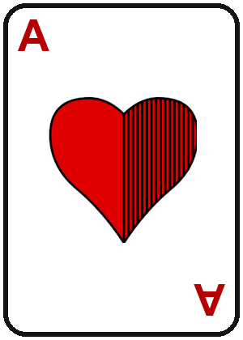

<!DOCTYPE html>
<html lang="de">
<head>
<meta charset="UTF-8">
<!-- Verhindert, dass Browser diese Datei zwischenspeichern (Cache-Buster).
     Damit ist es egal, ob die Seite über die index.html mit ?v=X-Parameter oder
     über einen direkten Link/Lesezeichen ohne Parameter aufgerufen wird - es wird
     immer die aktuell auf GitHub Pages liegende Version geladen. -->
<meta http-equiv="Cache-Control" content="no-cache, no-store, must-revalidate">
<meta http-equiv="Pragma" content="no-cache">
<meta http-equiv="Expires" content="0">
<meta name="viewport" content="width=device-width, initial-scale=1.0, user-scalable=no">
<meta name="apple-mobile-web-app-capable" content="yes">
<meta name="apple-mobile-web-app-status-bar-style" content="black-translucent">
<meta name="apple-mobile-web-app-title" content="20 Ab">
<meta name="theme-color" content="#15161a">
<title>🃏 20 Ab - Stammtisch Edition</title>
<link rel="preconnect" href="https://fonts.googleapis.com">
<link rel="preconnect" href="https://fonts.gstatic.com" crossorigin>
<link href="https://fonts.googleapis.com/css2?family=Cinzel:wght@600;700;900&family=Segoe+UI&display=swap" rel="stylesheet">
<style>
  * { box-sizing: border-box; margin: 0; padding: 0; font-family: 'Segoe UI', Roboto, Helvetica, Arial, sans-serif; }
  h1, h2, h3, h4 { font-family: 'Cinzel', 'Segoe UI', serif; letter-spacing: 1px; }
  body {
    background-color: #5a3620;
    background-image:
      repeating-linear-gradient(93deg, rgba(0,0,0,0.09) 0px, rgba(0,0,0,0.09) 1px, transparent 2px, transparent 17px),
      repeating-linear-gradient(93deg, rgba(255,214,170,0.05) 0px, rgba(255,214,170,0.05) 1px, transparent 1px, transparent 8px),
      radial-gradient(ellipse 260px 90px at 15% 22%, rgba(0,0,0,0.22), transparent 70%),
      radial-gradient(ellipse 220px 80px at 82% 68%, rgba(0,0,0,0.2), transparent 70%),
      radial-gradient(ellipse 200px 70px at 55% 90%, rgba(0,0,0,0.16), transparent 70%),
      linear-gradient(160deg, #6d4527 0%, #5a3620 45%, #402813 100%);
    color: #f5e9d6;
    -webkit-tap-highlight-color: transparent;
    min-height: 100vh;
    background-attachment: fixed;
    overflow-x: hidden;
  }
  input, textarea, button { font-family: inherit; }
  input:focus { outline: none; border-color: #ffffff !important; box-shadow: 0 0 0 2px rgba(255, 255, 255, 0.25); }
  button:active { transform: scale(0.95); }

  .glass {
    background: linear-gradient(160deg, rgba(255, 255, 255, 0.07), rgba(0, 0, 0, 0.3));
    backdrop-filter: blur(12px);
    -webkit-backdrop-filter: blur(12px);
    border: 1px solid rgba(255, 255, 255, 0.18);
    border-radius: 12px;
    box-shadow: 0 6px 20px rgba(0, 0, 0, 0.45);
    position: relative;
    z-index: 10;
    margin-bottom: 20px;
  }

  .neon-text {
    font-family: 'Cinzel', serif;
    color: #ffffff;
    text-shadow: 0 1px 2px rgba(0, 0, 0, 0.6);
    font-size: 2.8rem;
    font-weight: 900;
    letter-spacing: 3px;
    text-align: center;
  }

  .pulse-btn { animation: pulse 3s infinite; }
  @keyframes pulse {
    0% { box-shadow: 0 0 0 rgba(255, 255, 255, 0.25); }
    50% { box-shadow: 0 0 12px rgba(255, 255, 255, 0.4); }
    100% { box-shadow: 0 0 0 rgba(255, 255, 255, 0.25); }
  }

  .suit-container {
    position: fixed;
    top: 0; left: 0; width: 100vw; height: 100vh;
    overflow: hidden;
    z-index: 1;
    pointer-events: none;
  }
  .floating-suit {
    position: absolute;
    bottom: -10%;
    font-size: 3rem;
    animation: floatUp 12s infinite linear;
    opacity: 0.5;
  }
  .floating-suit.red { color: rgba(255, 255, 255, 0.5); }
  .floating-suit.gold { color: rgba(255, 255, 255, 0.35); }

  @keyframes floatUp {
    0% { transform: translateY(0) rotate(0deg); opacity: 0; }
    10% { opacity: 0.5; }
    90% { opacity: 0.5; }
    100% { transform: translateY(-120vh) rotate(360deg); opacity: 0; }
  }

  /* Kartenlos-Modus (Beta): einfache Austeil-Animation, Karten selbst gezeichnet - Platzhalter,
     kann später durch echte Kartengrafiken ersetzt werden. */
  @keyframes dealCardIn {
    0% { transform: translateY(-40px) scale(0.7) rotate(-6deg); opacity: 0; }
    100% { transform: translateY(0) scale(1) rotate(0deg); opacity: 1; }
  }
  .deal-card { animation: dealCardIn 0.4s ease backwards; }

  /* Kompletter Stich bleibt kurz stehen (alle Karten sichtbar), bevor er automatisch
     weggeräumt wird - die Karten fadenverzögert erst am Ende des 2s-Fensters aus. */
  @keyframes trickClear {
    0% { transform: scale(1); opacity: 1; }
    100% { transform: scale(0.7) translateY(-16px); opacity: 0; }
  }
  .trick-clear { animation: trickClear 0.5s ease forwards; animation-delay: 1.5s; }
</style>
<script src="https://unpkg.com/@babel/standalone/babel.min.js"></script>
<script src="https://cdnjs.cloudflare.com/ajax/libs/react/18.2.0/umd/react.production.min.js"></script>
<script src="https://cdnjs.cloudflare.com/ajax/libs/react-dom/18.2.0/umd/react-dom.production.min.js"></script>
<script src="https://www.gstatic.com/firebasejs/10.12.2/firebase-app-compat.js"></script>
<script src="https://www.gstatic.com/firebasejs/10.12.2/firebase-database-compat.js"></script>
</head>
<body>
<div id="root"></div>

<script>
  // ── Zusätzlicher JS-Cache-Buster (Ergänzung zu den Cache-Control Meta-Tags oben) ──
  // Manche Browser (v.a. mobile) respektieren Cache-Control Meta-Tags nicht zuverlässig
  // und zeigen trotzdem eine alte gecachte Version dieser Seite. Dieser Check erzwingt
  // EINMALIG pro neuem Aufruf (nicht in einer Endlosschleife) ein hartes Neuladen mit
  // einem frischen Zeitstempel-Parameter, falls die Seite (vermutlich) aus dem Cache kam.
  (function () {
    try {
      var url = new URL(window.location.href);
      var hasFreshParam = url.searchParams.has("_fresh");
      // performance.navigation.type === 0 bedeutet "normale Navigation" (kein Reload).
      // Wenn die Seite ohne unseren Marker geladen wurde, könnte es eine alte,
      // gecachte Kopie sein -> einmal mit Zeitstempel neu laden, danach Marker gesetzt,
      // sodass es nicht in einer Schleife landet.
      if (!hasFreshParam) {
        url.searchParams.set("_fresh", Date.now());
        window.location.replace(url.toString());
      }
    } catch (e) {
      // Falls aus irgendeinem Grund etwas schiefgeht, App trotzdem ganz normal laden.
    }
  })();
</script>

<script type="text/babel">
const { useState, useEffect } = React;

const SUITS = [
  { id: "eichel", label: "Eichel", emoji: "🌰", icon: "assets/suits/eichel.png", color: "#a0522d", double: false, multiplier: 1 },
  { id: "herz", label: "Herz", emoji: "❤️", icon: "assets/suits/herz.png", color: "#8f2233", double: true, multiplier: 2 },
  { id: "bollen", label: "Bollen", emoji: "🔔", icon: "assets/suits/bollen.png", color: "#a15c2a", double: false, multiplier: 1 },
  { id: "blatt", label: "Blatt", emoji: "🍃", icon: "assets/suits/blatt.png", color: "#0ba360", double: false, multiplier: 1 },
  { id: "herzblind", label: "Herz Blind", emoji: "🃏❤️", icon: "assets/suits/herz.png", color: "#5c616c", double: true, multiplier: 4 }
];

const MAX_POINTS = 20;
const CENT_PER_POINT = 0.10;
const SESSION_PASSWORD = "$$$";
const MAX_SESSION_PLAYERS = 5; // Kartenlegen geht nicht mehr auf, wenn mehr als 5 Leute mitspielen

// ═══════════════════ KARTENLOS-MODUS (Beta): Deck & Hilfsfunktionen ═══════════════════
// Doppeltes Gaigel/Binokel-Blatt: Ass, 10, König, Ober, Unter je Farbe (Eichel/Herz/Bollen/
// Blatt), jede Karte zweimal - macht 5 Werte * 4 Farben * 2 = 40 Karten. "Herz Blind" ist
// kein eigener Farb-Trumpf im Deck, sondern eine Sonderansage außerhalb des Reizens (Phase 1
// des Kartenlos-Modus behandelt Herz Blind daher noch nicht - siehe getunreizenTrump unten).
const CARD_RANKS = [
  { id: "A",  label: "Ass",   short: "A" },
  { id: "10", label: "10",    short: "10" },
  { id: "K",  label: "König", short: "K" },
  { id: "O",  label: "Ober",  short: "O" },
  { id: "U",  label: "Unter", short: "U" },
];
const CARD_SUIT_IDS = ["eichel", "herz", "bollen", "blatt"];

function buildCardDeck() {
  const deck = [];
  CARD_SUIT_IDS.forEach(suitId => {
    CARD_RANKS.forEach(rank => {
      // "copy" unterscheidet die beiden identischen Exemplare jeder Karte (fürs React-key /
      // fürs Stich-Tiebreak später in Phase 2: zuerst gespielte gewinnt bei Gleichstand).
      deck.push({ id: `${suitId}_${rank.id}_1`, suit: suitId, rank: rank.id, copy: 1 });
      deck.push({ id: `${suitId}_${rank.id}_2`, suit: suitId, rank: rank.id, copy: 2 });
    });
  });
  return deck;
}

function shuffle(arr) {
  const a = arr.slice();
  for (let i = a.length - 1; i > 0; i--) {
    const j = Math.floor(Math.random() * (i + 1));
    [a[i], a[j]] = [a[j], a[i]];
  }
  return a;
}

// Verteilt 6 Karten pro Spieler aus einem frisch gemischten Deck, Rest bleibt als Talon
// (für die spätere Tausch-Phase) übrig.
function dealCards(players) {
  const deck = shuffle(buildCardDeck());
  const hands = {};
  players.forEach(p => { hands[p.id] = deck.splice(0, 6); });
  return { hands, talon: deck };
}

// Kartenwertigkeit absteigend: Ass > 10 > König > Ober > Unter (siehe Spielregeln-Screen).
const CARD_RANK_ORDER = { A: 5, "10": 4, K: 3, O: 2, U: 1 };

// Reihenfolge, in der die Karten EINES Stichs ausgespielt werden: beginnend beim Stich-
// Anführer (Ansager bei Stich 1, danach immer der vorherige Stichgewinner), reihum in der
// normalen Sitzordnung (gamePlayers-Array), aber NUR die Spieler, die diese Runde "mit" sind.
function getTrickPlayOrder(gp, leaderId, mitIds) {
  const n = gp.length;
  const leaderIdx = gp.findIndex(p => p.id === leaderId);
  const order = [];
  for (let i = 0; i < n; i++) {
    const pid = gp[(leaderIdx + i) % n].id;
    if (mitIds.includes(pid)) order.push(pid);
  }
  return order;
}

// Ermittelt den Gewinner eines kompletten Stichs: Trumpf schlägt jede andere Farbe, sonst
// gewinnt die höchste Karte der angespielten Farbe. Bei zwei gleichwertigen Karten (möglich,
// da doppeltes Blatt) gewinnt die ZUERST gespielte - da playOrder in Spielreihenfolge sortiert
// ist und "best" nur bei einem ECHT höheren Rang wechselt, bleibt bei Gleichstand die zuerst
// gespielte automatisch stehen.
// Hausregel: wie viele Karten man beim Tausch maximal abgeben darf, hängt von der
// Spielerzahl ab (weniger Spieler = mehr Karten pro Spieler bleiben im Talon übrig).
function getMaxSwapCount(playerCount) {
  if (playerCount <= 2) return 6;
  if (playerCount === 3) return 5;
  return 4;
}

// Farbzwang + Stichzwang: muss die angespielte Farbe bedienen falls möglich; kann er das
// nicht, muss er stechen (Trumpf spielen) falls er welchen hat; sonst darf er alles spielen.
function isLegalTrickPlay(cs, card, hand) {
  if (cs.trumpId === "herzblind") return true; // blind gespielt, kein Farbzwang möglich
  const ledSuit = cs.trick.ledSuit;
  if (!ledSuit) return true;
  const hasLed = hand.some(c => c.suit === ledSuit);
  if (hasLed) return card.suit === ledSuit;
  const hasTrump = hand.some(c => c.suit === cs.trumpId);
  if (hasTrump) return card.suit === cs.trumpId;
  return true;
}

function resolveTrick(cardsPlayed, playOrder, ledSuit, trumpId) {
  const trumpPlays = playOrder.filter(pid => cardsPlayed[pid].suit === trumpId);
  const pool = trumpPlays.length > 0 ? trumpPlays : playOrder.filter(pid => cardsPlayed[pid].suit === ledSuit);
  let best = pool[0];
  for (let i = 1; i < pool.length; i++) {
    const pid = pool[i];
    if (CARD_RANK_ORDER[cardsPlayed[pid].rank] > CARD_RANK_ORDER[cardsPlayed[best].rank]) best = pid;
  }
  return best;
}

const STAMMSPIELER_NAMES = ["Adi", "Rob", "Kusi", "Basti", "Aron", "Cedi", "J", "Joel", "Cengiz", "Kev", "Heiko"];

function isStammSpieler(player) {
  return !!player.stammSpieler || STAMMSPIELER_NAMES.includes(player.name);
}

function uid() { return Math.random().toString(36).slice(2, 9); }
function euro(val) { const sign = val >= 0 ? "+" : ""; return sign + val.toFixed(2).replace(".", ",") + " €"; }

// Persistente, geräte-/browserlokale Identität (localStorage) - wird genutzt, um pro Session
// einen "Host" zuzuordnen (wer die Session erstellt hat bzw. sie aktuell übernommen hat).
const DEVICE_ID_KEY = "20ab-device-id";
function getOrCreateDeviceId() {
  try {
    let id = localStorage.getItem(DEVICE_ID_KEY);
    if (!id) {
      id = uid() + uid();
      localStorage.setItem(DEVICE_ID_KEY, id);
    }
    return id;
  } catch (e) {
    return uid() + uid(); // Fallback, falls localStorage blockiert ist (z.B. privater Modus)
  }
}

// Stellt sicher, dass alle Stammspieler in der Registry vorhanden sind.
// Gibt { data, changed } zurück — changed=true wenn etwas hinzugefügt/angepasst wurde.
function ensureStammSpieler(registryData) {
  let updated = registryData ? [...registryData] : [];
  let changed = false;
  STAMMSPIELER_NAMES.forEach(name => {
    const idx = updated.findIndex(p => p.name === name);
    if (idx === -1) {
      updated.push({ id: uid(), name, stammSpieler: true, games: [], session: { balance: 0 } });
      changed = true;
    } else if (!updated[idx].stammSpieler) {
      updated[idx] = { ...updated[idx], stammSpieler: true };
      changed = true;
    }
  });
  return { data: updated, changed };
}

// Ordnet ein Spiel (anhand seines timestamp) einem von 5 Zeit-Reitern zu.
const HISTORY_BUCKETS = [
  { id: "heute", label: "📅 Heute" },
  { id: "gestern", label: "🌙 Gestern" },
  { id: "woche", label: "📆 Diese Woche" },
  { id: "aelterWoche", label: "🗓️ Älter als eine Woche" },
  { id: "aelterMonat", label: "🗓️ Älter als ein Monat" },
];
function getHistoryBucket(timestamp) {
  const now = new Date();
  const d = new Date(timestamp);
  const startOfToday = new Date(now.getFullYear(), now.getMonth(), now.getDate());
  const startOfYesterday = new Date(startOfToday); startOfYesterday.setDate(startOfYesterday.getDate() - 1);
  const startOfWeek = new Date(startOfToday); startOfWeek.setDate(startOfWeek.getDate() - 7);
  const startOfMonth = new Date(startOfToday); startOfMonth.setDate(startOfMonth.getDate() - 30);

  if (d >= startOfToday) return "heute";
  if (d >= startOfYesterday) return "gestern";
  if (d >= startOfWeek) return "woche";
  if (d >= startOfMonth) return "aelterWoche";
  return "aelterMonat";
}

// Berechnet die dynamischen Spielstände basierend auf der Rundenhistorie eines Spiels
// Sonderregel ANSAGER (gilt NICHT bei Herz Blind, da dort kein Ansager existiert):
// - Macht er >= seine angesagte Stichzahl (r.bidTricks): normale Regel wie jeder Mitspieler
//   (Punkte runter je gemachtem Stich, mit Trumpf-Multiplikator).
// - Macht er WENIGER als angesagt: er läuft (6 + bidTricks) * multiplier nach OBEN,
//   unabhängig davon wie viele Stiche er tatsächlich gemacht hat (0 oder mehr, aber < bidTricks).
function calculateScoresFromRounds(players, rounds) {
  let currentScores = players.map(() => MAX_POINTS);
  let currentRaus = {};
  players.forEach(p => currentRaus[p.id] = 0);

  rounds.forEach((r) => {
    // Sonderfall: manuell angepasste Runde (entsteht beim "Runde abbrechen" -> manuell
    // werten, falls dabei noch KEIN Sieger entsteht). Hier wird der Punktestand direkt
    // aus r.manualScores übernommen, statt aus Trumpf/Stichen berechnet zu werden -
    // raus/Pflicht/Ansager-Logik ist hier irrelevant, da es kein normales Rundenschema ist.
    if (r.isManualAdjustment) {
      players.forEach((p, idx) => {
        if (typeof r.manualScores[idx] === "number") {
          currentScores[idx] = r.manualScores[idx];
        }
      });
      players.forEach(p => currentRaus[p.id] = 0); // Raus-Streak wird durch eine manuelle Anpassung zurückgesetzt
      return; // nächste Runde
    }

    const multiplier = r.trump.multiplier ?? (r.trump.double ? 2 : 1); // Fallback für alte gespeicherte Runden ohne multiplier-Feld
    const isAnsagerRound = r.trump.id !== "herzblind" && !!r.ansagerId;
    players.forEach((p, idx) => {
      // Bei 5 Spielern setzt in jeder Runde der Geber aus (rotiert automatisch mit der
      // Geber-Rotation durch). Diese Runde zählt für ihn NICHT mit: kein Punktestand-Effekt,
      // keine Veränderung/Reset seiner Raus-Serie, keine Pflicht-Regeln - er nimmt schlicht
      // nicht teil.
      if (r.sittingOutId && r.sittingOutId === p.id) return;
      const forcedByTrump = r.trump.id === "eichel";
      const forcedByAnsager = isAnsagerRound && r.ansagerId === p.id; // Ansager kann nicht raus
      const forcedByPoints = currentScores[idx] <= 6;
      const forcedByRaus = currentRaus[p.id] >= 2;
      const isForced = forcedByTrump || forcedByAnsager || forcedByPoints || forcedByRaus;
      
      const status = isForced ? "mit" : r.playerStatus[p.id];
      const tricks = r.playerTricks[p.id] || 0;

      if (status === "mit") {
        currentRaus[p.id] = 0;
        const isAnsagerHere = isAnsagerRound && r.ansagerId === p.id;
        if (isAnsagerHere && tricks < r.bidTricks) {
          // Ansager hat sein Ansage-Ziel verfehlt -> läuft (6 + bidTricks) * multiplier nach oben
          currentScores[idx] += ((6 + r.bidTricks) * multiplier);
        } else if (tricks > 0) {
          // Normalfall (auch für den Ansager, falls er sein Ziel erreicht/übertroffen hat)
          currentScores[idx] -= (tricks * multiplier);
        } else {
          currentScores[idx] += (6 * multiplier);
        }
      } else {
        currentRaus[p.id] = (currentRaus[p.id] || 0) + 1;
      }
    });
  });
  return { scores: currentScores, consecutiveRaus: currentRaus };
}

// Bei genau 5 Spielern setzt in jeder Runde der aktuelle Geber aus (rotiert automatisch
// mit der Geber-Rotation durch, sodass immer nur 4 Leute tatsächlich mitspielen). Bei
// anderen Spielerzahlen gibt es kein Aussetzen.
function getSittingOutId(playersList, dealerIndex) {
  return playersList.length === 5 ? playersList[dealerIndex]?.id ?? null : null;
}

// Berechnet pro Spieler, wie sich sein Punktestand GENAU in einer einzelnen Runde
// verändert hat (Differenz vorher/nachher) - für die Anzeige "Name: -4" (grün, runter,
// gut) bzw. "Name: +9" (rot, rauf, schlecht) in der Runden-Übersicht.
function computeRoundDelta(players, rounds, roundIdx) {
  const before = calculateScoresFromRounds(players, rounds.slice(0, roundIdx)).scores;
  const after = calculateScoresFromRounds(players, rounds.slice(0, roundIdx + 1)).scores;
  const deltas = {};
  players.forEach((p, i) => { deltas[p.id] = after[i] - before[i]; });
  return deltas;
}

// Wie computeRoundDelta, liefert aber zusätzlich den Punktestand vor und nach der Runde
// (jeweils auf 0 gekappt, wie überall sonst in der Anzeige) - für die Darstellung
// "Name: 14 ⬇️4 10" (Punktestand vorher, Pfeil+Betrag, Punktestand nachher).
function computeRoundScoreChange(players, rounds, roundIdx) {
  const before = calculateScoresFromRounds(players, rounds.slice(0, roundIdx)).scores;
  const after = calculateScoresFromRounds(players, rounds.slice(0, roundIdx + 1)).scores;
  const result = {};
  players.forEach((p, i) => {
    result[p.id] = {
      before: before[i] < 0 ? 0 : before[i],
      after: after[i] < 0 ? 0 : after[i],
      delta: after[i] - before[i],
    };
  });
  return result;
}

// Berechnet Spieler-Statistiken aus der kompletten (nicht gelöschten) Spielhistorie eines
// Spielers. Wird als eigene Funktion gehalten, damit hier nach und nach weitere Kennzahlen
// ergänzt werden können, ohne die Aufrufstelle (PlayerStats-Screen) anfassen zu müssen.
// gamesOverride: optionale explizite Spiele-Liste (z.B. eine Teilmenge "bis zu diesem
// Zeitpunkt") - genutzt für den zeitlichen Verlauf einzelner Kennzahlen. Ohne Angabe werden
// wie gehabt ALLE (nicht gelöschten) Spiele des Spielers verwendet.
function computePlayerStats(player, gamesOverride) {
  const games = gamesOverride || (player.games || []).filter(g => !g.deleted);
  const gamesPlayed = games.length;
  const gamesWon = games.filter(g => g.won).length;
  const winRate = gamesPlayed > 0 ? (gamesWon / gamesPlayed) * 100 : 0;

  let ansagerRoundsCount = 0;
  let bidTricksSum = 0;
  const trumpCounts = {}; // trump.id -> Anzahl (als Ansager gewählt)
  const trumpSuccessCounts = {}; // trump.id -> Anzahl, wie oft als Ansager damit Punkte gutgemacht (Δ < 0)
  const trumpFailureCounts = {}; // trump.id -> Anzahl, wie oft als Ansager damit nach oben gelaufen (Δ > 0)

  let totalRounds = 0;   // alle Runden über alle Spiele hinweg
  let mitRounds = 0;     // Runden, in denen der Spieler mitgespielt hat (egal ob freiwillig oder Pflicht)
  let rausRounds = 0;    // Runden, in denen der Spieler raus gegangen ist
  let laufRounds = 0;    // Runden, in denen der Spieler (mitgespielt) nach oben gelaufen ist
  let tricksMadeSum = 0; // Summe der gemachten Stiche über alle "mit"-Runden
  const nemesisCounts = {}; // co-playerId -> { name, count }: wie oft dieser Mitspieler dabei war, wenn DER SPIELER nach oben gelaufen ist
  const lieblingsopferCounts = {}; // co-playerId -> { name, count }: wie oft dieser Mitspieler nach oben gelaufen ist, während DER SPIELER dabei war

  games.forEach(g => {
    const rounds = g.rounds || [];
    rounds.forEach((r, rIdx) => {
      if (r.sittingOutId === player.id) return; // Aussetz-Runde zählt für ihn nicht mit
      totalRounds++;
      const status = r.playerStatus?.[player.id] || "mit";
      const deltas = computeRoundDelta(g.players, rounds, rIdx);

      // Lieblingsopfer: zählt für JEDEN Mitspieler, der in dieser Runde (mitgespielt) nach
      // oben gelaufen ist, während DER SPIELER dabei war (egal ob er selbst mitgespielt oder
      // rausgegangen ist, nur nicht selbst ausgesetzt hat) - unabhängig vom Betrag, nur die
      // Häufigkeit zählt.
      g.players.forEach(co => {
        if (co.id === player.id || co.id === r.sittingOutId) return;
        if ((deltas[co.id] || 0) > 0) {
          if (!lieblingsopferCounts[co.id]) lieblingsopferCounts[co.id] = { name: co.name, count: 0 };
          lieblingsopferCounts[co.id].count++;
        }
      });

      if (status === "raus") {
        rausRounds++;
        return;
      }
      mitRounds++;
      tricksMadeSum += (r.playerTricks?.[player.id] || 0);
      const delta = deltas[player.id] || 0;
      if (delta > 0) {
        laufRounds++;
        // Nemesis: zählt jeden Mitspieler, der in dieser Runde ebenfalls dabei war (nicht
        // selbst ausgesetzt hat) - unabhängig vom Betrag, nur die Häufigkeit zählt.
        g.players.forEach(co => {
          if (co.id === player.id || co.id === r.sittingOutId) return;
          if (!nemesisCounts[co.id]) nemesisCounts[co.id] = { name: co.name, count: 0 };
          nemesisCounts[co.id].count++;
        });
      }

      if (r.ansagerId === player.id) {
        ansagerRoundsCount++;
        bidTricksSum += (r.bidTricks || 0);
        trumpCounts[r.trump.id] = (trumpCounts[r.trump.id] || 0) + 1;
        if (delta < 0) trumpSuccessCounts[r.trump.id] = (trumpSuccessCounts[r.trump.id] || 0) + 1;
        if (delta > 0) trumpFailureCounts[r.trump.id] = (trumpFailureCounts[r.trump.id] || 0) + 1;
      }
    });
  });

  const avgBidTricks = ansagerRoundsCount > 0 ? bidTricksSum / ansagerRoundsCount : null;
  const laufquote = mitRounds > 0 ? (laufRounds / mitRounds) * 100 : 0;
  const rausquote = totalRounds > 0 ? (rausRounds / totalRounds) * 100 : 0;
  const avgTricksMade = mitRounds > 0 ? tricksMadeSum / mitRounds : null;

  let favoriteTrump = null;
  let favoriteTrumpCount = 0;
  Object.entries(trumpCounts).forEach(([trumpId, count]) => {
    if (count > favoriteTrumpCount) {
      favoriteTrumpCount = count;
      favoriteTrump = SUITS.find(s => s.id === trumpId) || null;
    }
  });

  // Nemesis: der Mitspieler, der am häufigsten dabei war (nicht selbst ausgesetzt hat), wenn
  // DIESER Spieler (mitgespielt) nach oben gelaufen ist (unabhängig vom Betrag - reine
  // Häufigkeit).
  let nemesis = null;
  Object.values(nemesisCounts).forEach(entry => {
    if (!nemesis || entry.count > nemesis.count) nemesis = entry;
  });

  // Lieblingsopfer: der Mitspieler, der am häufigsten (mitgespielt) nach oben gelaufen ist,
  // während DIESER Spieler dabei war (nicht selbst ausgesetzt hat) - unabhängig vom Betrag,
  // reine Häufigkeit. Das Gegenstück zu Nemesis.
  let lieblingsopfer = null;
  Object.values(lieblingsopferCounts).forEach(entry => {
    if (!lieblingsopfer || entry.count > lieblingsopfer.count) lieblingsopfer = entry;
  });

  // Bester/schlechtester Trumpf als Ansager: die Farbe, mit der er am häufigsten Punkte
  // gutgemacht (Δ < 0) bzw. am häufigsten nach oben gelaufen (Δ > 0) ist. Der Betrag spielt
  // dabei keine Rolle, nur die reine Häufigkeit.
  let bestTrump = null, bestTrumpCount = 0;
  Object.entries(trumpSuccessCounts).forEach(([trumpId, count]) => {
    if (count > bestTrumpCount) {
      bestTrumpCount = count;
      bestTrump = SUITS.find(s => s.id === trumpId) || null;
    }
  });
  let worstTrump = null, worstTrumpCount = 0;
  Object.entries(trumpFailureCounts).forEach(([trumpId, count]) => {
    if (count > worstTrumpCount) {
      worstTrumpCount = count;
      worstTrump = SUITS.find(s => s.id === trumpId) || null;
    }
  });

  // Endpunkte + bestes/schlechtestes EINZELSPIEL (nach moneyDelta) über alle Spiele hinweg
  let finalScoreSum = 0;
  let bestGame = null;  // { id, date, moneyDelta } mit dem höchsten Gewinn EINES SPIELS
  let worstGame = null; // { id, date, moneyDelta } mit dem höchsten Verlust EINES SPIELS
  games.forEach(g => {
    const myIdx = g.players.findIndex(pl => pl.id === player.id);
    finalScoreSum += g.finalScores[myIdx];
    const info = { id: g.id, date: g.date, moneyDelta: g.moneyDelta };
    if (!bestGame || info.moneyDelta > bestGame.moneyDelta) bestGame = info;
    if (!worstGame || info.moneyDelta < worstGame.moneyDelta) worstGame = info;
  });
  const avgFinalScore = gamesPlayed > 0 ? finalScoreSum / gamesPlayed : null;

  // Bestes/schlechtestes GESAMTERGEBNIS EINER SESSION (Summe aller moneyDelta-Werte
  // dieses Spielers über alle Spiele derselben Session). Spiele ohne sessionId (Legacy,
  // vor dem Session-Feature) zählen als eigenständige "Ein-Spiel-Session".
  const sessionTotals = new Map(); // key -> { sessionId, gameId, date, sum, latestTimestamp }
  games.forEach(g => {
    const key = g.sessionId || `legacy-${g.id}`;
    if (!sessionTotals.has(key)) {
      sessionTotals.set(key, { sessionId: g.sessionId || null, gameId: g.id, date: g.date, sum: 0, latestTimestamp: g.timestamp });
    }
    const entry = sessionTotals.get(key);
    entry.sum += g.moneyDelta;
    if (new Date(g.timestamp) > new Date(entry.latestTimestamp)) {
      entry.latestTimestamp = g.timestamp;
      entry.date = g.date;
    }
  });
  let bestSession = null;  // { sessionId, gameId, date, sum } mit dem höchsten Gewinn EINER SESSION
  let worstSession = null; // { sessionId, gameId, date, sum } mit dem höchsten Verlust EINER SESSION
  sessionTotals.forEach(entry => {
    if (!bestSession || entry.sum > bestSession.sum) bestSession = entry;
    if (!worstSession || entry.sum < worstSession.sum) worstSession = entry;
  });

  return {
    gamesPlayed, gamesWon, winRate,
    avgBidTricks, favoriteTrump, favoriteTrumpCount,
    bestTrump, bestTrumpCount, worstTrump, worstTrumpCount,
    trumpCounts, trumpSuccessCounts, trumpFailureCounts,
    totalRounds, mitRounds, rausRounds, laufRounds,
    laufquote, rausquote, avgTricksMade,
    avgFinalScore, bestGame, worstGame,
    bestSession, worstSession,
    nemesis, lieblingsopfer,
  };
}

// Baut den zeitlichen Verlauf des Kontostands eines Spielers: ein Punkt pro Session, die
// er gespielt hat (Spiele ohne sessionId = alte Legacy-Spiele werden als eigener Punkt
// behandelt), mit dem kumulierten Kontostand nach dieser Session.
function computePlayerBalanceTimeline(player) {
  const games = (player.games || []).filter(g => !g.deleted).sort((a, b) => new Date(a.timestamp) - new Date(b.timestamp));
  const bySession = new Map(); // key -> { timestamp, sum }
  games.forEach(g => {
    const key = g.sessionId || `legacy-${g.id}`;
    if (!bySession.has(key)) bySession.set(key, { timestamp: g.timestamp, sum: 0 });
    const entry = bySession.get(key);
    entry.sum += g.moneyDelta;
    if (new Date(g.timestamp) > new Date(entry.timestamp)) entry.timestamp = g.timestamp;
  });
  const ordered = Array.from(bySession.values()).sort((a, b) => new Date(a.timestamp) - new Date(b.timestamp));
  let cumulative = 0;
  return ordered.map(entry => {
    cumulative += entry.sum;
    return { timestamp: entry.timestamp, sessionDelta: entry.sum, cumulative };
  });
}

// Baut den zeitlichen (kumulativen) Verlauf EINER Kennzahl aus computePlayerStats: ein Punkt
// pro Session, der zeigt, wie sich die Kennzahl über die "Karriere" des Spielers bis zu
// diesem Zeitpunkt entwickelt hat (jeweils berechnet aus ALLEN Spielen bis einschließlich
// dieser Session). metricKey muss ein Feld aus computePlayerStats() sein (z.B. "winRate",
// "laufquote", "rausquote", "avgBidTricks", "avgTricksMade", "avgFinalScore").
function computePlayerStatTimeline(player, metricKey) {
  const games = (player.games || []).filter(g => !g.deleted).sort((a, b) => new Date(a.timestamp) - new Date(b.timestamp));
  const bySession = new Map(); // key -> { latestTimestamp, games[] }
  games.forEach(g => {
    const key = g.sessionId || `legacy-${g.id}`;
    if (!bySession.has(key)) bySession.set(key, { latestTimestamp: g.timestamp, games: [] });
    const entry = bySession.get(key);
    entry.games.push(g);
    if (new Date(g.timestamp) > new Date(entry.latestTimestamp)) entry.latestTimestamp = g.timestamp;
  });
  const ordered = Array.from(bySession.values()).sort((a, b) => new Date(a.latestTimestamp) - new Date(b.latestTimestamp));

  let cumulativeGames = [];
  return ordered.map(entry => {
    cumulativeGames = cumulativeGames.concat(entry.games);
    const stats = computePlayerStats(player, cumulativeGames);
    return { timestamp: entry.latestTimestamp, value: stats[metricKey] };
  }).filter(p => p.value !== null && p.value !== undefined);
}

// Ermittelt die längste Siegesserie und die längste Verlustserie eines Spielers
// (aufeinanderfolgende Spiele, chronologisch sortiert). Jede Serie liefert zusätzlich eine
// Liste an "Links" - eine pro Session, die diese Serie berührt (mehrere, falls sich die
// Serie über mehrere Sessions erstreckt). Spiele ohne sessionId (Legacy, vor dem
// Session-Feature) werden einzeln als eigener Link auf das jeweilige Spiel behandelt.
function computePlayerStreaks(player) {
  const games = (player.games || []).filter(g => !g.deleted).sort((a, b) => new Date(a.timestamp) - new Date(b.timestamp));

  let bestWin = { length: 0, games: [] };
  let bestLoss = { length: 0, games: [] };
  let curType = null;
  let curGames = [];

  games.forEach(g => {
    const type = g.won ? "win" : "loss";
    if (type === curType) {
      curGames.push(g);
    } else {
      curType = type;
      curGames = [g];
    }
    if (curType === "win" && curGames.length > bestWin.length) bestWin = { length: curGames.length, games: [...curGames] };
    if (curType === "loss" && curGames.length > bestLoss.length) bestLoss = { length: curGames.length, games: [...curGames] };
  });

  function toSessionLinks(gamesArr) {
    const seen = new Set();
    const links = [];
    gamesArr.forEach(g => {
      const key = g.sessionId ? `session:${g.sessionId}` : `legacy:${g.id}`;
      if (seen.has(key)) return;
      seen.add(key);
      links.push({ key, label: g.date, sessionId: g.sessionId || null, gameId: g.id });
    });
    return links;
  }

  return {
    bestWinStreak: { length: bestWin.length, links: toSessionLinks(bestWin.games) },
    bestLossStreak: { length: bestLoss.length, links: toSessionLinks(bestLoss.games) },
  };
}

// Prüft, ob ein Spieler in einer Runde ZWINGEND "mit" gehen musste (Eichel-Runde, er selbst
// Ansager, Punktestand <= 6, oder 3. Mal in Folge raus) - unabhängig davon, was tatsächlich
// eingetragen wurde. Spiegelt dieselben Regeln wie getForcedReason() im Live-Spiel, aber
// zustandslos nutzbar für die nachträgliche Auswertung abgeschlossener Sessions.
function isRoundForced(trump, ansagerId, playerId, scoresBefore, idx, rausBefore) {
  if (trump.id === "eichel") return true;
  if (trump.id !== "herzblind" && ansagerId === playerId) return true;
  if (scoresBefore[idx] <= 6) return true;
  if ((rausBefore[playerId] || 0) >= 2) return true;
  return false;
}

// Berechnet Statistiken für EINE GANZE SESSION (alle Spieler, die daran teilgenommen haben).
// games: alle (nicht gelöschten) Spiele dieser Session (z.B. via getUniqueGames().filter(...)).
// registry: die komplette Spieler-Registry (für Namen + moneyDelta/won-Nachschlagewerte).
function computeSessionStats(games, registry) {
  const finishedGames = games.filter(g => !g.deleted);
  const totals = new Map();

  function ensureEntry(id, name) {
    if (!totals.has(id)) {
      totals.set(id, {
        id, name, moneyTotal: 0, gamesWon: 0, gamesLost: 0,
        sprinterCount: 0, luckerCount: 0, herzRunCount: 0,
        bidTricksTotal: 0, ansagerRoundsCount: 0, ansagerFailCount: 0, bigBallsCount: 0, bidSixCount: 0,
        tacticCount: 0, rausCount: 0, macherCount: 0,
        einstelligCount: 0, over50Count: 0, rankImprovement: 0,
      });
    }
    return totals.get(id);
  }

  finishedGames.forEach(g => {
    g.players.forEach(p => {
      const entry = ensureEntry(p.id, p.name);
      const regPlayer = registry.find(rp => rp.id === p.id);
      const specificGame = regPlayer?.games?.find(rg => rg.id === g.id);
      const moneyDelta = specificGame?.moneyDelta || 0;
      const won = specificGame?.won || false;
      entry.moneyTotal += moneyDelta;
      if (won) entry.gamesWon++; else entry.gamesLost++;
    });

    const rounds = g.rounds || [];
    rounds.forEach((r, rIdx) => {
      const deltas = computeRoundDelta(g.players, rounds, rIdx);
      // Punktestand + Raus-Streak JEWEILS VOR dieser Runde (für Einstellig/Herz Blind/Macher).
      const { scores: scoresBefore, consecutiveRaus: rausBefore } = calculateScoresFromRounds(g.players, rounds.slice(0, rIdx));

      g.players.forEach((p, idx) => {
        if (r.sittingOutId === p.id) return; // Aussetz-Runde zählt für ihn nicht mit
        const entry = ensureEntry(p.id, p.name);
        const status = r.playerStatus?.[p.id] || "mit";
        const scoreBefore = scoresBefore[idx];

        if (scoreBefore >= 1 && scoreBefore <= 9) entry.einstelligCount++;
        if (scoreBefore > 50) entry.over50Count++;

        if (status === "mit") {
          const delta = deltas[p.id] || 0;
          if (delta > 0) entry.sprinterCount++;
          if (delta < 0) entry.luckerCount++;
          if (r.trump.id === "herz" && delta > 0) entry.herzRunCount++;

          const forced = isRoundForced(r.trump, r.ansagerId, p.id, scoresBefore, idx, rausBefore);
          if (!forced) entry.macherCount++;
        } else {
          entry.rausCount++;
        }

        if (r.ansagerId === p.id) {
          const bid = r.bidTricks || 0;
          entry.bidTricksTotal += bid;
          entry.ansagerRoundsCount++;
          if (bid >= 3) entry.bigBallsCount++;
          if (bid === 6) entry.bidSixCount++;
          if ((deltas[p.id] || 0) > 0) entry.ansagerFailCount++;
        }
      });

      // "Taktischer Bastard": zählt für alle NICHT-Ansager-Spieler, die "mit" waren, in
      // Runden, in denen der ANSAGER selbst nach oben gelaufen ist (sein Ziel verfehlt hat).
      if (r.ansagerId) {
        const ansagerDelta = deltas[r.ansagerId] || 0;
        if (ansagerDelta > 0) {
          g.players.forEach(p => {
            if (p.id === r.ansagerId || p.id === r.sittingOutId) return;
            const status = r.playerStatus?.[p.id] || "mit";
            if (status === "mit") ensureEntry(p.id, p.name).tacticCount++;
          });
        }
      }
    });
  });

  // "Come Back Stronger": vergleicht für jeden Spieler, der von Anfang an (= im ersten
  // Spiel dieser Session) dabei war, seinen GELD-RANG nach dem ersten Spiel mit seinem
  // FINALEN Rang am Ende der Session. rankImprovement > 0 = er hat sich hochgearbeitet.
  const chronologicalGames = [...finishedGames].sort((a, b) => new Date(a.timestamp) - new Date(b.timestamp));
  if (chronologicalGames.length >= 2) {
    const firstGame = chronologicalGames[0];
    const afterFirstBalances = {};
    firstGame.players.forEach(p => {
      const regPlayer = registry.find(rp => rp.id === p.id);
      const specificGame = regPlayer?.games?.find(rg => rg.id === firstGame.id);
      afterFirstBalances[p.id] = specificGame?.moneyDelta || 0;
    });
    const participantIds = Object.keys(afterFirstBalances);
    const rankOf = (balances, ids) => {
      const sorted = [...ids].sort((a, b) => (balances[b] || 0) - (balances[a] || 0));
      const ranks = {};
      sorted.forEach((id, i) => { ranks[id] = i + 1; });
      return ranks;
    };
    const finalBalances = {};
    totals.forEach((entry, id) => { finalBalances[id] = entry.moneyTotal; });
    const startRanks = rankOf(afterFirstBalances, participantIds);
    const finalRanks = rankOf(finalBalances, participantIds);
    participantIds.forEach(id => {
      const entry = totals.get(id);
      if (entry) entry.rankImprovement = startRanks[id] - finalRanks[id];
    });
  }

  const list = Array.from(totals.values());

  // Liefert ALLE Spieler, die sich den besten/schlechtesten Wert teilen (bei Gleichstand
  // bekommen also mehrere Spieler gleichzeitig die Auszeichnung, statt nur einer davon).
  function argmax(key, filterFn) {
    const pool = filterFn ? list.filter(filterFn) : list;
    if (pool.length === 0) return [];
    const best = Math.max(...pool.map(e => e[key]));
    return pool.filter(e => e[key] === best);
  }
  function argmin(key, filterFn) {
    const pool = filterFn ? list.filter(filterFn) : list;
    if (pool.length === 0) return [];
    const worst = Math.min(...pool.map(e => e[key]));
    return pool.filter(e => e[key] === worst);
  }

  const wasAnsager = e => e.ansagerRoundsCount > 0;
  const adiPlayer = registry.find(rp => rp.name === "Adi");
  const adiEntry = adiPlayer ? totals.get(adiPlayer.id) : null;
  const sixBidders = list.filter(e => e.bidSixCount > 0);

  return {
    players: list, // für Detail-Balkendiagramme (alle Spieler dieser Session)
    winner: argmax("moneyTotal"),
    loser: argmin("moneyTotal"),
    sprinter: argmax("sprinterCount"),
    lucker: argmax("luckerCount"),
    biggestWinner: argmax("gamesWon"),
    biggestLoser: argmax("gamesLost"),
    greedyBastard: argmax("bidTricksTotal"),
    tacticalBastard: argmax("tacticCount"),
    adiHerzRuns: { name: "Adi", count: adiEntry ? adiEntry.herzRunCount : 0 },
    stillesMaeuschen: argmin("ansagerRoundsCount"),
    feigerBastard: argmin("bidTricksTotal", wasAnsager),
    pussy: argmax("rausCount"),
    macher: argmax("macherCount"),
    einstellig: argmax("einstelligCount"),
    herzBlindStat: argmax("over50Count"),
    dummkopf: argmax("ansagerFailCount", wasAnsager),
    bigBalls: argmax("bigBallsCount", wasAnsager),
    sixBidders, // Liste aller Spieler, die je 6 Stiche angesagt haben (kann leer sein)
    staffellauf: argmax("herzRunCount"),
    comebackStronger: argmax("rankImprovement", e => e.rankImprovement > 0),
  };
}

// Definition aller "Auszeichnungen" (Session-Statistik-Kategorien), die ein Spieler über
// eine Session gewinnen kann. Jede Auszeichnung liefert IMMER eine Liste (auch bei nur einem
// Gewinner) - bei Gleichstand bekommen mehrere Spieler sie gleichzeitig. "statField" wird nur
// gebraucht, wenn der Feldname in computeSessionStats vom "key" abweicht (z.B. machtErEhNet).
const SESSION_AWARD_DEFS = [
  { key: "winner", label: "Gewinner", emoji: "💰",
    description: "Der Spieler, der in dieser Session insgesamt das meiste Geld gewonnen hat.",
    formula: "argmax_Spieler (Σ moneyDelta), über alle Spiele dieser Session." },
  { key: "loser", label: "Verlierer", emoji: "💸",
    description: "Der Spieler, der in dieser Session insgesamt das meiste Geld verloren hat.",
    formula: "argmin_Spieler (Σ moneyDelta), über alle Spiele dieser Session." },
  { key: "sprinter", label: "Sprinter", emoji: "🏃",
    description: "Wer in dieser Session am häufigsten (mitgespielt) nach oben gelaufen ist.",
    formula: "argmax_Spieler n_↑, mit n_↑ = Anzahl 'Mit'-Runden mit Punktezuwachs (Δ > 0)." },
  { key: "lucker", label: "Lucker", emoji: "🍀",
    description: "Wer in dieser Session am häufigsten (mitgespielt) Punkte nach unten gemacht hat.",
    formula: "argmax_Spieler n_↓, mit n_↓ = Anzahl 'Mit'-Runden mit Punkteabbau (Δ < 0)." },
  { key: "pussy", label: "Pussy", emoji: "🙀",
    description: "Wer in dieser Session am häufigsten raus gegangen ist.",
    formula: "argmax_Spieler n_raus, über alle Runden dieser Session." },
  { key: "macher", label: "Macher", emoji: "💪",
    description: "Wer am häufigsten mitgegangen ist, obwohl er auch hätte raus gehen können (Pflicht-Runden zählen nicht).",
    formula: "argmax_Spieler n_freiwillig-mit, gezählt für Runden mit Status 'mit', in denen der Spieler NICHT zum Mitgehen gezwungen war." },
  { key: "einstellig", label: "Einstellig", emoji: "🔢",
    description: "Wer am häufigsten mit einer einstelligen Punktzahl (1-9) in eine Runde gestartet ist.",
    formula: "argmax_Spieler n_einstellig, mit n_einstellig = Anzahl Runden mit Punktestand 1-9 zu Rundenbeginn." },
  { key: "herzBlindStat", label: "Herz Blind", emoji: "❤️‍🔥",
    description: "Wer am häufigsten mit über 50 Punkten in eine Runde gestartet ist (analog zur echten Herz-Blind-Berechtigungsregel, die diese App sonst nicht prüft).",
    formula: "argmax_Spieler n_>50, mit n_>50 = Anzahl Runden mit Punktestand > 50 zu Rundenbeginn." },
  { key: "biggestWinner", label: "Größter Winner", emoji: "🏆",
    description: "Wer in dieser Session die meisten Spiele gewonnen hat (Betrag egal, nur Anzahl).",
    formula: "argmax_Spieler n_Siege, über alle Spiele dieser Session." },
  { key: "biggestLoser", label: "Größter Looser", emoji: "🤡",
    description: "Wer in dieser Session die meisten Spiele verloren hat (Betrag egal, nur Anzahl).",
    formula: "argmax_Spieler n_Niederlagen, über alle Spiele dieser Session." },
  { key: "greedyBastard", label: "Gierigster Bastard", emoji: "🤑",
    description: "Wer in dieser Session insgesamt die meisten Stiche angesagt hat (Summe, nicht Durchschnitt).",
    formula: "argmax_Spieler (Σ Ansage), über alle Runden als Ansager." },
  { key: "tacticalBastard", label: "Taktischer Bastard", emoji: "🧠",
    description: "Wer die meisten Runden mitgespielt hat, in denen der Ansager nach oben gelaufen ist.",
    formula: "argmax_Spieler n_Mit-bei-Ansager-Fail, gezählt für alle Nicht-Ansager-Spieler mit Status 'mit' in Runden, in denen der Ansager Δ > 0 hatte." },
  { key: "stillesMaeuschen", label: "Stilles Mäuschen", emoji: "🐭",
    description: "Der Spieler, der in dieser Session am seltensten Ansager war (also am wenigsten oft überhaupt angesagt hat).",
    formula: "argmin_Spieler n_Ansager, über alle Spieler dieser Session, mit n_Ansager = Anzahl Runden als Ansager." },
  { key: "feigerBastard", label: "Feiger Bastard", emoji: "🐔",
    description: "Der Spieler, der als Ansager insgesamt am wenigsten Stiche angesagt hat (Summe, nicht Durchschnitt). Nur Spieler, die mindestens einmal Ansager waren, zählen mit.",
    formula: "argmin_Spieler (Σ Ansage), über alle Runden als Ansager, nur für Spieler mit n_Ansager > 0." },
  { key: "dummkopf", label: "Dummkopf", emoji: "🤪",
    description: "Wer als Ansager am häufigsten sein eigenes Ansage-Ziel verfehlt hat (nach oben gelaufen ist).",
    formula: "argmax_Spieler n_Ansager-Fail, mit n_Ansager-Fail = Anzahl Runden als Ansager mit Δ > 0." },
  { key: "bigBalls", label: "Big Balls", emoji: "🎱",
    description: "Wer als Ansager am häufigsten 3 oder mehr Stiche angesagt hat.",
    formula: "argmax_Spieler n_≥3, mit n_≥3 = Anzahl Runden als Ansager mit Ansage ≥ 3." },
  { key: "machtErEhNet", label: "Macht er eh net", emoji: "🙄", statField: "sixBidders",
    description: "Jeder Spieler, der in dieser Session mindestens einmal alle 6 Stiche als Ansager angesagt hat. Hat das niemand getan, steht hier 'Niemand'.",
    formula: "{ Spieler : bidSixCount > 0 }, mit bidSixCount = Anzahl Runden als Ansager mit Ansage = 6." },
  { key: "staffellauf", label: "Staffellauf", emoji: "🏅",
    description: "Wer in dieser Session am häufigsten bei Herz nach oben gelaufen ist (alle Spieler, nicht nur Adi).",
    formula: "argmax_Spieler n_↑Herz, mit n_↑Herz = Anzahl 'Mit'-Runden mit Trumpf = Herz und Δ > 0." },
  { key: "comebackStronger", label: "Come Back Stronger", emoji: "🔥",
    description: "Wer innerhalb dieser Session den größten Rangsprung hingelegt hat - vom Geld-Rang nach dem ersten Spiel bis zum finalen Rang am Ende der Session. Nur Spieler, die von Anfang an dabei waren, zählen mit; wird niemandem vergeben, wenn sich niemand verbessert hat.",
    formula: "argmax_Spieler (Rang nach Spiel 1 − finaler Rang), nur für Spieler ab Spiel 1, nur falls positiv." },
];

// Sammelt alle (nicht gelöschten) Spiele einer Session über die GESAMTE Registry hinweg
// (nicht nur die eines einzelnen Spielers) - nötig, um computeSessionStats() korrekt mit
// ALLEN Teilnehmern der Session aufzurufen.
function getGamesBySessionId(sessionId, registry) {
  const map = new Map();
  registry.forEach(p => (p.games || []).forEach(g => {
    if (g.sessionId === sessionId && !map.has(g.id)) map.set(g.id, g);
  }));
  return Array.from(map.values());
}

// Zählt für EINEN Spieler, wie oft er über ALLE seine Sessions hinweg jede der
// SESSION_AWARD_DEFS-Auszeichnungen "gewonnen" hat.
function computePlayerAwards(player, registry) {
  const games = (player.games || []).filter(g => !g.deleted);
  const counts = {};
  SESSION_AWARD_DEFS.forEach(d => { counts[d.key] = 0; });

  const processedKeys = new Set();
  games.forEach(g => {
    const key = g.sessionId || `legacy-${g.id}`;
    if (processedKeys.has(key)) return;
    processedKeys.add(key);

    const sessionGames = g.sessionId ? getGamesBySessionId(g.sessionId, registry) : [g];
    const stats = computeSessionStats(sessionGames, registry);

    // Alle Auszeichnungen liefern jetzt IMMER eine Liste (auch bei nur einem Gewinner) - bei
    // Gleichstand bekommen mehrere Spieler gleichzeitig die Auszeichnung. "statField" wird nur
    // gebraucht, wenn der Feldname in computeSessionStats vom "key" abweicht (z.B. machtErEhNet).
    SESSION_AWARD_DEFS.forEach(d => {
      const winners = stats[d.statField || d.key] || [];
      if (winners.some(e => e.id === player.id)) counts[d.key]++;
    });
  });

  return counts;
}

// Hilfsfunktion zur Neuberechnung aller Kontostände aus den Spieler-Historien
// Gelöschte Spiele (g.deleted === true) zählen NICHT mehr in den Kontostand,
// bleiben aber als Datensatz erhalten (für die sichtbare "gelöscht"-Markierung in der Historie).
function refreshBalances(allPlayers) {
  return allPlayers.map(p => {
    const totalBalance = (p.games || []).reduce((sum, g) => g.deleted ? sum : sum + g.moneyDelta, 0);
    return { ...p, session: { balance: totalBalance } };
  });
}

function BackgroundEffects() {
  // Die 4 Binokel-Farben (deutsches Blatt): Eichel, Herz, Schellen/Bollen, Blatt/Laub -
  // dieselben Symbole, die auch im Spiel selbst als Trumpf-Farben verwendet werden (siehe SUITS).
  // WICHTIG: die Zufallswerte (Position/Größe/Timing) werden nur EINMAL beim ersten Rendern
  // berechnet (useState-Initializer) und danach nicht mehr neu gewürfelt. Sonst würde die App
  // bei jedem Re-Render (was durch die Live-Firebase-Anbindung sehr häufig passiert) allen
  // Karten neue Positionen zuweisen und ihre CSS-Animation neu starten - das sah wie ein
  // ständiges "Glitchen" des Hintergrunds aus.
  const [items] = useState(() => {
    const icons = SUITS.filter(s => s.id !== "herzblind").map(s => s.icon);
    return Array.from({ length: 16 }).map(() => ({
      icon: icons[Math.floor(Math.random() * icons.length)],
      size: 2 + Math.random() * 3,
      left: Math.random() * 100,
      duration: 10 + Math.random() * 10,
      delay: Math.random() * 12,
    }));
  });
  return (
    <div className="suit-container">
      {items.map((item, i) => (
        
      ))}
    </div>
  );
}

// ── Firebase Setup ──────────────────────────────────────────
// Zentrale Cloud-Datenbank: alle Geräte, die diese Seite öffnen, lesen/schreiben
// denselben Datensatz unter dem Pfad "20ab/registry".
const firebaseConfig = {
  databaseURL: "https://schaefer-games-default-rtdb.europe-west1.firebasedatabase.app/"
};
let db = null;
let registryRef = null;
let activeSessionsRef = null;
let lastSessionMovementRef = null;
let liveGamesRef = null;
let cardStatesRef = null;
let firebaseInitError = null;
try {
  if (typeof firebase === "undefined") {
    throw new Error("Firebase SDK wurde nicht geladen (CDN-Skript fehlgeschlagen oder blockiert).");
  }
  firebase.initializeApp(firebaseConfig);
  db = firebase.database();
  registryRef = db.ref("20ab/registry");
  activeSessionsRef = db.ref("20ab/activeSessions"); // Array aller aktuell laufenden Sessions (geräteübergreifend!)
  lastSessionMovementRef = db.ref("20ab/lastSessionMovement"); // Bestenlisten-Platzierungs-Bewegung der zuletzt beendeten Session
  liveGamesRef = db.ref("20ab/liveGames"); // Live-Rundenstand des GERADE laufenden Spiels je Session (geräteübergreifend!)
  cardStatesRef = db.ref("20ab/cardStates"); // Kartenlos-Modus: Hände/Talon/Reizen-Stand je Session (geräteübergreifend!)
} catch (e) {
  firebaseInitError = e.message;
  console.error("Firebase-Initialisierung fehlgeschlagen:", e);
}

const STORAGE_KEY = "20ab-final-data"; // (nur noch als Bezeichner verwendet, kein localStorage mehr)

function App() {
  const [screen, setScreen] = useState("home");
  const [registry, setRegistryRaw] = useState([]);
  const [syncState, setSyncState] = useState("loading"); // loading | ready | error

  // Persistente Geräte-Identität dieses Browsers/Handys - bestimmt, wer "Host" einer Session ist.
  const [deviceId] = useState(getOrCreateDeviceId);

  const [newName, setNewName] = useState("");
  const [selectedIds, setSelectedIds] = useState([]);
  // Falls im "select"-Screen eine BESTEHENDE Session weitergeführt/geändert wird: deren
  // eigene ID (damit ihre eigenen Mitglieder nicht fälschlich als "Konflikt" gelten).
  // null = es wird eine KOMPLETT NEUE Session gestartet.
  const [selectSessionContext, setSelectSessionContext] = useState(null);
  const [cardModePending, setCardModePending] = useState(false); // Spielerauswahl fürs Kartenlos-Modus statt normaler Session
  const [pendingCardRosterIds, setPendingCardRosterIds] = useState(null); // gewählte Spielerliste, bevor der Ersteller seine eigene Identität wählt

  // In-App-Passwort-Dialog für das Starten neuer Sessions mit Stammspielern sowie für die
  // Host-Übernahme einer laufenden Session mit Stammspielern (ersetzt window.prompt, siehe
  // Kommentar bei startGame()).
  const [pendingPassword, setPendingPassword] = useState(null); // { type: "startGame", ids, sessionIdOverride } | { type: "takeover", session } | null
  const [passwordInput, setPasswordInput] = useState("");
  const [passwordError, setPasswordError] = useState("");

  // Welcher Spieler wird gerade auf der Statistik-Seite betrachtet
  const [statsPlayerId, setStatsPlayerId] = useState(null);

  // Konfiguration der aufgerufenen Statistik-Detail-Seite (Zeitverlauf oder Trumpf-Balken).
  // null = keine Detail-Seite offen. { kind: "timeline"|"trumpBar", label, metricKey?,
  // formatValue?, counts? }
  const [statDetailConfig, setStatDetailConfig] = useState(null);

  // Session-Statistiken: welche Session wird betrachtet + wohin "Zurück" führt, sowie
  // die aufgerufene Detail-Ansicht (Balkendiagramm über alle Spieler dieser Session).
  const [sessionStatsSessionId, setSessionStatsSessionId] = useState(null);
  const [sessionStatsReturn, setSessionStatsReturn] = useState("home");
  const [sessionStatDetailConfig, setSessionStatDetailConfig] = useState(null); // { label, formatValue, metricKey }

  // Game States
  const [gamePlayers, setGamePlayers] = useState([]);
  const [gameRounds, setGameRounds] = useState([]);
  const [dealerIdx, setDealerIdx] = useState(0);
  const [roundPhase, setRoundPhase] = useState("setup"); 
  const [selectedTrump, setSelectedTrump] = useState(SUITS[0]);
  const [playerStatus, setPlayerStatus] = useState({}); 
  const [playerTricks, setPlayerTricks] = useState({}); 
  const [ansagerId, setAnsagerId] = useState(null); // ID des Spielers, der den Trumpf angesagt hat
  const [bidTricks, setBidTricks] = useState(2); // Anzahl der vom Ansager angesagten Stiche (1-6)

  // Edit States für alte Spiele
  const [editingGameId, setEditingGameId] = useState(null);
  const [editScores, setEditScores] = useState({});

  // Welche Zeit-Reiter in der Historie aufgeklappt sind (standardmäßig alle zu)
  const [expandedBuckets, setExpandedBuckets] = useState({});

  // ── SESSIONS ──
  // Eine Session bündelt mehrere nacheinander gespielte Spiele, bis sie explizit beendet
  // wird. `activeSessions` ist GERÄTEÜBERGREIFEND synchron (wie registry), damit jeder am
  // Tisch dieselben laufenden Sessions sieht, egal von welchem Handy aus gespielt wird.
  // Mehrere Sessions können gleichzeitig laufen - EINZIGE Einschränkung: ein Spieler kann
  // nie gleichzeitig Mitglied von mehr als einer aktiven Session sein (siehe startGame()).
  // Struktur: Array aus { id, startedAt, playerIds: [...] }.
  const [activeSessions, setActiveSessionsRaw] = useState([]);
  // Zu welcher (der ggf. mehreren) laufenden Sessions das GERADE auf diesem Gerät gespielte
  // Spiel gehört. Rein lokal (nicht synchronisiert), da gamePlayers/gameRounds ebenfalls lokal sind.
  const [currentSessionId, setCurrentSessionId] = useState(null);
  const [sessionSyncReady, setSessionSyncReady] = useState(false);
  const [sessionSummary, setSessionSummary] = useState(null); // Abschluss-Popup-Daten nach "Session beenden"
  // In-App-Bestätigungsdialog statt window.confirm() - manche Browser/PWAs (z.B. "Zum
  // Startbildschirm hinzufügen") blockieren native confirm()-Dialoge komplett und lautlos,
  // ohne sichtbaren Fehler, wodurch Buttons wie "Session beenden" wirkungslos wirken.
  const [pendingConfirm, setPendingConfirm] = useState(null); // { message, onConfirm }

  // Bestenlisten-Platzierungsbewegung der zuletzt beendeten Session: { playerId: +/-Plätze }.
  // Wird geräteübergreifend synchronisiert und bleibt bis zur nächsten beendeten Session stehen.
  const [lastSessionMovement, setLastSessionMovementRaw] = useState({});

  // Live-Rundenstand JEDER Session mit gerade laufendem (unbeendetem) Spiel, geräteübergreifend
  // synchronisiert: { [sessionId]: { gameRounds, dealerIdx, roundPhase, selectedTrump,
  // playerStatus, playerTricks, ansagerId, bidTricks } }. Ermöglicht es, ein laufendes Spiel
  // von einem ANDEREN Gerät aus fortzusetzen (z.B. wenn der Akku des ersten Handys leer wird).
  const [liveGames, setLiveGamesRaw] = useState({});

  // ── KARTENLOS-MODUS (Beta) ──
  // cardStates: geräteübergreifend synchronisierter Stand je Session mit { hands, talon,
  // reizen, trumpId, ansagerId, bidTricks, wentMit, swapped, dealerIdx }. myCardPlayerId ist
  // rein lokal (localStorage) - legt fest, welcher Spieler DIESES Gerät am Tisch repräsentiert,
  // damit nur die eigene Hand offen angezeigt wird.
  const [cardStates, setCardStatesRaw] = useState({});
  const [myCardPlayerId, setMyCardPlayerId] = useState(null);
  const [cardSwapSelection, setCardSwapSelection] = useState([]); // gerade markierte Karten zum Tausch

  useEffect(() => {
    if (!cardStatesRef) return;
    const callback = (snapshot) => setCardStatesRaw(snapshot.val() || {});
    cardStatesRef.on("value", callback, () => {});
    return () => cardStatesRef.off("value", callback);
  }, []);

  // Im Kartenlos-Modus ist "cardStates" (Firebase) die EINZIGE Quelle der Wahrheit für den
  // Rundenverlauf - jedes Gerät spiegelt cardGameRounds/dealerIdx hier in die normalen
  // gameRounds/dealerIdx-States, damit currentScores/consecutiveRaus (Pflicht-Mit, Punkte-
  // Sperren beim Tausch) auf JEDEM Gerät korrekt sind und GameRoundsTable/Bestenliste/
  // Auszeichnungen exakt wie im normalen Modus aus denselben Daten berechnet werden.
  useEffect(() => {
    const cs = cardStates[currentSessionId];
    if (!cs || !Array.isArray(cs.cardGameRounds)) return;
    setGameRounds(cs.cardGameRounds);
    if (typeof cs.dealerIdx === "number") setDealerIdx(cs.dealerIdx);
  }, [cardStates, currentSessionId]);

  // Eine Kartenlos-Session soll NIE im manuellen "game"-Screen landen: startet irgendein
  // Gerät (per "➕ Neues Spiel"/startNewCardGame) ein neues Spiel innerhalb derselben Session,
  // wechseln alle anderen Geräte (die z.B. noch auf dem Abschluss-Screen des vorherigen
  // Spiels warten) automatisch mit in den Kartenlos-Screen. Wurde stattdessen (weil die
  // Spielerliste sich geändert hat) wieder der Beitritts-Zustand "joining" gestartet, geht es
  // zurück zur Startseite - dort zeigt die Session-Karte reaktiv den Beitreten/Warten-Status
  // (der cardGame-Screen selbst hat keine "wer bin ich"-Auswahl für noch nicht Beigetretene).
  useEffect(() => {
    if (screen !== "game" || !currentSessionId) return;
    const session = activeSessions.find(s => s.id === currentSessionId);
    if (!session || !session.cardMode) return;
    const cs = cardStates[currentSessionId];
    if (cs && cs.phase === "playing") setScreen("cardGame");
    else if (cs && cs.phase === "joining") setScreen("home");
  }, [cardStates, currentSessionId, screen, activeSessions]);

  // Ist ein Stich komplett ("resolved"), bleiben alle gespielten Karten (inkl. der zuletzt
  // gelegten) noch 2s sichtbar, bevor automatisch weitergeschaltet wird (siehe playCard/
  // advanceAfterTrick). Abhängigkeiten bewusst eng gefasst (nur resolved-Flag + Stich-Nummer),
  // damit der Timer nicht bei jeder unabhängigen Firebase-Änderung neu startet.
  const cardTrickResolved = cardStates[currentSessionId]?.trick?.resolved;
  const cardTrickNum = cardStates[currentSessionId]?.trick?.trickNum;
  useEffect(() => {
    if (!cardTrickResolved) return;
    const t = setTimeout(() => advanceAfterTrick(), 2000);
    return () => clearTimeout(t);
  }, [cardTrickResolved, cardTrickNum, currentSessionId]);

  // Beim (Wieder-)Betreten des Kartenlos-Identitäts-Screens gespeicherte Auswahl von diesem
  // Gerät automatisch übernehmen (z.B. nach Reload), statt jedes Mal neu zu fragen.
  useEffect(() => {
    if (screen !== "cardIdentity" || !currentSessionId) return;
    const stored = localStorage.getItem("20ab_cardIdentity_" + currentSessionId);
    if (stored && gamePlayers.some(p => p.id === stored)) {
      setMyCardPlayerId(stored);
      setScreen("cardGame");
    }
  }, [screen, currentSessionId, gamePlayers]);

  useEffect(() => {
    if (!activeSessionsRef) { setSessionSyncReady(true); return; }
    const callback = (snapshot) => {
      setActiveSessionsRaw(snapshot.val() || []);
      setSessionSyncReady(true);
    };
    activeSessionsRef.on("value", callback, () => setSessionSyncReady(true));
    return () => activeSessionsRef.off("value", callback);
  }, []);

  useEffect(() => {
    if (!liveGamesRef) return;
    const callback = (snapshot) => setLiveGamesRaw(snapshot.val() || {});
    liveGamesRef.on("value", callback, () => {});
    return () => liveGamesRef.off("value", callback);
  }, []);

  // Session, zu der das gerade auf DIESEM Gerät angezeigte Spiel gehört + ob dieses Gerät
  // dabei nur BEOBACHTET (nicht Host ist). Sessions ohne hostDeviceId (Altbestand von vor
  // diesem Feature) gelten für niemanden als Beobachtungsmodus (Abwärtskompatibilität).
  const currentSessionObj = activeSessions.find(s => s.id === currentSessionId) || null;
  const isObserver = !!currentSessionObj && !!currentSessionObj.hostDeviceId && currentSessionObj.hostDeviceId !== deviceId;

  // Schreibt den aktuellen Rundenstand des laufenden Spiels laufend nach Firebase, solange
  // eine Session aktiv ist und der "game"-Screen offen ist - so kann jedes andere Gerät den
  // exakt gleichen Stand sehen. NUR der Host schreibt (Beobachter dürfen nichts verändern).
  // WICHTIG: sobald das Spiel beendet ist (gameIsOver), wird NICHT mehr geschrieben - sonst
  // würde dieser Effekt den gerade von saveGameResult() gelöschten Live-Stand mit den alten
  // (bereits gewerteten) Rundendaten sofort wieder auferstehen lassen. Das hätte zur Folge,
  // dass "Neues Spiel" fälschlich einen "noch laufenden" Stand vorfindet und ihn nur wieder
  // herstellt, statt wirklich ein neues Spiel zu beginnen.
  useEffect(() => {
    if (!liveGamesRef || !currentSessionId || screen !== "game" || isObserver || gameIsOver) return;
    const payload = { gameRounds, dealerIdx, roundPhase, selectedTrump, playerStatus, playerTricks, ansagerId, bidTricks };
    liveGamesRef.child(currentSessionId).set(payload).catch(() => {});
  }, [currentSessionId, screen, isObserver, gameRounds, dealerIdx, roundPhase, selectedTrump, playerStatus, playerTricks, ansagerId, bidTricks, gameIsOver]);

  // Beobachter: übernimmt laufend (rundenweise, nicht nur spielweise) den Live-Rundenstand
  // des Hosts, solange man im "game"-Screen zuschaut. Ohne dies sah man neue Runden erst,
  // nachdem man den Screen verlassen und wieder betreten hatte.
  useEffect(() => {
    if (!isObserver || screen !== "game" || !currentSessionId) return;
    const live = liveGames[currentSessionId];
    if (!live) return;
    setGameRounds(live.gameRounds || []);
    setDealerIdx(live.dealerIdx ?? 0);
    setRoundPhase(live.roundPhase || "setup");
    setSelectedTrump(live.selectedTrump || SUITS[0]);
    setPlayerStatus(live.playerStatus || {});
    setPlayerTricks(live.playerTricks || {});
    setAnsagerId(live.ansagerId ?? null);
    setBidTricks(live.bidTricks ?? 2);
  }, [liveGames, isObserver, screen, currentSessionId]);

  // Erkennt, wenn die gerade angeschaute/gespielte Session anderswo (vom Host) beendet
  // wurde, während man noch im "game"-Screen ist - zeigt einen Hinweis und springt zurück
  // ins Hauptmenü (betrifft v.a. Beobachter; der Host selbst navigiert bereits in
  // endSession() weg, bevor dieser Effekt greifen könnte).
  useEffect(() => {
    if (screen !== "game" || !currentSessionId) return;
    const stillExists = activeSessions.some(s => s.id === currentSessionId);
    if (!stillExists) {
      alert("Diese Session wurde vom Host beendet.");
      setCurrentSessionId(null);
      setScreen("home");
    }
  }, [activeSessions, screen, currentSessionId]);

  // Pflegt "hostActive" für jede Session, die DIESES Gerät hostet: aktiv (=nicht
  // übernehmbar), solange der Host im laufenden Spiel dieser Session ist (Screen "game");
  // inaktiv (=für andere übernehmbar), sobald der Host zurück ins Hauptmenü geht.
  useEffect(() => {
    if (!activeSessions || activeSessions.length === 0) return;
    let changed = false;
    const updated = activeSessions.map(s => {
      if (s.hostDeviceId !== deviceId) return s;
      const shouldBeActive = currentSessionId === s.id && screen !== "home";
      if (!!s.hostActive === shouldBeActive) return s;
      changed = true;
      return { ...s, hostActive: shouldBeActive };
    });
    if (changed) setActiveSessions(updated);
  }, [screen, currentSessionId, activeSessions, deviceId]);

  useEffect(() => {
    if (!lastSessionMovementRef) return;
    const callback = (snapshot) => setLastSessionMovementRaw(snapshot.val() || {});
    lastSessionMovementRef.on("value", callback, () => {});
    return () => lastSessionMovementRef.off("value", callback);
  }, []);

  function setLastSessionMovement(value) {
    setLastSessionMovementRaw(value);
    if (lastSessionMovementRef) lastSessionMovementRef.set(value).catch(() => {});
  }

  function setActiveSessions(value) {
    setActiveSessionsRaw(value);
    if (activeSessionsRef) activeSessionsRef.set(value).catch(() => {});
  }

  // Edit States für laufende Runden
  const [editingRoundIdx, setEditingRoundIdx] = useState(null);

  // Session-Spiele: welches Spiel wird gerade auf der eigenen Detail-Seite betrachtet
  const [detailGameId, setDetailGameId] = useState(null);
  // Zu welchem Screen der "← Zurück"-Button auf der Detail-Seite zurückspringen soll
  // (z.B. "game" wenn man aus der laufenden Session kam, "playerStats" wenn aus den Statistiken)
  const [gameDetailReturn, setGameDetailReturn] = useState("game");

  // Welche (abgeschlossene) Session wird gerade auf ihrer eigenen Detail-Seite betrachtet
  // (genutzt für Verlinkungen aus den Spieler-Statistiken, z.B. Siegesserien)
  const [detailSessionId, setDetailSessionId] = useState(null);
  const [sessionDetailReturn, setSessionDetailReturn] = useState("playerStats");

  // ── Firebase: Live-Listener auf die Registry ──
  // onValue feuert sofort beim ersten Laden UND danach jedes Mal, wenn sich
  // irgendein anderes Gerät ändert -> echte Echtzeit-Synchronisation, kein Polling nötig.
  useEffect(() => {
    if (!registryRef) {
      setSyncState("error");
      return;
    }
    const callback = (snapshot) => {
      const data = snapshot.val();
      const raw = data || [];
      const { data: withStamm, changed: stammChanged } = ensureStammSpieler(raw);
      const withBalances = refreshBalances(withStamm);
      setRegistryRaw(withBalances);
      if (stammChanged && registryRef) {
        registryRef.set(withBalances).catch(() => {});
      }
      setSyncState("ready");
    };
    const errorCallback = () => {
      setSyncState("error");
    };
    registryRef.on("value", callback, errorCallback);
    return () => registryRef.off("value", callback);
  }, []);

  // setRegistry: aktualisiert lokalen State sofort UND schreibt nach Firebase.
  function setRegistry(updater) {
    setRegistryRaw(prev => {
      const next = typeof updater === "function" ? updater(prev) : updater;
      if (registryRef) {
        registryRef.set(next).catch(() => setSyncState("error"));
      }
      return next;
    });
  }

  // Berechne aktuelle Spielstände basierend auf aktiver Historie
  const { scores: currentScores, consecutiveRaus } = calculateScoresFromRounds(gamePlayers, gameRounds);

  // Ein Spieler bei <= 0 Punkten bedeutet: das aktuelle Spiel ist beendet (schon gewertet/
  // gespeichert über saveGameResult). Statt auf einen separaten Zwischenscreen zu wechseln,
  // bleibt man im normalen Spiel-Screen - Trumpf/Ansager/Stiche-Eingabe wird dann nur noch
  // ausgegraut angezeigt (siehe roundPhase-Wrapper weiter unten).
  const gameIsOver = gameRounds.length > 0 && currentScores.some(s => s <= 0);

  // Bei genau 5 Spielern setzt in jeder Runde der aktuelle Geber aus (rotiert automatisch
  // mit der Geber-Rotation durch) - so gehen immer nur 4 Leute tatsächlich mit. Das
  // Aussetzen zählt NICHT zum "2× raus"-Limit und ist auch bei Punktestand > 6 zulässig
  // (siehe calculateScoresFromRounds/r.sittingOutId).
  const sittingOutId = getSittingOutId(gamePlayers, dealerIdx);

  // Aktueller Geldstand der laufenden Session je Spieler (Summe aller bereits
  // abgeschlossenen Spiele dieser Session) - wird in der Punkte-Tafel neben dem Namen
  // sowie auf der eigenen "Spiele dieser Session"-Seite angezeigt.
  function getSessionMoneyScores() {
    const scores = {}; // playerId -> Summe moneyDelta
    if (!currentSessionId) return scores;
    getUniqueGames().filter(g => g.sessionId === currentSessionId && !g.deleted).forEach(g => {
      g.players.forEach(p => {
        const regPlayer = registry.find(rp => rp.id === p.id);
        const specificGame = regPlayer?.games?.find(rg => rg.id === g.id);
        scores[p.id] = (scores[p.id] || 0) + (specificGame?.moneyDelta || 0);
      });
    });
    return scores;
  }

  // autoSelect: true -> der neu angelegte Gast wird sofort zu selectedIds hinzugefügt
  // (genutzt im "select"-Screen, wenn während der Spielerauswahl ein neuer Gast dazustößt).
  function addPlayer(autoSelect) {
    const trimmed = newName.trim();
    if (!trimmed) return;
    if (STAMMSPIELER_NAMES.some(n => n.toLowerCase() === trimmed.toLowerCase())) {
      alert(`"${trimmed}" ist ein Stammspieler und kann nicht als Gast angelegt werden.`);
      return;
    }
    if (registry.some(p => p.name.toLowerCase() === trimmed.toLowerCase())) {
      alert(`Ein Spieler namens "${trimmed}" existiert bereits!`);
      return;
    }
    if (autoSelect && selectedIds.length >= MAX_SESSION_PLAYERS) {
      alert(`Maximal ${MAX_SESSION_PLAYERS} Spieler pro Session (sonst geht das Kartenlegen nicht mehr auf).`);
      return;
    }
    const newId = uid();
    setRegistry([...registry, { id: newId, name: trimmed, stammSpieler: false, games: [], session: { balance: 0 } }]);
    setNewName("");
    if (autoSelect) setSelectedIds(prev => [...prev, newId]);
  }

  function deletePlayer(id) {
    const player = registry.find(p => p.id === id);
    if (!player || isStammSpieler(player)) return;
    if (window.confirm("Gast wirklich löschen?")) {
      setRegistry(prev => refreshBalances(prev.filter(p => p.id !== id)));
      setSelectedIds(prev => prev.filter(selId => selId !== id));
    }
  }

  // idsOverride: erlaubt den direkten Start mit einer bestimmten Spielerliste, ohne über
  // den "select"-Screen zu gehen (z.B. "Weiteres Spiel" mit denselben Mitspielern wie zuvor).
  // sessionIdOverride: welche BESTEHENDE Session weitergeführt werden soll (falls keine
  // angegeben ist, wird eine KOMPLETT NEUE Session angelegt).
  function startGame(idsOverride, sessionIdOverride) {
    const ids = idsOverride || selectedIds;
    if (ids.length < 2) return;
    if (ids.length > MAX_SESSION_PLAYERS) {
      alert(`Maximal ${MAX_SESSION_PLAYERS} Spieler pro Session (sonst geht das Kartenlegen nicht mehr auf).`);
      return;
    }

    // Ein Spieler darf nie gleichzeitig Mitglied von mehr als einer aktiven Session sein.
    const conflictId = ids.find(id => activeSessions.some(s => s.id !== sessionIdOverride && (s.playerIds || []).includes(id)));
    if (conflictId) {
      const conflictPlayer = registry.find(p => p.id === conflictId);
      alert(`${conflictPlayer ? conflictPlayer.name : "Ein Spieler"} ist bereits Teil einer anderen laufenden Session und kann nicht gleichzeitig hier mitspielen!`);
      return;
    }

    let targetSession = sessionIdOverride ? activeSessions.find(s => s.id === sessionIdOverride) : null;

    // Sicherheitsnetz: nur der Host darf eine BESTEHENDE Session weiterführen/ändern
    // (Beobachter nutzen stattdessen watchSession(), das hier gar nicht erst durchläuft).
    if (targetSession && targetSession.hostDeviceId && targetSession.hostDeviceId !== deviceId) {
      alert("Nur der Host dieser Session kann sie weiterführen.");
      return;
    }

    // Passwort erforderlich, sobald durch DIESE Aktion zum ERSTEN MAL ein Stammspieler Teil
    // der Session wird - egal ob beim kompletten Neustart einer Session ODER beim nachträglichen
    // Hinzufügen eines Stammspielers zu einer bereits laufenden Session, die bisher nur Gäste
    // hatte. War bereits mind. ein Stammspieler in der Session, ist sie schon "freigeschaltet"
    // und weitere Änderungen (auch weitere Stammspieler) brauchen kein erneutes Passwort.
    // WICHTIG: kein window.prompt() hier - manche Browser/PWAs blockieren native Dialoge
    // (z.B. nach "weitere Dialoge dieser Seite verhindern") komplett und lautlos, ohne
    // sichtbaren Fehler. Stattdessen ein eigenes In-App-Dialogfenster (siehe pendingPassword).
    const sessionAlreadyHasStamm = !!targetSession && (targetSession.playerIds || []).some(id => {
      const p = registry.find(pl => pl.id === id);
      return p && isStammSpieler(p);
    });
    if (!sessionAlreadyHasStamm) {
      const hasStamm = ids.some(id => {
        const p = registry.find(pl => pl.id === id);
        return p && isStammSpieler(p);
      });
      if (hasStamm) {
        setPendingPassword({ type: "startGame", ids, sessionIdOverride });
        setPasswordInput("");
        setPasswordError("");
        return;
      }
    }

    finalizeStartGame(ids, sessionIdOverride, targetSession);
  }

  // Führt den eigentlichen Session-/Spielstart durch (Session anlegen/mergen, Live-Stand
  // übernehmen oder neu initialisieren). Wird sowohl direkt aus startGame() aufgerufen
  // (kein Passwort nötig) als auch nach erfolgreicher Passwort-Eingabe im Dialog.
  function finalizeStartGame(ids, sessionIdOverride, targetSession) {
    if (!targetSession) {
      targetSession = { id: uid(), startedAt: new Date().toISOString(), playerIds: ids.slice(), hostDeviceId: deviceId, hostActive: true };
      setActiveSessions([...activeSessions, targetSession]);
    } else if ((targetSession.playerIds || []).join(",") !== ids.join(",")) {
      // "ids" ist immer die komplette, gerade im Select-Screen bestätigte Spielerliste
      // (inkl. eventuell geänderter Reihenfolge/Sitzordnung) - wird 1:1 übernommen, damit
      // Umsortieren auch dauerhaft (session-/geräteübergreifend) erhalten bleibt.
      const updatedSession = { ...targetSession, playerIds: ids.slice() };
      setActiveSessions(activeSessions.map(s => s.id === targetSession.id ? updatedSession : s));
      targetSession = updatedSession;
    }

    setCurrentSessionId(targetSession.id);

    const gp = ids.map(id => registry.find(p => p.id === id));
    setGamePlayers(gp);

    // Falls für diese Session bereits ein LIVE-Rundenstand existiert (z.B. von einem
    // anderen Gerät begonnen), diesen übernehmen statt das Spiel zurückzusetzen - so kann
    // man nahtlos auf einem anderen Handy weiterspielen (z.B. bei leerem Akku).
    const existingLive = liveGames[targetSession.id];
    if (existingLive && Array.isArray(existingLive.gameRounds)) {
      setGameRounds(existingLive.gameRounds);
      setDealerIdx(existingLive.dealerIdx ?? 0);
      setRoundPhase(existingLive.roundPhase || "setup");
      setSelectedTrump(existingLive.selectedTrump || SUITS[0]);
      setPlayerStatus(existingLive.playerStatus || {});
      setPlayerTricks(existingLive.playerTricks || {});
      setAnsagerId(existingLive.ansagerId ?? null);
      setBidTricks(existingLive.bidTricks ?? 2);
    } else {
      setGameRounds([]);
      setDealerIdx(0);
      setSelectedTrump(SUITS[0]);
      initRound(gp, SUITS[0], 0);
    }

    setScreen("game");
  }

  // ═══════════════════ KARTENLOS-MODUS (Beta) ═══════════════════
  // Startet eine neue Session im Kartenlos-Modus: gleiche Spielerauswahl/Validierung wie
  // startGame(), aber statt direkt in den manuellen Stiche-Screen zu springen, werden erst
  // Karten ausgeteilt und das Reizen gestartet (siehe finalizeStartCardSession).
  function startCardSession(idsOverride) {
    const ids = idsOverride || selectedIds;
    if (ids.length < 2) return;
    if (ids.length > MAX_SESSION_PLAYERS) {
      alert(`Maximal ${MAX_SESSION_PLAYERS} Spieler pro Session (sonst geht das Kartenlegen nicht mehr auf).`);
      return;
    }
    const conflictId = ids.find(id => activeSessions.some(s => (s.playerIds || []).includes(id)));
    if (conflictId) {
      const conflictPlayer = registry.find(p => p.id === conflictId);
      alert(`${conflictPlayer ? conflictPlayer.name : "Ein Spieler"} ist bereits Teil einer anderen laufenden Session und kann nicht gleichzeitig hier mitspielen!`);
      return;
    }
    const hasStamm = ids.some(id => { const p = registry.find(pl => pl.id === id); return p && isStammSpieler(p); });
    if (hasStamm) {
      setPendingPassword({ type: "startCardSession", ids });
      setPasswordInput("");
      setPasswordError("");
      return;
    }
    // Vor dem eigentlichen Erstellen wählt der Ersteller erst noch, wer ER an diesem Gerät
    // ist (siehe cardCreatorIdentity-Screen) - die Session selbst entsteht erst danach.
    setPendingCardRosterIds(ids);
    setScreen("cardCreatorIdentity");
  }

  // Erstellt die Session im Zustand "joining" - es wird NOCH NICHT ausgeteilt, sondern erst
  // gewartet, bis alle ausgewählten Spieler (siehe joinCardSession) beigetreten sind.
  function finalizeStartCardSession(ids, creatorPlayerId) {
    const targetSession = { id: uid(), startedAt: new Date().toISOString(), playerIds: ids.slice(), hostDeviceId: deviceId, hostActive: true, cardMode: true };
    setActiveSessions([...activeSessions, targetSession]);
    setCurrentSessionId(targetSession.id);

    const gp = ids.map(id => registry.find(p => p.id === id));
    setGamePlayers(gp);
    setGameRounds([]);
    setDealerIdx(0);
    setSelectedTrump(SUITS[0]);
    initRound(gp, SUITS[0], 0);

    localStorage.setItem("20ab_cardIdentity_" + targetSession.id, creatorPlayerId);
    setMyCardPlayerId(creatorPlayerId);
    if (cardStatesRef) cardStatesRef.child(targetSession.id).set({ phase: "joining", joined: { [creatorPlayerId]: true } }).catch(() => {});
    setPendingCardRosterIds(null);
    setScreen("cardGame");
  }

  // Baut Karten austeilen + Reizen-Reihenfolge auf (rechts vom Geber beginnend, Geber selbst
  // kommt als letzter dran - außer bei 5 Spielern, da setzt der Geber diese Runde komplett
  // aus). Wird beim ERSTEN Austeilen (sobald der letzte Spieler beitritt) UND für jede weitere
  // Runde derselben Session aufgerufen (dealerIdx rotiert dann weiter, cardGameRounds bleibt
  // die bisherige Rundenhistorie dieses Spiels).
  // herzBlindOffer (optional): { candidates: [playerId,...], askIdx: 0 } - wird vor dem
  // Reizen abgefragt (siehe respondHerzBlindOffer), falls jemand letzte Runde die 50 von
  // unten durchschritten hat. null/undefined = niemand berechtigt, normales Reizen sofort.
  function buildPlayingCardState(gp, joined, dealerIdx, cardGameRounds, herzBlindOffer) {
    const { hands, talon } = dealCards(gp);
    const sittingOut = getSittingOutId(gp, dealerIdx);
    const order = [];
    for (let i = 1; i <= gp.length; i++) {
      const pid = gp[(dealerIdx + i) % gp.length].id;
      if (pid !== sittingOut) order.push(pid);
    }
    return {
      phase: "playing",
      dealerIdx,
      hands, talon,
      reizen: { order, turnIdx: 0, currentBid: 0, currentBidderId: null, passed: {}, finished: false, winnerId: null },
      trumpId: null, ansagerId: null, bidTricks: null,
      wentMit: {}, swapped: {}, joined,
      cardGameRounds: cardGameRounds || [],
      herzBlindOffer: herzBlindOffer || null,
    };
  }

  // Ein Spieler (an einem beliebigen Gerät) gibt an, wer er in dieser Session ist - solange
  // die Session noch im Zustand "joining" ist. Sind danach ALLE Rollen belegt, wird sofort
  // ausgeteilt und das Reizen beginnt. Anklicken einer schon belegten Rolle ist erlaubt (z.B.
  // um auf einem neuen Gerät weiterzumachen) und ändert am Beitritts-Stand nichts.
  function joinCardSession(sessionId, playerId, rosterIds) {
    localStorage.setItem("20ab_cardIdentity_" + sessionId, playerId);
    setMyCardPlayerId(playerId);

    const cs = cardStates[sessionId];
    if (!cs || cs.phase !== "joining") return;

    const joined = { ...(cs.joined || {}), [playerId]: true };
    const allJoined = rosterIds.every(id => joined[id]);
    if (!cardStatesRef) return;
    if (allJoined) {
      const gp = rosterIds.map(id => registry.find(p => p.id === id));
      cardStatesRef.child(sessionId).set(buildPlayingCardState(gp, joined, 0, [])).catch(() => {});
    } else {
      cardStatesRef.child(sessionId).set({ ...cs, joined }).catch(() => {});
    }
  }

  // Reizen: "gut" (Passen) ist NICHT endgültig - sobald danach jemand höher bietet, darf
  // wer vorher "gut" gesagt hat wieder mitbieten. Deshalb wird "passed" bei jedem neuen Gebot
  // komplett zurückgesetzt; die Auktion endet erst, wenn eine volle Runde (reihum zurück zum
  // aktuellen Höchstbietenden) vergeht, ohne dass jemand nochmal höher geboten hat.
  function reizenBid(amount) {
    const cs = cardStates[currentSessionId];
    if (!cs || cs.reizen.finished) return;
    const order = cs.reizen.order;
    const turnPlayerId = order[cs.reizen.turnIdx];
    if (turnPlayerId !== myCardPlayerId || amount <= cs.reizen.currentBid || amount > 6) return;

    const nextIdx = (cs.reizen.turnIdx + 1) % order.length;
    const newReizen = {
      ...cs.reizen, currentBid: amount, currentBidderId: turnPlayerId,
      passed: {}, turnIdx: nextIdx, finished: false, winnerId: null,
    };
    if (cardStatesRef) cardStatesRef.child(currentSessionId).set({ ...cs, reizen: newReizen }).catch(() => {});
  }

  function reizenPass() {
    const cs = cardStates[currentSessionId];
    if (!cs || cs.reizen.finished) return;
    const order = cs.reizen.order;
    const turnPlayerId = order[cs.reizen.turnIdx];
    if (turnPlayerId !== myCardPlayerId) return;

    const passed = { ...(cs.reizen.passed || {}), [turnPlayerId]: true };
    const nextIdx = (cs.reizen.turnIdx + 1) % order.length;
    let newReizen;
    if (cs.reizen.currentBid === 0) {
      // Noch nie wurde geboten - Auktion endet erst, wenn WIRKLICH alle (reihum) "gut" gesagt
      // haben; dann gilt die Ansage als 0 und der Spieler rechts vom Geber (erster in der
      // Reihenfolge) wird trotzdem zum Ansager, als hätte er "nichts angesagt".
      if (order.every(id => passed[id])) {
        newReizen = { ...cs.reizen, passed, finished: true, winnerId: order[0], currentBid: 0, currentBidderId: order[0] };
      } else {
        newReizen = { ...cs.reizen, passed, turnIdx: nextIdx };
      }
    } else if (order[nextIdx] === cs.reizen.currentBidderId) {
      // Einmal komplett rundherum wieder beim Höchstbietenden angekommen, ohne dass
      // zwischendurch jemand höher geboten hat -> Auktion entschieden.
      newReizen = { ...cs.reizen, passed, finished: true, winnerId: cs.reizen.currentBidderId };
    } else {
      newReizen = { ...cs.reizen, passed, turnIdx: nextIdx };
    }
    if (cardStatesRef) cardStatesRef.child(currentSessionId).set({ ...cs, reizen: newReizen }).catch(() => {});
  }

  // Herz Blind: nur der GERADE abgefragte Kandidat (herzBlindOffer.candidates[askIdx]) darf
  // antworten. Bei Zusage wird die Runde SOFORT als Herz-Blind-Runde aufgesetzt - kein
  // Reizen, kein Tausch (man kann ja nicht sehen, was man tauscht), alle Spieler sind
  // automatisch "mit" - und startet direkt mit dem ersten Stich (Ansager fängt an). Bei
  // Absage rückt der nächste Kandidat aus der Gleichstands-Gruppe nach; sind alle durch,
  // bleibt herzBlindOffer null und das bereits vorbereitete normale Reizen läuft los.
  function respondHerzBlindOffer(accept) {
    const cs = cardStates[currentSessionId];
    const offer = cs && cs.herzBlindOffer;
    if (!cs || !offer) return;
    const candidateId = offer.candidates[offer.askIdx];
    if (candidateId !== myCardPlayerId) return;

    if (!accept) {
      const nextAskIdx = offer.askIdx + 1;
      const newOffer = nextAskIdx < offer.candidates.length ? { ...offer, askIdx: nextAskIdx } : null;
      if (cardStatesRef) cardStatesRef.child(currentSessionId).set({ ...cs, herzBlindOffer: newOffer }).catch(() => {});
      return;
    }

    const mitIds = gamePlayers.filter(p => p.id !== sittingOutId).map(p => p.id);
    const wentMit = {};
    const swapped = {};
    mitIds.forEach(id => { wentMit[id] = "mit"; swapped[id] = true; });
    const update = {
      ...cs,
      herzBlindOffer: null,
      trumpId: "herzblind",
      ansagerId: candidateId,
      bidTricks: null,
      wentMit, swapped,
      trick: {
        order: getTrickPlayOrder(gamePlayers, candidateId, mitIds),
        turnIdx: 0, ledSuit: null, cardsPlayed: {}, playOrder: [],
        tricksWon: {}, trickNum: 1,
      },
    };
    if (cardStatesRef) cardStatesRef.child(currentSessionId).set(update).catch(() => {});
  }

  // Nur der Reizen-Gewinner darf den Trumpf festlegen.
  function chooseCardTrump(suitId) {
    const cs = cardStates[currentSessionId];
    if (!cs || !cs.reizen.finished || cs.trumpId || cs.reizen.winnerId !== myCardPlayerId) return;
    if (cardStatesRef) cardStatesRef.child(currentSessionId).set({ ...cs, trumpId: suitId, ansagerId: cs.reizen.winnerId, bidTricks: cs.reizen.currentBid }).catch(() => {});
  }

  // Liefert für eine (hypothetische oder tatsächliche) wentMit-Belegung die Liste der "mit"-
  // Spieler-IDs (Pflicht-Regeln automatisch "mit" berücksichtigt). Wird sowohl zur Anzeige
  // als auch für die "mindestens 2 mit"-Prüfung und den Stich-Start gebraucht.
  function getCardMitIds(cs, trumpObj, wentMitOverride) {
    const wentMit = wentMitOverride || cs.wentMit || {};
    return gamePlayers.filter((p, idx) => {
      if (p.id === sittingOutId) return false;
      const forced = getForcedReason(p, idx, trumpObj, cs.ansagerId, currentScores, consecutiveRaus);
      return forced ? true : (wentMit[p.id] || "mit") === "mit";
    }).map(p => p.id);
  }

  // Jeder Spieler entscheidet nur für sich selbst (kein Fremd-Setzen); Pflicht-Mit-Regeln
  // (Eichel/Ansager/Punkte/3.-Mal) werden über die bestehende getForcedReason() geprüft.
  // Genau wie im normalen Modus muss (neben dem immer erzwungenen Ansager) mindestens ein
  // weiterer Spieler mitgehen - sonst gäbe es keinen sinnvollen Stich.
  function setCardWentMit(playerId, status) {
    const cs = cardStates[currentSessionId];
    if (!cs || !cs.trumpId || playerId !== myCardPlayerId) return;
    const trumpObj = SUITS.find(s => s.id === cs.trumpId);
    const idx = gamePlayers.findIndex(p => p.id === playerId);
    if (getForcedReason(gamePlayers[idx], idx, trumpObj, cs.ansagerId, currentScores, consecutiveRaus)) return;

    if (status === "raus") {
      const projected = { ...(cs.wentMit || {}), [playerId]: "raus" };
      if (getCardMitIds(cs, trumpObj, projected).length < 2) return;
    }
    if (cardStatesRef) cardStatesRef.child(currentSessionId).set({ ...cs, wentMit: { ...(cs.wentMit || {}), [playerId]: status } }).catch(() => {});
  }

  // Hausregel: maximale Tauschanzahl hängt von der Spielerzahl ab (siehe getMaxSwapCount),
  // kein Tausch mehr bei <= 3 Punkten. cardIdsToSwap leer lassen = bewusst kein Tausch (zählt
  // trotzdem als "fertig" für diese Person). Haben danach ALLE "mit"-Spieler getauscht (oder
  // bewusst nicht), beginnt automatisch das Ausspielen der Stiche - kein Extra-Klick nötig.
  function submitCardSwap(playerId, cardIdsToSwap) {
    const cs = cardStates[currentSessionId];
    if (!cs || playerId !== myCardPlayerId || cardIdsToSwap.length > getMaxSwapCount(gamePlayers.length)) return;
    const idx = gamePlayers.findIndex(p => p.id === playerId);
    if ((currentScores[idx] || 0) <= 3 && cardIdsToSwap.length > 0) return;

    const talon = cs.talon || [];
    const hand = (cs.hands || {})[playerId] || [];
    const keep = hand.filter(c => !cardIdsToSwap.includes(c.id));
    const drawCount = Math.min(cardIdsToSwap.length, talon.length);
    const drawn = talon.slice(0, drawCount);
    const newTalon = talon.slice(drawCount);
    const newHands = { ...(cs.hands || {}), [playerId]: [...keep, ...drawn] };
    const swapped = { ...(cs.swapped || {}), [playerId]: true };

    const trumpObj = SUITS.find(s => s.id === cs.trumpId);
    const mitIds = getCardMitIds(cs, trumpObj);
    const update = { ...cs, hands: newHands, talon: newTalon, swapped };
    if (mitIds.every(id => swapped[id])) {
      update.trick = {
        order: getTrickPlayOrder(gamePlayers, cs.ansagerId, mitIds),
        turnIdx: 0, ledSuit: null, cardsPlayed: {}, playOrder: [],
        tricksWon: {}, trickNum: 1,
      };
    }
    if (cardStatesRef) cardStatesRef.child(currentSessionId).set(update).catch(() => {});
  }

  // Spielt eine Karte im aktuellen Stich aus (Farbzwang + Stichzwang, siehe unten). Ist der
  // Stich damit komplett, wird er sofort ausgewertet; ist die 6. (letzte) Karte jedes "mit"-
  // Spielers gespielt, wird die Runde automatisch gewertet (finishCardRound).
  function playCard(playerId, card) {
    const cs = cardStates[currentSessionId];
    if (!cs || !cs.trick || playerId !== myCardPlayerId) return;
    const trick = cs.trick;
    if (trick.order[trick.turnIdx] !== playerId) return;
    const hand = (cs.hands || {})[playerId] || [];
    if (!hand.some(c => c.id === card.id)) return;

    // Herz Blind: niemand sieht seine Karten, es wird komplett blind abgelegt - Farbzwang/
    // Stichzwang entfallen zwangsläufig (man kann ja nicht bewusst bedienen). "Herz" (nicht
    // die Ansage "herzblind" selbst) ist der tatsächliche Trumpf für Stich-Zwecke.
    const isBlind = cs.trumpId === "herzblind";
    const effectiveTrumpId = isBlind ? "herz" : cs.trumpId;

    // Farbzwang: muss die angespielte Farbe bedienen, wenn möglich. Stichzwang: kann er
    // nicht bedienen, muss er stechen (Trumpf spielen), falls er welchen hat. Nur wenn beides
    // nicht geht, darf er eine beliebige Karte abwerfen.
    if (!isBlind && trick.ledSuit) {
      const hasLed = hand.some(c => c.suit === trick.ledSuit);
      if (hasLed && card.suit !== trick.ledSuit) return;
      if (!hasLed) {
        const hasTrump = hand.some(c => c.suit === effectiveTrumpId);
        if (hasTrump && card.suit !== effectiveTrumpId) return;
      }
    }

    const newHand = hand.filter(c => c.id !== card.id);
    const cardsPlayed = { ...(trick.cardsPlayed || {}), [playerId]: card };
    const playOrder = [...(trick.playOrder || []), playerId];
    const ledSuit = trick.ledSuit || card.suit;
    const newHands = { ...(cs.hands || {}), [playerId]: newHand };

    if (playOrder.length < trick.order.length) {
      // Stich noch nicht komplett - einfach zum nächsten Spieler weiterreichen.
      const newTrick = { ...trick, cardsPlayed, playOrder, ledSuit, turnIdx: trick.turnIdx + 1 };
      if (cardStatesRef) cardStatesRef.child(currentSessionId).set({ ...cs, hands: newHands, trick: newTrick }).catch(() => {});
      return;
    }

    // Stich komplett -> Gewinner ermitteln, aber NICHT sofort weiterschalten: erst bleiben
    // alle gespielten Karten (inkl. der zuletzt gelegten) noch kurz sichtbar ("resolved"),
    // ein Timer im UI (siehe useEffect weiter unten) macht nach 2s per advanceAfterTrick()
    // erst den eigentlichen Übergang zum nächsten Stich bzw. zur Rundenwertung.
    const winnerId = resolveTrick(cardsPlayed, playOrder, ledSuit, effectiveTrumpId);
    const resolvedTrick = { ...trick, cardsPlayed, playOrder, ledSuit, turnIdx: trick.turnIdx + 1, resolved: true, winnerId };
    if (cardStatesRef) cardStatesRef.child(currentSessionId).set({ ...cs, hands: newHands, trick: resolvedTrick }).catch(() => {});
  }

  // Wird ~2s nachdem ein Stich komplett ist (resolved: true) aufgerufen (siehe useEffect) und
  // macht den eigentlichen Übergang: Stich-Zähler hochzählen, dann entweder nächster Stich
  // oder - nach dem 6. Stich - automatische Rundenwertung. Mehrere Geräte können das
  // gleichzeitig auslösen, das Ergebnis ist aber deterministisch/idempotent.
  function advanceAfterTrick() {
    const cs = cardStates[currentSessionId];
    if (!cs || !cs.trick || !cs.trick.resolved) return;
    const trick = cs.trick;
    const tricksWon = { ...(trick.tricksWon || {}), [trick.winnerId]: ((trick.tricksWon || {})[trick.winnerId] || 0) + 1 };

    if (trick.trickNum >= 6) {
      finishCardRound(cs, tricksWon);
      return;
    }
    const newTrick = {
      order: getTrickPlayOrder(gamePlayers, trick.winnerId, trick.order),
      turnIdx: 0, ledSuit: null, cardsPlayed: {}, playOrder: [],
      tricksWon, trickNum: trick.trickNum + 1, resolved: false, winnerId: null,
    };
    if (cardStatesRef) cardStatesRef.child(currentSessionId).set({ ...cs, trick: newTrick }).catch(() => {});
  }

  // Wertet die komplette Runde automatisch (baut denselben Runden-Datensatz wie der manuelle
  // Modus, siehe evaluateRound) und macht entweder mit der nächsten Runde weiter (neu
  // austeilen, Reizen von vorn) oder beendet - bei Spielende - die Session ganz normal über
  // die bestehende saveGameResult()-Logik, damit Auszeichnungen/Bestenliste/Abrechnung exakt
  // wie bei einer normalen Session berechnet werden.
  function finishCardRound(cs, tricksWon) {
    const trumpObj = SUITS.find(s => s.id === cs.trumpId);
    const csWentMit = cs.wentMit || {};
    const effStatus = {};
    gamePlayers.forEach((p, idx) => {
      if (p.id === sittingOutId) return;
      const forced = getForcedReason(p, idx, trumpObj, cs.ansagerId, currentScores, consecutiveRaus);
      effStatus[p.id] = forced ? "mit" : (csWentMit[p.id] || "mit");
    });
    const playerTricksResult = {};
    gamePlayers.forEach(p => { playerTricksResult[p.id] = tricksWon[p.id] || 0; });

    const newRoundData = {
      roundNum: (cs.cardGameRounds || []).length + 1,
      trump: trumpObj,
      playerStatus: effStatus,
      playerTricks: playerTricksResult,
      dealerIdx: cs.dealerIdx,
      sittingOutId: sittingOutId,
      // Herz Blind hat wie im manuellen Modus keinen "echten" Ansager/keine Ansage - nur für
      // die Stich-Reihenfolge dieser Runde wird cs.ansagerId intern als Wer-fängt-an genutzt.
      ansagerId: cs.trumpId === "herzblind" ? null : cs.ansagerId,
      bidTricks: cs.trumpId === "herzblind" ? null : cs.bidTricks,
    };
    const updatedRounds = [...(cs.cardGameRounds || []), newRoundData];
    const { scores: nextScores } = calculateScoresFromRounds(gamePlayers, updatedRounds);
    setGameRounds(updatedRounds);

    const hasWinner = nextScores.some(s => s <= 0);
    if (hasWinner) {
      const winnerIndices = nextScores.map((s, idx) => s <= 0 ? idx : -1).filter(idx => idx !== -1);
      const clampedScores = nextScores.map(s => s < 0 ? 0 : s);
      // Statt cardStates komplett zu entfernen, bleibt ein schlanker "finished"-Marker mit dem
      // zuletzt bekannten joined-Stand stehen - startNewCardGame() braucht den, um bei "Neues
      // Spiel" zu wissen, wer schon eine Geräte-Identität für diese Session hat (siehe dort).
      if (cardStatesRef) cardStatesRef.child(currentSessionId).set({ phase: "finished", joined: cs.joined || {} }).catch(() => {});
      saveGameResult(clampedScores, winnerIndices, updatedRounds);
      setScreen("game");
    } else {
      const nextDealerIdx = (cs.dealerIdx + 1) % gamePlayers.length;
      setDealerIdx(nextDealerIdx);
      setCardSwapSelection([]);

      // Herz-Blind-Berechtigung: wer hat MIT DIESER Runde die 50 von unten durchschritten
      // (Punktestand vorher <50, jetzt >=50)? Bei mehreren gleichzeitig gilt der/die mit der
      // höchsten Punktzahl; bei Gleichstand wird eine Zufallsreihenfolge unter ihnen
      // festgelegt - lehnt der erste ab, wird noch in derselben Runde der nächste gefragt usw.
      const crossers = gamePlayers
        .map((p, idx) => ({ id: p.id, before: currentScores[idx], after: nextScores[idx] }))
        .filter(c => c.before < 50 && c.after >= 50);
      let herzBlindOffer = null;
      if (crossers.length > 0) {
        const maxAfter = Math.max(...crossers.map(c => c.after));
        const topCrossers = shuffle(crossers.filter(c => c.after === maxAfter).map(c => c.id));
        herzBlindOffer = { candidates: topCrossers, askIdx: 0 };
      }

      const nextState = buildPlayingCardState(gamePlayers, cs.joined, nextDealerIdx, updatedRounds, herzBlindOffer);
      if (cardStatesRef) cardStatesRef.child(currentSessionId).set(nextState).catch(() => {});
    }
  }

  // "➕ Neues Spiel" für eine Session, die im Kartenlos-Modus läuft (session.cardMode) - eine
  // Kartenlos-Session soll komplett aus Kartenlos-Spielen bestehen, nie in den manuellen
  // Trumpf/Ansager/Stiche-Screen zurückfallen. Wer schon beim letzten Spiel dieser Session
  // dabei war, bleibt automatisch "beigetreten" (siehe joined-Marker in finishCardRound) und
  // muss sich nicht erneut über den Beitritts-Screen identifizieren. Wurde die Spielerliste
  // zwischenzeitlich per "Spieler ändern" erweitert (neue(r) Spieler noch nie beigetreten),
  // startet die Session stattdessen wieder im Zustand "joining" - genau wie beim allerersten
  // Erstellen -, damit der/die Neue auf einem eigenen Gerät beitreten kann, und es wird erst
  // ausgeteilt, sobald wirklich ALLE aktuellen Spieler beigetreten sind.
  function startNewCardGame() {
    const session = activeSessions.find(s => s.id === currentSessionId);
    if (!session) return;
    const gp = (session.playerIds || []).map(id => registry.find(p => p.id === id));
    setGamePlayers(gp);
    setGameRounds([]);
    setDealerIdx(0);
    setCardSwapSelection([]);

    const prevJoined = (cardStates[currentSessionId] || {}).joined || {};
    const joined = {};
    gp.forEach(p => { if (prevJoined[p.id]) joined[p.id] = true; });
    const allAlreadyJoined = gp.every(p => joined[p.id]);

    const nextState = allAlreadyJoined
      ? buildPlayingCardState(gp, joined, 0, [])
      : { phase: "joining", joined };
    if (cardStatesRef) cardStatesRef.child(currentSessionId).set(nextState).catch(() => {});
    setScreen("cardGame");
  }

  // Aufgerufen, wenn man über "👥 Spieler ändern" die Spielerliste einer BESTEHENDEN Session
  // anpasst (nur möglich, wenn das aktuelle Spiel schon beendet ist). Im Gegensatz zu
  // startGame() wird dabei bewusst NICHT sofort ein neues Spiel gestartet - der gerade
  // beendete Rundenstand bleibt unverändert sichtbar, und man muss danach noch explizit auf
  // "Neues Spiel" drücken. Das macht den Ablauf nachvollziehbarer (erst Spieler anpassen,
  // dann bewusst neues Spiel starten), statt dass beides in einem Schritt passiert.
  function updateSessionRoster(idsOverride, sessionId) {
    const ids = idsOverride || selectedIds;
    if (ids.length < 2) return;
    if (ids.length > MAX_SESSION_PLAYERS) {
      alert(`Maximal ${MAX_SESSION_PLAYERS} Spieler pro Session (sonst geht das Kartenlegen nicht mehr auf).`);
      return;
    }

    const conflictId = ids.find(id => activeSessions.some(s => s.id !== sessionId && (s.playerIds || []).includes(id)));
    if (conflictId) {
      const conflictPlayer = registry.find(p => p.id === conflictId);
      alert(`${conflictPlayer ? conflictPlayer.name : "Ein Spieler"} ist bereits Teil einer anderen laufenden Session und kann nicht gleichzeitig hier mitspielen!`);
      return;
    }

    const targetSession = activeSessions.find(s => s.id === sessionId);
    if (!targetSession) { setScreen("game"); return; }

    if (targetSession.hostDeviceId && targetSession.hostDeviceId !== deviceId) {
      alert("Nur der Host dieser Session kann sie ändern.");
      return;
    }

    // Gleiche Passwort-Regel wie beim Start: nur nötig, wenn dadurch zum ERSTEN MAL ein
    // Stammspieler Teil der Session wird.
    const sessionAlreadyHasStamm = (targetSession.playerIds || []).some(id => {
      const p = registry.find(pl => pl.id === id);
      return p && isStammSpieler(p);
    });
    if (!sessionAlreadyHasStamm) {
      const hasStamm = ids.some(id => {
        const p = registry.find(pl => pl.id === id);
        return p && isStammSpieler(p);
      });
      if (hasStamm) {
        setPendingPassword({ type: "updateRoster", ids, sessionIdOverride: sessionId });
        setPasswordInput("");
        setPasswordError("");
        return;
      }
    }

    finalizeUpdateSessionRoster(ids, sessionId);
  }

  function finalizeUpdateSessionRoster(ids, sessionId) {
    const targetSession = activeSessions.find(s => s.id === sessionId);
    if (targetSession && (targetSession.playerIds || []).join(",") !== ids.join(",")) {
      setActiveSessions(activeSessions.map(s => s.id === sessionId ? { ...s, playerIds: ids.slice() } : s));
    }
    // Punkte-Tafel SOFORT auf die neue Spielerliste aktualisieren, damit sichtbar ist, dass die
    // Änderung angekommen ist (sonst sieht es so aus, als hätte "Spieler übernehmen" nichts
    // getan). Die eigentlichen Runden/Punkte (gameRounds) bleiben unverändert - erst "Neues
    // Spiel" setzt die Punktestände wirklich zurück. dealerIdx wird sicherheitshalber auf 0
    // gesetzt, falls sich durch Entfernen eines Spielers die Positionen verschoben haben.
    const gp = ids.map(id => registry.find(p => p.id === id));
    setGamePlayers(gp);
    setDealerIdx(0);
    setScreen("game");
  }

  // Wird vom Passwort-Dialog aufgerufen, nachdem der Nutzer bestätigt hat.
  function confirmPendingPassword() {
    if (!pendingPassword) return;
    if (passwordInput !== SESSION_PASSWORD) {
      setPasswordError("Falsches Passwort.");
      return;
    }
    if (pendingPassword.type === "takeover") {
      const { session } = pendingPassword;
      setPendingPassword(null);
      setActiveSessions(activeSessions.map(s => s.id === session.id ? { ...s, hostDeviceId: deviceId, hostActive: false } : s));
      return;
    }
    if (pendingPassword.type === "updateRoster") {
      const { ids, sessionIdOverride } = pendingPassword;
      setPendingPassword(null);
      finalizeUpdateSessionRoster(ids, sessionIdOverride);
      return;
    }
    if (pendingPassword.type === "startCardSession") {
      const { ids } = pendingPassword;
      setPendingPassword(null);
      setPendingCardRosterIds(ids);
      setScreen("cardCreatorIdentity");
      return;
    }
    const { ids, sessionIdOverride } = pendingPassword;
    const targetSession = sessionIdOverride ? activeSessions.find(s => s.id === sessionIdOverride) : null;
    setPendingPassword(null);
    finalizeStartGame(ids, sessionIdOverride, targetSession);
  }

  // Öffnet eine fremde (nicht selbst gehostete) Session im reinen BEOBACHTUNGSMODUS: zeigt
  // exakt denselben Live-Rundenstand wie beim Host, erlaubt aber keinerlei Eingaben (siehe
  // isObserver-Abfragen im "game"-Screen). Verändert bewusst NICHT activeSessions/Passwort/
  // Mitspieler - das bleibt allein dem Host vorbehalten.
  function watchSession(session) {
    setCurrentSessionId(session.id);
    const gp = (session.playerIds || []).map(id => registry.find(p => p.id === id));
    setGamePlayers(gp);

    const live = liveGames[session.id];
    if (live && Array.isArray(live.gameRounds)) {
      setGameRounds(live.gameRounds);
      setDealerIdx(live.dealerIdx ?? 0);
      setRoundPhase(live.roundPhase || "setup");
      setSelectedTrump(live.selectedTrump || SUITS[0]);
      setPlayerStatus(live.playerStatus || {});
      setPlayerTricks(live.playerTricks || {});
      setAnsagerId(live.ansagerId ?? null);
      setBidTricks(live.bidTricks ?? 2);
    } else {
      setGameRounds([]);
      setDealerIdx(0);
      setRoundPhase("setup");
      setSelectedTrump(SUITS[0]);
      setPlayerStatus({});
      setPlayerTricks({});
      setAnsagerId(null);
      setBidTricks(2);
    }

    setScreen("game");
  }

  // Übernimmt die Host-Rolle einer Session, deren aktueller Host gerade NICHT aktiv dabei
  // ist (im Hauptmenü). Score, Spieler und Rundenverlauf bleiben komplett unverändert -
  // es ändert sich nur, wer sie steuern darf.
  function takeoverHost(session) {
    if (!window.confirm("Host-Rolle für diese Session übernehmen? Punktestand und Verlauf bleiben erhalten.")) return;

    // Genau wie beim Start einer neuen Session: sobald ein Stammspieler beteiligt ist, muss
    // vor der Host-Übernahme das Passwort bestätigt werden (verhindert, dass Fremde/Gäste
    // unbemerkt die Kontrolle über die Punktestände von Stammspielern übernehmen).
    const hasStamm = (session.playerIds || []).some(id => {
      const p = registry.find(pl => pl.id === id);
      return p && isStammSpieler(p);
    });
    if (hasStamm) {
      setPendingPassword({ type: "takeover", session });
      setPasswordInput("");
      setPasswordError("");
      return;
    }

    setActiveSessions(activeSessions.map(s => s.id === session.id ? { ...s, hostDeviceId: deviceId, hostActive: false } : s));
  }

  // Vertauscht zwei benachbarte Spieler in der Sitzordnung DIREKT im laufenden Spiel (Punkte-
  // Tafel/Runden-Tabelle-Spaltenreihenfolge). Der GEBER (per Spieler-Identität, nicht
  // Spaltenposition!) bleibt dabei derselbe, damit sich durchs Umsortieren nicht heimlich
  // ändert, wer gerade am Geben/Aussetzen ist. Wird auch dauerhaft in der Session gespeichert.
  function moveGamePlayer(idx, dir) {
    const j = idx + dir;
    if (j < 0 || j >= gamePlayers.length) return;
    const dealerPlayerId = gamePlayers[dealerIdx]?.id;
    const next = [...gamePlayers];
    [next[idx], next[j]] = [next[j], next[idx]];
    setGamePlayers(next);
    const newDealerIdx = next.findIndex(p => p.id === dealerPlayerId);
    if (newDealerIdx !== -1) setDealerIdx(newDealerIdx);
    if (currentSessionId) {
      setActiveSessions(activeSessions.map(s => s.id === currentSessionId ? { ...s, playerIds: next.map(p => p.id) } : s));
    }
  }

  function initRound(playersList, trump, dealerIndexForRound = 0) {
    setRoundPhase("setup");
    const sittingOut = getSittingOutId(playersList, dealerIndexForRound);
    const initialStatus = {};
    const initialTricks = {};
    playersList.forEach(p => {
      if (p.id === sittingOut) return;
      initialTricks[p.id] = 0;
      initialStatus[p.id] = "mit";
    });
    setPlayerStatus(initialStatus);
    setPlayerTricks(initialTricks);
    setAnsagerId(null);
    setBidTricks(2);
  }

  // Ansager kann (wie bei Eichel) nicht raus gehen - daher als eigener "forced"-Grund.
  // Gilt nicht bei Herz Blind, da es dort keinen Ansager gibt.
  function getForcedReason(player, idx, trump, ansagerOverride = ansagerId, overrideScores = currentScores, overrideRaus = consecutiveRaus) {
    if (trump.id === "eichel") return "🌰 Eichel-Runde Pflicht";
    if (trump.id !== "herzblind" && ansagerOverride === player.id) return "📣 Ansager Pflicht";
    if (overrideScores[idx] <= 6) return "⚠️ Punkte ≤ 6 Pflicht";
    if (overrideRaus[player.id] >= 2) return "🚨 3. Mal Pflicht";
    return null;
  }

  function handleTrumpChange(trump) {
    setSelectedTrump(trump);
    if (trump.id === "eichel") {
      const updatedStatus = { ...playerStatus };
      gamePlayers.forEach(p => { if (p.id !== sittingOutId) updatedStatus[p.id] = "mit"; });
      setPlayerStatus(updatedStatus);
    }
    // Herz Blind hat keinen Ansager -> beim Wechsel dorthin Auswahl zurücksetzen
    if (trump.id === "herzblind") {
      setAnsagerId(null);
    }
  }

  // Setzt den Ansager und erzwingt für ihn automatisch "Mit" (analog zu Eichel)
  function handleAnsagerChange(playerId) {
    setAnsagerId(playerId);
    if (playerId) {
      setPlayerStatus(prev => ({ ...prev, [playerId]: "mit" }));
    }
  }

  // Liefert für jeden aktiven Spieler den tatsächlich geltenden Status ("mit"/"raus"),
  // inklusive erzwungener Fälle (Eichel, Ansager, Punktestand, 3. Mal Pflicht) - unabhängig
  // davon, ob playerStatus das schon "eingerastet" hat. Wird sowohl fürs Rendering als auch
  // für die Auswertung benutzt, da Stiche jetzt direkt (ohne Zwischenschritt) angezeigt werden.
  function getEffectiveStatus() {
    const eff = {};
    gamePlayers.forEach((p, idx) => {
      if (p.id === sittingOutId) return;
      const forced = getForcedReason(p, idx, selectedTrump);
      eff[p.id] = forced ? "mit" : (playerStatus[p.id] || "mit");
    });
    return eff;
  }

  function getTotalTricksEntered(tricksObj, statusObj) {
    return gamePlayers.reduce((sum, p) => {
      return sum + (statusObj[p.id] === "mit" ? (tricksObj[p.id] || 0) : 0);
    }, 0);
  }

  function evaluateRound() {
    if (selectedTrump.id !== "herzblind" && !ansagerId) {
      alert("Bitte zuerst einen Ansager auswählen!");
      return;
    }

    const effStatus = getEffectiveStatus();
    const mitCount = Object.values(effStatus).filter(s => s === "mit").length;
    // Bei einem Ansager (nicht Herz Blind) reicht es nicht, wenn NUR der Ansager mitgeht -
    // mindestens ein weiterer Spieler muss zwingend dabei sein.
    if (selectedTrump.id !== "herzblind" && ansagerId) {
      if (mitCount < 2) {
        alert("Außer dem Ansager muss mindestens ein weiterer Spieler mitgehen!");
        return;
      }
    } else if (mitCount < 1) {
      alert("Es muss mindestens ein Spieler mitgehen!");
      return;
    }

    const total = getTotalTricksEntered(playerTricks, effStatus);
    if (total !== 6) {
      alert(`Es müssen genau 6 Stiche verteilt werden! Aktuell verteilt: ${total}`);
      return;
    }

    const newRoundData = {
      roundNum: gameRounds.length + 1,
      trump: selectedTrump,
      playerStatus: { ...effStatus },
      playerTricks: { ...playerTricks },
      dealerIdx: dealerIdx,
      sittingOutId: sittingOutId,
      ansagerId: selectedTrump.id === "herzblind" ? null : ansagerId,
      bidTricks: selectedTrump.id === "herzblind" ? null : bidTricks,
    };

    const updatedRounds = [...gameRounds, newRoundData];
    const { scores: nextScores } = calculateScoresFromRounds(gamePlayers, updatedRounds);

    setGameRounds(updatedRounds);

    const hasWinner = nextScores.some(s => s <= 0);
    if (hasWinner) {
      // Mehrere Spieler können gleichzeitig auf 0 (oder weniger) fallen -> ALLE mit
      // <= 0 Punkten gelten als gemeinsame Sieger (Geld-Teilen-Regel, siehe saveGameResult).
      const winnerIndices = nextScores.map((s, idx) => s <= 0 ? idx : -1).filter(idx => idx !== -1);

      // Kappe alle Minusstände für die Historie/Abrechnung auf exakt 0
      const clampedScores = nextScores.map(s => s < 0 ? 0 : s);
      saveGameResult(clampedScores, winnerIndices, updatedRounds);
    } else {
      const nextDealerIdx = (dealerIdx + 1) % gamePlayers.length;
      const nextSittingOut = getSittingOutId(gamePlayers, nextDealerIdx);
      setDealerIdx(nextDealerIdx);
      setSelectedTrump(SUITS[0]);
      setRoundPhase("setup");

      const freshStatus = {};
      const freshTricks = {};
      gamePlayers.forEach(p => {
        if (p.id === nextSittingOut) return;
        freshStatus[p.id] = "mit";
        freshTricks[p.id] = 0;
      });
      setPlayerStatus(freshStatus);
      setPlayerTricks(freshTricks);
    }
  }

  // finalScores: Array der geclampten Endpunkte. winnerIndices: Array (meist 1 Element,
  // kann aber mehrere enthalten, falls mehrere Spieler GLEICHZEITIG auf 0 oder weniger
  // gefallen sind - dann teilen sie sich das Preisgeld gleichmäßig untereinander auf).
  // options.skipSessionEndScreen: true -> zeigt eine andere Erfolgsmeldung, da hier direkt im
  // Anschluss automatisch ein neues Spiel gestartet wird (manueller "Runde abbrechen &
  // werten"-Flow), statt dass der Nutzer erst "Neues Spiel" anstoßen muss.
  function saveGameResult(finalScores, winnerIndices, finishedRounds, options = {}) {
    const gameId = uid();
    const timestamp = new Date().toISOString();

    const losers = gamePlayers.map((p, i) => ({ id: p.id, pts: finalScores[i], idx: i })).filter(p => !winnerIndices.includes(p.idx));
    const totalPrizeMoney = losers.reduce((sum, l) => sum + (l.pts * CENT_PER_POINT), 0);
    // Bei mehreren gleichzeitigen Siegern wird das gesamte Preisgeld gleichmäßig geteilt.
    const prizePerWinner = winnerIndices.length > 0 ? Math.round((totalPrizeMoney / winnerIndices.length) * 100) / 100 : 0;
    
    setRegistry(prev => {
      const updated = prev.map(p => {
        const gpIdx = gamePlayers.findIndex(gp => gp.id === p.id);
        if (gpIdx === -1) return p; 
        
        const won = winnerIndices.includes(gpIdx);
        const moneyDelta = won ? prizePerWinner : -(finalScores[gpIdx] * CENT_PER_POINT);
        
        return {
          ...p,
          games: [...(p.games || []), {
            id: gameId, timestamp, date: new Date().toLocaleDateString("de-DE"),
            sessionId: currentSessionId, // null, falls (theoretisch) außerhalb einer Session gespielt
            players: gamePlayers.map(g => ({ id: g.id, name: g.name })),
            finalScores: [...finalScores],
            winnerIndices: [...winnerIndices],
            rounds: finishedRounds ? [...finishedRounds] : [],
            won, moneyDelta,
            abortedManually: !!options.skipSessionEndScreen,
          }]
        };
      });
      return refreshBalances(updated);
    });

    // Das Spiel ist beendet -> es gibt keinen "live" Rundenstand mehr für diese Session,
    // bis ggf. ein neues Spiel gestartet wird (verhindert, dass andere Geräte den bereits
    // abgeschlossenen Stand fälschlich noch als "läuft gerade" anzeigen).
    if (liveGamesRef && currentSessionId) liveGamesRef.child(currentSessionId).remove().catch(() => {});

    const winnerNames = winnerIndices.map(i => gamePlayers[i].name);
    const winnerText = winnerNames.length > 1
      ? `${winnerNames.slice(0, -1).join(", ")} und ${winnerNames[winnerNames.length - 1]} haben gemeinsam gewonnen! Das Preisgeld wurde geteilt.`
      : `${winnerNames[0]} hat gewonnen!`;

    if (options.skipSessionEndScreen) {
      alert(`Spiel manuell gewertet! 🏆 ${winnerText} Neues Spiel startet direkt.`);
      // Bewusst kein weiterer Hinweis hier - die aufrufende Stelle (applyManualRoundScore)
      // bleibt im "game"-Screen und startet im Anschluss direkt ein neues Spiel.
    } else {
      alert(`Spiel beendet! 🏆 ${winnerText}`);
      // Bewusst KEIN Screen-Wechsel: man bleibt im normalen "game"-Screen, dort werden
      // Trumpf/Ansager/Stiche-Eingabe automatisch ausgegraut (siehe gameIsOver) und
      // stattdessen "Neues Spiel"/"Session beenden" prominent angeboten.
    }
  }

  // ── Splitwise-artige Schulden-Vereinfachung ──
  // Input: Map { spielerId: gesamtSaldoInDieserSession } (positiv = hat insgesamt gewonnen,
  // negativ = hat insgesamt verloren). Output: minimale Liste von Transaktionen
  // [{ fromId, fromName, toId, toName, amount }], die die Salden auf 0 ausgleichen.
  // Klassischer Greedy-Algorithmus: größter Schuldner zahlt an größten Gläubiger, wiederholen.
  function simplifyDebts(balances, idToName) {
    const creditors = []; // { id, amount } mit amount > 0
    const debtors = [];   // { id, amount } mit amount > 0 (Betrag den sie SCHULDEN)
    Object.entries(balances).forEach(([id, amt]) => {
      const rounded = Math.round(amt * 100) / 100;
      if (rounded > 0.004) creditors.push({ id, amount: rounded });
      else if (rounded < -0.004) debtors.push({ id, amount: -rounded });
    });
    creditors.sort((a, b) => b.amount - a.amount);
    debtors.sort((a, b) => b.amount - a.amount);

    const transactions = [];
    let ci = 0, di = 0;
    while (ci < creditors.length && di < debtors.length) {
      const c = creditors[ci], d = debtors[di];
      const amount = Math.round(Math.min(c.amount, d.amount) * 100) / 100;
      if (amount > 0.004) {
        transactions.push({ fromId: d.id, fromName: idToName[d.id] || "?", toId: c.id, toName: idToName[c.id] || "?", amount });
      }
      c.amount = Math.round((c.amount - amount) * 100) / 100;
      d.amount = Math.round((d.amount - amount) * 100) / 100;
      if (c.amount <= 0.004) ci++;
      if (d.amount <= 0.004) di++;
    }
    return transactions;
  }

  // Berechnet die Gesamt-Session-Salden + Splitwise-Vorschläge für die aktuell laufende Session
  function computeSessionSummary(session) {
    const sessionGames = getUniqueGames().filter(g => g.sessionId === session.id && !g.deleted);
    const balances = {}; // playerId -> Summe moneyDelta in dieser Session
    const idToName = {};
    sessionGames.forEach(g => {
      g.players.forEach((p, i) => {
        idToName[p.id] = p.name;
        if (!(p.id in balances)) balances[p.id] = 0;
        const regPlayer = registry.find(rp => rp.id === p.id);
        const specificGame = regPlayer?.games?.find(rg => rg.id === g.id);
        balances[p.id] += specificGame?.moneyDelta || 0;
      });
    });
    // Auch Spieler, die zwar Teil der Session sind, aber evtl. nie ein moneyDelta bekommen
    // haben (sollte normalerweise nicht vorkommen, aber zur Sicherheit), mit Namen ergänzen.
    (session.playerIds || []).forEach(id => {
      if (!(id in balances)) balances[id] = 0;
      if (!idToName[id]) {
        const rp = registry.find(p => p.id === id);
        idToName[id] = rp ? rp.name : "Unbekannt";
      }
    });
    const transactions = simplifyDebts(balances, idToName);
    return { sessionId: session.id, balances, idToName, transactions, gameCount: sessionGames.length };
  }

  function endSession(sessionId) {
    const session = activeSessions.find(s => s.id === sessionId);
    if (!session) return;
    const summary = computeSessionSummary(session);

    // Bestenlisten-Platzierungsbewegung durch DIESE Session berechnen: Rang vorher (=
    // aktueller Kontostand minus dem, was in dieser Session dazukam) vs. Rang nachher
    // (= aktueller Kontostand jetzt).
    const currentBalances = {};
    registry.forEach(p => { currentBalances[p.id] = p.session?.balance || 0; });
    const beforeBalances = {};
    registry.forEach(p => {
      const sessionDelta = summary.balances[p.id] || 0;
      beforeBalances[p.id] = (currentBalances[p.id] || 0) - sessionDelta;
    });
    const rankOf = (balances) => {
      const sorted = [...registry].sort((a, b) => (balances[b.id] || 0) - (balances[a.id] || 0));
      const ranks = {};
      sorted.forEach((p, i) => { ranks[p.id] = i + 1; });
      return ranks;
    };
    const beforeRanks = rankOf(beforeBalances);
    const afterRanks = rankOf(currentBalances);
    const movement = {};
    registry.forEach(p => { movement[p.id] = beforeRanks[p.id] - afterRanks[p.id]; });
    setLastSessionMovement(movement);

    setSessionSummary(summary); // zeigt das Abschluss-Popup an (nur einmalig, wird nicht gespeichert)
    setActiveSessions(activeSessions.filter(s => s.id !== sessionId)); // Session ist damit beendet; ab jetzt zählt sie in "Alte Spiele"
    if (liveGamesRef) liveGamesRef.child(sessionId).remove().catch(() => {});
    if (currentSessionId === sessionId) setCurrentSessionId(null);
    setScreen("home");
  }

  // ── Runde/Session abbrechen ──
  // Beide Aktionen fragen vorher per window.confirm() nach Bestätigung und verwerfen dann
  // das aktuell laufende (noch nicht beendete) Spiel SPURLOS - kein manueller Score-Editor
  // mehr nötig, da der aktuelle Punktestand schlicht verloren geht.

  // "Runde neu starten": das laufende Spiel wird verworfen, direkt im Anschluss startet
  // automatisch ein NEUES Spiel mit denselben Spielern in derselben Session (alle wieder
  // bei 20 Punkten). Der Session-Geldscore bleibt davon komplett unberührt.
  function restartCurrentGame() {
    if (!window.confirm("Spiel wirklich neu starten? Der aktuelle Punktestand geht verloren.")) return;
    restartCurrentGameInSession();
  }

  // Setzt das laufende Spiel (gameRounds, alle Punkte etc.) komplett zurück, OHNE dabei
  // Spieler-Auswahl oder Session zu verlassen.
  function restartCurrentGameInSession() {
    setGameRounds([]);
    setDealerIdx(0);
    setSelectedTrump(SUITS[0]);
    setRoundPhase("setup");
    setAnsagerId(null);
    setBidTricks(2);
    const sittingOut = getSittingOutId(gamePlayers, 0);
    const freshStatus = {};
    const freshTricks = {};
    gamePlayers.forEach(p => {
      if (p.id === sittingOut) return;
      freshStatus[p.id] = "mit";
      freshTricks[p.id] = 0;
    });
    setPlayerStatus(freshStatus);
    setPlayerTricks(freshTricks);
  }

  // "Session beenden" (Abbruch-Variante): beendet die Session SOFORT, OHNE das gerade
  // laufende (unbeendete) Spiel in die Abrechnung einzubeziehen - der aktuelle
  // Punktestand des laufenden Spiels wird komplett ignoriert/verworfen.
  function abortSessionDiscardGame() {
    setPendingConfirm({ message: "Session wirklich beenden? Der aktuelle Punktestand des laufenden Spiels wird NICHT mit einbezogen.", onConfirm: () => endSession(currentSessionId) });
  }


  function saveEditedRound(rIdx, editedStatus, editedTricks) {
    const round = gameRounds[rIdx];
    const editablePlayers = gamePlayers.filter(p => p.id !== round.sittingOutId);
    const total = editablePlayers.reduce((sum, p) => sum + (editedStatus[p.id] === "mit" ? (editedTricks[p.id] || 0) : 0), 0);
    if (total !== 6) {
      alert(`Fehler: Eine Runde muss immer genau 6 Stiche haben! (Aktuell: ${total})`);
      return;
    }

    const mitCount = editablePlayers.filter(p => editedStatus[p.id] === "mit").length;
    if (round.trump.id !== "herzblind" && round.ansagerId) {
      if (mitCount < 2) {
        alert("Außer dem Ansager muss mindestens ein weiterer Spieler mitgehen!");
        return;
      }
    } else if (mitCount < 1) {
      alert("Es muss mindestens ein Spieler mitgehen!");
      return;
    }

    const updatedRounds = [...gameRounds];
    updatedRounds[rIdx] = {
      ...updatedRounds[rIdx],
      playerStatus: editedStatus,
      playerTricks: editedTricks
    };

    setGameRounds(updatedRounds);
    setEditingRoundIdx(null);
  }

  // Korrektur eines ALTEN, bereits beendeten Spiels aus der Historie
  // Schreibt zusätzlich einen Eintrag in game.editHistory, damit nachvollziehbar
  // bleibt WER/WAS geändert wurde (alte Punkte -> neue Punkte je Spieler).
  function saveEditedPastGame(gameId) {
    let hasValidationError = false;
    const editTimestamp = new Date().toISOString();
    
    setRegistry(prev => {
      const updated = prev.map(p => {
        const gameIdx = (p.games || []).findIndex(g => g.id === gameId);
        if (gameIdx === -1) return p;

        const game = p.games[gameIdx];
        
        // Hole alle eingetragenen Punkte ab
        const enteredScores = game.players.map(pl => parseInt(editScores[pl.id]) || 0);
        
        // VALIDIERUNG: Mindestens ein Spieler muss 0 (oder weniger) Punkte haben
        if (!enteredScores.some(s => s <= 0)) {
          hasValidationError = true;
          return p;
        }
        
        // Finde ALLE wahren Gewinner (alle Spieler mit Score <= 0 vor der Kappung,
        // analog zur Live-Spiel-Logik in evaluateRound -> mehrere gleichzeitige Sieger möglich)
        const newWinnerIndices = enteredScores.map((s, i) => s <= 0 ? i : -1).filter(i => i !== -1);

        // Alle Minuswerte für das Endergebnis auf 0 kappen
        const newFinalScores = enteredScores.map(s => s < 0 ? 0 : s);

        const myGpIdx = game.players.findIndex(x => x.id === p.id);
        const won = newWinnerIndices.includes(myGpIdx);
        
        const losers = game.players.map((pl, i) => ({ pts: newFinalScores[i], idx: i })).filter(l => !newWinnerIndices.includes(l.idx));
        const totalPrizeMoney = losers.reduce((sum, l) => sum + (l.pts * CENT_PER_POINT), 0);
        const prizePerWinner = newWinnerIndices.length > 0 ? Math.round((totalPrizeMoney / newWinnerIndices.length) * 100) / 100 : 0;
        const moneyDelta = won ? prizePerWinner : -(newFinalScores[myGpIdx] * CENT_PER_POINT);

        // Änderungsprotokoll: nur anlegen, wenn sich tatsächlich etwas geändert hat
        const scoresChanged = JSON.stringify(game.finalScores) !== JSON.stringify(newFinalScores);
        const newEditEntry = scoresChanged ? {
          timestamp: editTimestamp,
          oldScores: [...game.finalScores],
          newScores: [...newFinalScores],
          playerNames: game.players.map(pl => pl.name),
        } : null;

        const updatedGames = [...p.games];
        updatedGames[gameIdx] = {
          ...game,
          finalScores: newFinalScores,
          winnerIndices: [...newWinnerIndices], // NEU: Array statt einzelnem winnerIdx
          won, moneyDelta,
          editHistory: newEditEntry ? [...(game.editHistory || []), newEditEntry] : (game.editHistory || []),
        };

        return { ...p, games: updatedGames };
      });

      if (hasValidationError) return prev; // Keine Änderungen vornehmen
      return refreshBalances(updated);
    });

    if (hasValidationError) {
      alert("Fehler beim Speichern: Ein beendetes Spiel benötigt zwingend einen Gewinner mit genau 0 Punkten! Bitte korrigiere deine Eingabe.");
      return;
    }

    setEditingGameId(null);
    setEditScores({});
  }

  // "Löscht" ein altes Spiel: Es wird NICHT aus den Daten entfernt, sondern nur als
  // gelöscht markiert (game.deleted = true). So bleibt es weiter sichtbar (mit Marker),
  // zählt aber nicht mehr in die Bestenliste/Kontostände (siehe refreshBalances).
  function deletePastGame(gameId) {
    if (!window.confirm("Spiel wirklich löschen? Es bleibt als 'gelöscht' markiert in der Historie sichtbar, zählt aber nicht mehr für die Bestenliste.")) return;
    setRegistry(prev => {
      const updated = prev.map(p => {
        const gameIdx = (p.games || []).findIndex(g => g.id === gameId);
        if (gameIdx === -1) return p;
        const updatedGames = [...p.games];
        updatedGames[gameIdx] = { ...updatedGames[gameIdx], deleted: true, deletedAt: new Date().toISOString() };
        return { ...p, games: updatedGames };
      });
      return refreshBalances(updated);
    });
  }

  // "Stellt" ein gelöschtes Spiel wieder her (für den Fall eines Versehens).
  function restorePastGame(gameId) {
    setRegistry(prev => {
      const updated = prev.map(p => {
        const gameIdx = (p.games || []).findIndex(g => g.id === gameId);
        if (gameIdx === -1) return p;
        const updatedGames = [...p.games];
        updatedGames[gameIdx] = { ...updatedGames[gameIdx], deleted: false };
        return { ...p, games: updatedGames };
      });
      return refreshBalances(updated);
    });
  }

  function getUniqueGames() {
    const allGamesMap = new Map();
    registry.forEach(p => {
      (p.games || []).forEach(g => { if (!allGamesMap.has(g.id)) allGamesMap.set(g.id, g); });
    });
    return Array.from(allGamesMap.values()).sort((a,b) => new Date(b.timestamp) - new Date(a.timestamp));
  }

  // Gruppiert alle Spiele nach Session für die "Alte Spiele"-Ansicht. Spiele OHNE sessionId
  // (z.B. vor Einführung des Session-Features gespielt) werden als eigenständige
  // "Legacy-Einzelspiele" behandelt (jedes für sich wie eine Mini-Session mit 1 Spiel),
  // damit ältere Daten nicht verschwinden, sondern weiter normal durchsuchbar bleiben.
  // Eine laufende (noch nicht beendete) Session wird hier BEWUSST nicht aufgenommen -
  // sie erscheint erst in der Historie, sobald sie via endSession() beendet wurde.
  function getUniqueSessions() {
    const games = getUniqueGames();
    const bySession = new Map(); // sessionId -> games[]
    const legacyGames = [];
    games.forEach(g => {
      if (g.sessionId && activeSessions.some(s => s.id === g.sessionId)) return; // laufende Sessions ausblenden
      if (!g.sessionId) { legacyGames.push(g); return; }
      if (!bySession.has(g.sessionId)) bySession.set(g.sessionId, []);
      bySession.get(g.sessionId).push(g);
    });

    const sessionEntries = Array.from(bySession.entries()).map(([sessionId, sGames]) => {
      const sorted = [...sGames].sort((a,b) => new Date(a.timestamp) - new Date(b.timestamp));
      const newestTimestamp = sorted[sorted.length - 1].timestamp;
      const allDeleted = sorted.every(g => g.deleted);
      return {
        type: "session",
        sessionId,
        games: sorted,
        timestamp: newestTimestamp, // für die Zeit-Reiter-Einordnung verwenden wir den Zeitpunkt des letzten Spiels
        deleted: allDeleted, // eine Session gilt nur dann als "komplett gelöscht", wenn ALLE enthaltenen Spiele gelöscht sind
      };
    });

    const legacyEntries = legacyGames.map(g => ({
      type: "legacy",
      sessionId: null,
      games: [g],
      timestamp: g.timestamp,
      deleted: !!g.deleted,
    }));

    return [...sessionEntries, ...legacyEntries].sort((a, b) => new Date(b.timestamp) - new Date(a.timestamp));
  }

  const sortedLeaderboard = [...registry].sort((a, b) => (b.session?.balance || 0) - (a.session?.balance || 0));
  const btnStyle = { padding: "14px 20px", borderRadius: "12px", border: "none", cursor: "pointer", fontWeight: "900", fontSize: "15px", color: "#fff", transition: "all 0.2s", textTransform: "uppercase", letterSpacing: "1px" };

  if (syncState === "loading") {
    return (
      <div style={{ position: "relative", minHeight: "100vh", display: "flex", alignItems: "center", justifyContent: "center" }}>
        <BackgroundEffects />
        <div style={{ position: "relative", zIndex: 10, textAlign: "center" }}>
          <div className="neon-text" style={{ fontSize: "2rem", display: "flex", alignItems: "center", justifyContent: "center", gap: "10px" }}> 20 AB</div>
          <div style={{ marginTop: "15px", color: "#aaa", fontSize: "14px" }}>Lade gemeinsamen Spielstand…</div>
        </div>
      </div>
    );
  }

  return (
    <div style={{ position: "relative", minHeight: "100vh" }}>
      <BackgroundEffects />
      <div style={{ padding: "15px", maxWidth: "600px", margin: "0 auto", position: "relative", zIndex: 10 }}>
        
        <h1 className="neon-text" onClick={() => setScreen("home")} style={{ cursor: "pointer", margin: "15px 0 5px 0", display: "flex", alignItems: "center", justifyContent: "center", gap: "10px" }}> 20 AB</h1>
        {syncState === "error" && (
          <div style={{ textAlign: "center", marginBottom: "20px", fontSize: "11px", color: "#a3383c", letterSpacing: "1px" }}>
            ⚠️ Sync-Fehler{firebaseInitError ? " — " + firebaseInitError : " — Änderung evtl. nicht gespeichert"}
          </div>
        )}

        {screen !== "home" && (
          <button style={{ ...btnStyle, padding: "8px 15px", fontSize: "13px", background: "rgba(255,255,255,0.1)", border: "1px solid rgba(255,255,255,0.2)", marginBottom: "15px" }} onClick={() => setScreen("home")}>
            ← HAUPTMENÜ
          </button>
        )}

        {/* HOME SCREEN */}
        {screen === "home" && (
          <div>
            {/* Banner für jede laufende Session (es können mehrere gleichzeitig laufen) */}
            {activeSessions.map(session => {
              // Sessions ohne hostDeviceId (Altbestand von vor diesem Feature) gelten als
              // "eigene" Session für jeden - Abwärtskompatibilität, keine Sperre.
              const isMine = !session.hostDeviceId || session.hostDeviceId === deviceId;
              const isCardSession = !!session.cardMode;
              const cs = isCardSession ? cardStates[session.id] : null;
              const myIdentity = isCardSession ? localStorage.getItem("20ab_cardIdentity_" + session.id) : null;
              const iHaveJoined = !!myIdentity && (session.playerIds || []).includes(myIdentity);
              const isJoiningPhase = isCardSession && cs && cs.phase === "joining";
              const enterCardGame = () => {
                setCurrentSessionId(session.id);
                setGamePlayers((session.playerIds || []).map(id => registry.find(p => p.id === id)));
                setMyCardPlayerId(myIdentity);
                setScreen("cardGame");
              };
              const enterJoinScreen = () => {
                setCurrentSessionId(session.id);
                setGamePlayers((session.playerIds || []).map(id => registry.find(p => p.id === id)));
                setMyCardPlayerId(null);
                setScreen("cardIdentity");
              };
              return (
              <div key={session.id} className="glass" style={{ padding: "16px 20px", marginBottom: "15px", border: `1px solid ${isMine ? "#c9a83e" : "#7b8794"}`, background: isMine ? "rgba(249,212,35,0.08)" : "rgba(120,140,160,0.08)" }}>
                <div style={{ display: "flex", justifyContent: "space-between", alignItems: "center", marginBottom: "10px" }}>
                  <span style={{ fontWeight: "bold", color: isMine ? "#c9a83e" : "#b8a8c9" }}>
                    {isCardSession && "🎴 Kartenlos — "}
                    {isMine ? "🔥 Session läuft" : "👁️ Session läuft (Beobachtungsmodus)"}
                  </span>
                  <span style={{ fontSize: "12px", color: "#aaa" }}>
                    seit {new Date(session.startedAt).toLocaleString("de-DE")}
                  </span>
                </div>
                <div style={{ fontSize: "13px", color: "#ccc", marginBottom: "12px" }}>
                  Spieler: {(session.playerIds || []).map(id => registry.find(p => p.id === id)?.name || "?").join(", ")}
                </div>
                {isCardSession ? (
                  isJoiningPhase ? (
                    <div>
                      <div style={{ fontSize: "12px", color: "#aaa", marginBottom: "10px" }}>
                        {(session.playerIds || []).map(id => ((cs.joined || {})[id] ? "✅ " : "⏳ ") + (registry.find(p => p.id === id)?.name || "?")).join("   ")}
                      </div>
                      {iHaveJoined ? (
                        <button disabled style={{ ...btnStyle, width: "100%", opacity: 0.6, cursor: "default", background: "rgba(255,255,255,0.1)" }}>
                          ⏳ Warte auf andere Mitspieler...
                        </button>
                      ) : (
                        <button onClick={enterJoinScreen} style={{ ...btnStyle, width: "100%", background: "linear-gradient(45deg, #7c3aed, #a855f7)" }}>
                          🎴 Session beitreten
                        </button>
                      )}
                    </div>
                  ) : iHaveJoined ? (
                    <div style={{ display: "flex", gap: "8px" }}>
                      <button onClick={enterCardGame} style={{ ...btnStyle, flex: 1, padding: "10px", fontSize: "13px", background: "linear-gradient(45deg, #d4af37, #c9a83e)" }}>
                        ▶️ Weiterspielen
                      </button>
                      {isMine && (
                        <button onClick={() => setPendingConfirm({ message: "Session wirklich beenden und abrechnen?", onConfirm: () => endSession(session.id) })} style={{ ...btnStyle, flex: 1, padding: "10px", fontSize: "13px", background: "linear-gradient(45deg, #a3383c, #6e1f28)" }}>
                          🏁 Session beenden
                        </button>
                      )}
                    </div>
                  ) : (
                    <button onClick={() => watchSession(session)} style={{ ...btnStyle, width: "100%", padding: "10px", fontSize: "13px", background: "rgba(255,255,255,0.1)", border: "1px solid rgba(255,255,255,0.25)" }}>
                      👁️ Ansehen
                    </button>
                  )
                ) : isMine ? (
                  <div style={{ display: "flex", gap: "8px" }}>
                    <button onClick={() => startGame(session.playerIds || [], session.id)} style={{ ...btnStyle, flex: 1, padding: "10px", fontSize: "13px", background: "linear-gradient(45deg, #d4af37, #c9a83e)" }}>
                      ▶️ Weiterspielen
                    </button>
                    <button onClick={() => setPendingConfirm({ message: "Session wirklich beenden und abrechnen?", onConfirm: () => endSession(session.id) })} style={{ ...btnStyle, flex: 1, padding: "10px", fontSize: "13px", background: "linear-gradient(45deg, #a3383c, #6e1f28)" }}>
                      🏁 Session beenden
                    </button>
                  </div>
                ) : (
                  <div style={{ display: "flex", gap: "8px" }}>
                    <button onClick={() => watchSession(session)} style={{ ...btnStyle, flex: 1, padding: "10px", fontSize: "13px", background: "rgba(255,255,255,0.1)", border: "1px solid rgba(255,255,255,0.25)" }}>
                      👁️ Ansehen
                    </button>
                    {!session.hostActive && (
                      <button onClick={() => takeoverHost(session)} style={{ ...btnStyle, flex: 1, padding: "10px", fontSize: "13px", background: "linear-gradient(45deg, #5c616c, #2c2e35)" }}>
                        🎮 Host werden
                      </button>
                    )}
                  </div>
                )}
              </div>
              );
            })}

            <div className="glass" style={{ padding: "20px", textAlign: "center" }}>
              <button className="pulse-btn" style={{ ...btnStyle, width: "100%", marginBottom: "15px", background: "linear-gradient(45deg, #d4af37, #c9a83e)", boxShadow: "0 0 15px #d4af37" }}
                onClick={() => { setSelectSessionContext(null); setCardModePending(false); setSelectedIds([]); setScreen("select"); }}>
                🎴 Neue Session starten
              </button>
              <div style={{ display: "grid", gridTemplateColumns: "1fr 1fr", gap: "12px" }}>
                <button style={{ ...btnStyle, background: "linear-gradient(45deg, #b8bcc4, #4a4d57)" }} onClick={() => setScreen("players")}>👤 Spieler</button>
                <button style={{ ...btnStyle, background: "linear-gradient(45deg, #c9a83e, #a3383c)" }} onClick={() => setScreen("history")}>🕰️ Alte Sessions</button>
              </div>
              <button style={{ ...btnStyle, width: "100%", marginTop: "12px", background: "rgba(255,255,255,0.08)", border: "1px solid rgba(255,255,255,0.2)" }} onClick={() => setScreen("rules")}>📜 Spielregeln</button>
            </div>

            <div className="glass" style={{ padding: "20px" }}>
              <h2 style={{ textAlign: "center", color: "#c9a83e", marginBottom: "15px", fontSize: "20px" }}>🏆 BESTENLISTE</h2>
              <div style={{ display: "flex", flexDirection: "column", gap: "8px" }}>
                {sortedLeaderboard.map((p, index) => {
                  const movement = lastSessionMovement[p.id];
                  return (
                  <div key={p.id} style={{ display: "flex", justifyContent: "space-between", alignItems: "center", padding: "12px 15px", background: index < 3 ? "rgba(255,255,255,0.12)" : "rgba(0,0,0,0.3)", borderRadius: "10px", border: index === 0 ? "1px solid #c9a83e" : "1px solid transparent" }}>
                    <span style={{ fontSize: "16px", fontWeight: "bold", display: "flex", alignItems: "center" }}>
                      <span style={{ marginRight: "8px" }}>{index === 0 ? "🥇" : index === 1 ? "🥈" : index === 2 ? "🥉" : "⚫"}</span>
                      {p.name}
                      {!isStammSpieler(p) && <span style={{ marginLeft: "6px", fontSize: "11px", color: "#aaa", fontWeight: "normal", border: "1px solid #555", borderRadius: "4px", padding: "1px 5px" }}>Gast</span>}
                      {movement !== undefined && (
                        movement > 0 ? (
                          <span style={{ marginLeft: "8px", fontSize: "12px", color: "#4e8b5c", fontWeight: "bold" }}>▲ {movement}</span>
                        ) : movement < 0 ? (
                          <span style={{ marginLeft: "8px", fontSize: "12px", color: "#a3383c", fontWeight: "bold" }}>▼ {Math.abs(movement)}</span>
                        ) : (
                          <span style={{ marginLeft: "8px", fontSize: "12px", color: "#c9a83e", fontWeight: "bold" }}>−</span>
                        )
                      )}
                    </span>
                    <div style={{ display: "flex", alignItems: "center", gap: "10px" }}>
                      <span style={{ fontWeight: "900", color: (p.session?.balance || 0) >= 0 ? "#4e8b5c" : "#a3383c", fontSize: "16px" }}>
                        {euro(p.session?.balance || 0)}
                      </span>
                      <button onClick={() => { setStatsPlayerId(p.id); setScreen("playerStats"); }} title="Statistiken" style={{ background: "none", border: "none", cursor: "pointer", fontSize: "16px" }}>📊</button>
                    </div>
                  </div>
                  );
                })}
              </div>
              <button style={{ ...btnStyle, width: "100%", marginTop: "15px", background: "linear-gradient(45deg, #7c3aed, #a855f7)" }}
                onClick={() => { setSelectSessionContext(null); setCardModePending(true); setSelectedIds([]); setScreen("select"); }}>
                🎴 Kartenlos spielen (beta)
              </button>
            </div>
          </div>
        )}


        {/* Passwort-Dialog für neue Sessions mit Stammspielern (In-App statt window.prompt) */}
        {pendingPassword && (
          <div style={{ position: "fixed", inset: 0, background: "rgba(0,0,0,0.85)", zIndex: 999, display: "flex", alignItems: "center", justifyContent: "center", padding: "20px" }}>
            <div className="glass" style={{ padding: "25px", maxWidth: "360px", width: "100%" }}>
              <h3 style={{ color: "#c9a83e", marginBottom: "10px" }}>🔒 Passwort erforderlich</h3>
              <p style={{ fontSize: "13px", color: "#aaa", marginBottom: "15px" }}>
                Mindestens ein Stammspieler ist dabei - bitte Passwort eingeben, um die Session zu starten.
              </p>
              <input
                type="password"
                value={passwordInput}
                onChange={e => { setPasswordInput(e.target.value); setPasswordError(""); }}
                onKeyDown={e => e.key === "Enter" && confirmPendingPassword()}
                autoFocus
                style={{ width: "100%", padding: "12px", borderRadius: "10px", border: "1px solid #555", background: "rgba(0,0,0,0.4)", color: "#fff", fontSize: "16px", marginBottom: "10px", boxSizing: "border-box" }}
              />
              {passwordError && <div style={{ color: "#a3383c", fontSize: "12px", marginBottom: "10px" }}>{passwordError}</div>}
              <div style={{ display: "flex", gap: "8px" }}>
                <button onClick={() => setPendingPassword(null)} style={{ ...btnStyle, flex: 1, background: "rgba(255,255,255,0.1)" }}>Abbrechen</button>
                <button onClick={confirmPendingPassword} style={{ ...btnStyle, flex: 1, background: "linear-gradient(45deg, #c9a83e, #a3383c)" }}>Bestätigen</button>
              </div>
            </div>
          </div>
        )}

        {/* In-App-Bestätigung statt window.confirm() (siehe pendingConfirm-Kommentar oben) */}
        {pendingConfirm && (
          <div style={{ position: "fixed", inset: 0, background: "rgba(0,0,0,0.85)", zIndex: 999, display: "flex", alignItems: "center", justifyContent: "center", padding: "20px" }}>
            <div className="glass" style={{ padding: "25px", maxWidth: "360px", width: "100%" }}>
              <p style={{ fontSize: "14px", color: "#eee", marginBottom: "20px" }}>{pendingConfirm.message}</p>
              <div style={{ display: "flex", gap: "8px" }}>
                <button onClick={() => setPendingConfirm(null)} style={{ ...btnStyle, flex: 1, background: "rgba(255,255,255,0.1)" }}>Abbrechen</button>
                <button onClick={() => { const fn = pendingConfirm.onConfirm; setPendingConfirm(null); fn(); }} style={{ ...btnStyle, flex: 1, background: "linear-gradient(45deg, #a3383c, #6e1f28)" }}>Bestätigen</button>
              </div>
            </div>
          </div>
        )}

        {/* Session-Abschluss-Popup: nur EINMALIG gezeigt, wird nicht gespeichert */}
        {sessionSummary && (
          <div style={{ position: "fixed", inset: 0, background: "rgba(0,0,0,0.85)", zIndex: 999, display: "flex", alignItems: "center", justifyContent: "center", padding: "20px" }}>
            <div className="glass" style={{ padding: "25px", maxWidth: "420px", width: "100%", maxHeight: "85vh", overflowY: "auto" }}>
              <h2 style={{ color: "#c9a83e", marginBottom: "5px", textAlign: "center" }}>🏁 Session beendet!</h2>
              <p style={{ color: "#aaa", fontSize: "13px", textAlign: "center", marginBottom: "20px" }}>
                {sessionSummary.gameCount} {sessionSummary.gameCount === 1 ? "Spiel" : "Spiele"} gespielt
              </p>

              <h3 style={{ color: "#d4af37", fontSize: "14px", marginBottom: "10px" }}>💰 Gesamtbilanz dieser Session</h3>
              <div style={{ marginBottom: "20px" }}>
                {Object.entries(sessionSummary.balances).sort((a,b) => b[1]-a[1]).map(([id, amt]) => (
                  <div key={id} style={{ display: "flex", justifyContent: "space-between", padding: "6px 0", borderBottom: "1px solid rgba(255,255,255,0.08)" }}>
                    <span>{sessionSummary.idToName[id]}</span>
                    <span style={{ fontWeight: "bold", color: amt >= 0 ? "#4e8b5c" : "#a3383c" }}>{euro(amt)}</span>
                  </div>
                ))}
              </div>

              <h3 style={{ color: "#d4af37", fontSize: "14px", marginBottom: "10px" }}>🔄 Wer zahlt wem?</h3>
              {sessionSummary.transactions.length === 0 ? (
                <p style={{ color: "#888", fontSize: "13px", marginBottom: "20px" }}>Alles ausgeglichen, niemand muss etwas zahlen. 🎉</p>
              ) : (
                <div style={{ marginBottom: "20px" }}>
                  {sessionSummary.transactions.map((t, i) => (
                    <div key={i} style={{ display: "flex", alignItems: "center", gap: "8px", padding: "10px 12px", background: "rgba(0,0,0,0.3)", borderRadius: "8px", marginBottom: "6px", fontSize: "14px" }}>
                      <span style={{ fontWeight: "bold" }}>{t.fromName}</span>
                      <span style={{ color: "#aaa" }}>→</span>
                      <span style={{ fontWeight: "bold" }}>{t.toName}</span>
                      <span style={{ marginLeft: "auto", fontWeight: "900", color: "#c9a83e" }}>{t.amount.toFixed(2).replace(".", ",")} €</span>
                    </div>
                  ))}
                </div>
              )}

              <div style={{ display: "flex", gap: "8px" }}>
                <button onClick={() => { setSessionStatsSessionId(sessionSummary.sessionId); setSessionStatsReturn("home"); setSessionSummary(null); setScreen("sessionStats"); }} style={{ ...btnStyle, flex: 1, background: "linear-gradient(45deg, #5c616c, #2c2e35)" }}>
                  📊 Statistiken
                </button>
                <button onClick={() => { setSessionSummary(null); setScreen("home"); }} style={{ ...btnStyle, flex: 1, background: "linear-gradient(45deg, #4e8b5c, #6ea88a)", color: "#000" }}>
                  Alles klar ✓
                </button>
              </div>
            </div>
          </div>
        )}

        {/* IN-GAME SCREEN */}
        {screen === "game" && (
          <div>
            <div className="glass" style={{ padding: "20px" }}>
              <div style={{ display: "flex", justifyContent: "space-between", alignItems: "center", marginBottom: "20px", borderBottom: "1px solid rgba(255,255,255,0.1)", paddingBottom: "10px" }}>
                <span style={{ fontSize: "20px", fontWeight: "bold", color: "#d4af37" }}>🔥 Runde {gameRounds.length + 1}</span>
                <span style={{ fontSize: "14px", color: "#ccc" }}>Geber: <strong style={{color:"#c9a83e"}}>{gamePlayers[dealerIdx]?.name}</strong></span>
              </div>

              {/* Punkte-Tafel */}
              {(() => {
                const sessionMoneyScores = getSessionMoneyScores();
                return (
              <div style={{ display: "grid", gridTemplateColumns: "1fr 1fr", gap: "10px", marginBottom: "15px" }}>
                {gamePlayers.map((p, i) => (
                  <div key={p.id} style={{ padding: "12px", background: "rgba(0,0,0,0.4)", borderRadius: "10px", textAlign: "center", border: i === dealerIdx ? "1px solid #c9a83e" : "1px solid rgba(255,255,255,0.05)", position: "relative" }}>
                    <div style={{ fontSize: "14px", color: "#aaa" }}>
                      {p.name} {currentScores[i] <= 3 && <span style={{ color: "#a3383c" }}>🚫🔄</span>}
                      {p.id === sittingOutId && <span style={{ marginLeft: "6px", fontSize: "10px", color: "#888", border: "1px solid #666", borderRadius: "4px", padding: "1px 5px" }}>(–) setzt aus</span>}
                      {currentSessionId && (
                        <span style={{ marginLeft: "6px", fontSize: "11px", fontWeight: "bold", color: (sessionMoneyScores[p.id] || 0) >= 0 ? "#4e8b5c" : "#a3383c" }}>
                          {euro(sessionMoneyScores[p.id] || 0)}
                        </span>
                      )}
                    </div>
                    {/* Live-Kappung auf 0 in der Punkte-Tafel */}
                    <div style={{ fontSize: "28px", fontWeight: "900", color: currentScores[i] <= 3 ? "#8f2233" : currentScores[i] <= 7 ? "#c9a084" : "#d4af37" }}>
                      {currentScores[i] < 0 ? 0 : currentScores[i]}
                    </div>
                    {/* Sitzordnung direkt hier tauschen - wirkt sich auf die ganze Anzeige
                        darunter (Runden-Tabelle usw.) aus. Der Geber bleibt dabei an der
                        Person (nicht an der Position) hängen. */}
                    {!isObserver && (
                      <div style={{ position: "absolute", top: "4px", right: "4px", display: "flex", gap: "2px" }}>
                        <button onClick={() => moveGamePlayer(i, -1)} disabled={i === 0} title="Nach links/oben tauschen" style={{ width: "20px", height: "20px", lineHeight: "20px", padding: 0, borderRadius: "4px", border: "none", background: "rgba(255,255,255,0.12)", color: "#fff", fontSize: "10px", cursor: i === 0 ? "default" : "pointer", opacity: i === 0 ? 0.25 : 1 }}>◀</button>
                        <button onClick={() => moveGamePlayer(i, 1)} disabled={i === gamePlayers.length - 1} title="Nach rechts/unten tauschen" style={{ width: "20px", height: "20px", lineHeight: "20px", padding: 0, borderRadius: "4px", border: "none", background: "rgba(255,255,255,0.12)", color: "#fff", fontSize: "10px", cursor: i === gamePlayers.length - 1 ? "default" : "pointer", opacity: i === gamePlayers.length - 1 ? 0.25 : 1 }}>▶</button>
                      </div>
                    )}
                  </div>
                ))}
              </div>
                );
              })()}

              {isObserver && (
                <div style={{ padding: "10px 14px", marginBottom: "20px", borderRadius: "8px", background: "rgba(120,140,160,0.15)", border: "1px solid rgba(159,179,200,0.4)", color: "#b8a8c9", fontSize: "13px", textAlign: "center" }}>
                  👁️ Beobachtungsmodus – nur Ansicht, keine Eingaben möglich
                </div>
              )}

              {/* Hauptaktionen: "Neues Spiel" wird erst aktiv/grün, sobald das laufende Spiel
                  beendet ist (jemand bei <= 0 Punkten) - siehe gameIsOver. "Session beenden"
                  fragt je nach Zustand unterschiedlich nach (siehe onClick). "Spieler ändern"
                  ist nur zwischen zwei Spielen erlaubt, nicht während eine Partie läuft. */}
              {!isObserver && (
                <div style={{ display: "flex", gap: "8px", marginBottom: "8px" }}>
                  <button
                    onClick={() => {
                      const session = activeSessions.find(s => s.id === currentSessionId);
                      if (session && session.cardMode) {
                        startNewCardGame();
                      } else {
                        startGame(session ? session.playerIds : gamePlayers.map(p => p.id), currentSessionId);
                      }
                    }}
                    disabled={!gameIsOver}
                    style={{ ...btnStyle, flex: 1, padding: "9px", fontSize: "12px", background: gameIsOver ? "linear-gradient(45deg, #4e8b5c, #6ea88a)" : "rgba(255,255,255,0.08)", color: gameIsOver ? "#000" : "#666", cursor: gameIsOver ? "pointer" : "default", opacity: gameIsOver ? 1 : 0.5 }}>
                    ➕ Neues Spiel
                  </button>
                  <button
                    onClick={() => {
                      if (gameIsOver) {
                        setPendingConfirm({ message: "Session wirklich beenden?", onConfirm: () => endSession(currentSessionId) });
                      } else {
                        abortSessionDiscardGame();
                      }
                    }}
                    style={{ ...btnStyle, flex: 1, padding: "9px", fontSize: "12px", background: "linear-gradient(45deg, #a3383c, #6e1f28)" }}>
                    🏁 Session beenden
                  </button>
                  <button
                    onClick={() => {
                      const session = activeSessions.find(s => s.id === currentSessionId);
                      setSelectSessionContext(currentSessionId);
                      setSelectedIds(session ? session.playerIds : gamePlayers.map(p => p.id));
                      setScreen("select");
                    }}
                    disabled={!gameIsOver}
                    title="Spieler ändern"
                    style={{ ...btnStyle, padding: "0 14px", fontSize: "16px", background: "rgba(255,255,255,0.1)", border: "1px solid rgba(255,255,255,0.25)", cursor: gameIsOver ? "pointer" : "default", opacity: gameIsOver ? 1 : 0.4 }}>
                    👥
                  </button>
                </div>
              )}

              {/* PHASE 1 & 2: für Beobachter rein lesbar (pointer-events deaktiviert); genauso
                  ausgegraut, sobald das Spiel beendet ist (gameIsOver) - dann gibt es hier
                  nichts mehr einzugeben, bis ein neues Spiel gestartet wird. */}
              <div style={(isObserver || gameIsOver) ? { pointerEvents: "none", opacity: 0.6 } : undefined}>
              {/* PHASE 1: TRUMPF & STATUS */}
              <div>
                  <h3 style={{ color: "#c9a83e", marginBottom: "10px", fontSize: "15px" }}>1. Trumpf auswählen:</h3>
                  <div style={{ display: "grid", gridTemplateColumns: "1fr 1fr 1fr 1fr", gap: "8px", marginBottom: "10px" }}>
                    {SUITS.filter(s => s.id !== "herzblind").map(s => (
                      <button key={s.id} onClick={() => handleTrumpChange(s)} style={{ ...btnStyle, display: "flex", flexDirection: "column", alignItems: "center", gap: "4px", padding: "8px 5px", fontSize: "13px", background: selectedTrump.id === s.id ? s.color : "rgba(0,0,0,0.4)", border: selectedTrump.id === s.id ? "2px solid #fff" : "none" }}>
                        
                        {s.label}
                      </button>
                    ))}
                  </div>
                  {/* Herz Blind: eigene, optisch abgesetzte Zeile, da Sonderregel (×4) statt normalem Trumpf */}
                  {(() => {
                    const herzBlind = SUITS.find(s => s.id === "herzblind");
                    const active = selectedTrump.id === "herzblind";
                    return (
                      <button onClick={() => handleTrumpChange(herzBlind)} style={{
                        ...btnStyle, display: "flex", alignItems: "center", justifyContent: "center", gap: "8px", padding: "8px 5px", fontSize: "13px", marginBottom: "20px",
                        background: active ? `linear-gradient(45deg, ${herzBlind.color}, #7a3b5c)` : herzBlind.color,
                        border: active ? "2px solid #fff" : "none",
                      }}>
                        
                        🃏 {herzBlind.label} (×4)
                      </button>
                    );
                  })()}

                  {/* Ansager-Auswahl: nur bei normalen Trümpfen, bei Herz Blind gibt es keinen Ansager */}
                  {selectedTrump.id !== "herzblind" && (
                    <div style={{ marginBottom: "20px" }}>
                      <h3 style={{ color: "#c9a83e", marginBottom: "10px", fontSize: "15px" }}>2. Ansager & Ansage:</h3>
                      <div style={{ display: "flex", flexWrap: "wrap", gap: "8px", marginBottom: "10px" }}>
                        {gamePlayers.filter(p => p.id !== sittingOutId).map(p => (
                          <button key={p.id} onClick={() => handleAnsagerChange(p.id)} style={{
                            ...btnStyle, padding: "8px 14px", fontSize: "13px",
                            background: ansagerId === p.id ? "linear-gradient(45deg, #c9a83e, #a15c2a)" : "rgba(0,0,0,0.4)",
                            color: ansagerId === p.id ? "#000" : "#fff",
                            border: ansagerId === p.id ? "2px solid #fff" : "none",
                          }}>
                            📣 {p.name}
                          </button>
                        ))}
                      </div>
                      {ansagerId && (
                        <div style={{ display: "flex", alignItems: "center", gap: "10px", background: "rgba(0,0,0,0.3)", padding: "10px", borderRadius: "8px" }}>
                          <span style={{ fontSize: "13px" }}>Angesagte Stiche:</span>
                          <div style={{ display: "flex", gap: "4px" }}>
                            {[1,2,3,4,5,6].map(n => (
                              <button key={n} onClick={() => setBidTricks(n)} style={{
                                width: "32px", height: "32px", borderRadius: "6px", border: "none", fontWeight: "bold", cursor: "pointer",
                                background: bidTricks === n ? "#c9a83e" : "rgba(255,255,255,0.1)",
                                color: bidTricks === n ? "#000" : "#fff",
                              }}>{n}</button>
                            ))}
                          </div>
                        </div>
                      )}
                    </div>
                  )}

                  <h3 style={{ color: "#c9a83e", marginBottom: "10px", fontSize: "15px" }}>{selectedTrump.id !== "herzblind" ? "3." : "2."} Wer geht mit?</h3>
                  {sittingOutId && (
                    <div style={{ fontSize: "12px", color: "#888", marginBottom: "8px" }}>🪑 {gamePlayers.find(p => p.id === sittingOutId)?.name} setzt diese Runde als Geber aus.</div>
                  )}
                  {gamePlayers.map((p, idx) => {
                    if (p.id === sittingOutId) return null;
                    const forcedReason = getForcedReason(p, idx, selectedTrump);
                    const isForced = forcedReason !== null;
                    const currentStatus = isForced ? "mit" : (playerStatus[p.id] || "mit");

                    return (
                      <div key={p.id} style={{ display: "flex", flexDirection: "column", padding: "10px", background: "rgba(255,255,255,0.05)", borderRadius: "8px", marginBottom: "8px" }}>
                        <div style={{ display: "flex", justifyContent: "space-between", alignItems: "center" }}>
                          <span style={{ fontWeight: "bold" }}>{p.name} {currentScores[idx] <= 3 && <span style={{ color: "#a3383c", fontSize: "11px" }}>🚫🔄</span>}</span>
                          <div style={{ display: "flex", gap: "5px" }}>
                            <button onClick={() => !isForced && setPlayerStatus({ ...playerStatus, [p.id]: "mit" })} style={{ padding: "6px 14px", borderRadius: "6px", border: "none", fontWeight: "bold", background: currentStatus === "mit" ? "#4e8b5c" : "rgba(0,0,0,0.3)", color: currentStatus === "mit" ? "#000" : "#fff" }}>Mit</button>
                            <button onClick={() => !isForced && setPlayerStatus({ ...playerStatus, [p.id]: "raus" })} disabled={isForced} style={{ padding: "6px 14px", borderRadius: "6px", border: "none", fontWeight: "bold", background: currentStatus === "raus" ? "#a3383c" : "rgba(0,0,0,0.3)", color: "#fff", opacity: isForced ? 0.2 : 1 }}>Raus</button>
                          </div>
                        </div>
                        {isForced && <div style={{ fontSize: "11px", color: "#c9a084", marginTop: "4px" }}>{forcedReason}</div>}
                      </div>
                    );
                  })}

                  {/* Stiche werden direkt hier eingetragen, ohne extra "Stiche eintragen"-Klick -
                      sobald ein Spieler "Mit" ist, taucht sein Stiche-Zähler sofort mit auf. */}
                  <h3 style={{ color: "#c9a83e", marginTop: "20px", marginBottom: "10px", fontSize: "15px", display: "flex", alignItems: "center", gap: "6px", justifyContent: "space-between" }}>
                    <span style={{ display: "flex", alignItems: "center", gap: "6px" }}>4. Stiche ():</span>
                    <span style={{ fontWeight: "900", fontSize: "13px", color: getTotalTricksEntered(playerTricks, getEffectiveStatus()) === 6 ? "#4e8b5c" : "#a3383c" }}>
                      Verteilt: {getTotalTricksEntered(playerTricks, getEffectiveStatus())} / 6
                    </span>
                  </h3>
                  {gamePlayers.map((p, idx) => {
                    if (p.id === sittingOutId) return null;
                    const forced = getForcedReason(p, idx, selectedTrump);
                    const status = forced ? "mit" : (playerStatus[p.id] || "mit");

                    if (status === "raus") {
                      return (
                        <div key={p.id} style={{ padding: "10px 12px", background: "rgba(0,0,0,0.2)", borderRadius: "8px", marginBottom: "6px", opacity: 0.5 }}>
                          <span>{p.name} - <i style={{color: "#a3383c"}}>Raus gegangen</i></span>
                        </div>
                      );
                    }
                    return (
                      <div key={p.id} style={{ display: "flex", justifyContent: "space-between", alignItems: "center", padding: "10px 12px", background: ansagerId === p.id ? "rgba(249,212,35,0.1)" : "rgba(255,255,255,0.05)", borderRadius: "8px", marginBottom: "6px", border: ansagerId === p.id ? "1px solid #c9a83e" : "none" }}>
                        <span style={{ fontWeight: "bold" }}>{ansagerId === p.id && "📣 "}{p.name}{ansagerId === p.id && <span style={{ fontSize: "11px", color: "#c9a83e", fontWeight: "normal" }}> (Ansage: {bidTricks})</span>}</span>
                        <div style={{ display: "flex", alignItems: "center", gap: "10px" }}>
                          <button onClick={() => setPlayerTricks({ ...playerTricks, [p.id]: Math.max(0, (playerTricks[p.id] || 0) - 1) })} style={{ width: "32px", height: "32px", borderRadius: "5px", border: "none", background: "#fff", fontWeight: "bold" }}>-</button>
                          <span style={{ fontSize: "20px", fontWeight: "900", minWidth: "25px", textAlign: "center" }}>{playerTricks[p.id] || 0}</span>
                          <button onClick={() => {
                            if(getTotalTricksEntered(playerTricks, getEffectiveStatus()) < 6) {
                              setPlayerTricks({ ...playerTricks, [p.id]: (playerTricks[p.id] || 0) + 1 });
                            }
                          }} style={{ width: "32px", height: "32px", borderRadius: "5px", border: "none", background: "#fff", fontWeight: "bold" }}>+</button>
                        </div>
                      </div>
                    );
                  })}
                  <button onClick={evaluateRound} style={{ ...btnStyle, background: "linear-gradient(45deg, #4e8b5c, #6ea88a)", color: "#000", width: "100%", marginTop: "15px" }}>Runde auswerten ✓</button>
                </div>
              </div>

              {/* Link zur eigenen Seite mit den bisherigen Spielen dieser Session */}
              {currentSessionId && (
                <button onClick={() => setScreen("activeSessionGames")} style={{ ...btnStyle, width: "100%", marginTop: "15px", background: "linear-gradient(45deg, #5c616c, #2c2e35)" }}>
                  🃏 Spiele dieser Session ansehen
                </button>
              )}
            </div>

            {/* RUNDEN-HISTORIE DES LAUFENDEN SPIELS - volle Breite, baut sich live als Tabelle auf */}
            {gameRounds.length > 0 && (
              <div className="glass" style={{ padding: "16px", marginTop: "15px" }}>
                <h3 style={{ color: "#b8bcc4", marginBottom: "12px", fontSize: "15px" }}>🛠️ Runden</h3>

                <GameRoundsTable players={gamePlayers} rounds={gameRounds} />

                {!isObserver && (
                  <div style={{ marginTop: "14px" }}>
                    {editingRoundIdx === null ? (
                      <div style={{ display: "flex", flexWrap: "wrap", gap: "6px" }}>
                        {gameRounds.map((r, rIdx) => (
                          <button key={rIdx} onClick={() => setEditingRoundIdx(rIdx)} style={{ background: "rgba(255,255,255,0.08)", border: "none", borderRadius: "6px", color: "#c9a83e", cursor: "pointer", fontSize: "11px", padding: "4px 8px" }}>
                            ✏️ Runde {r.roundNum}
                          </button>
                        ))}
                      </div>
                    ) : (
                      <div style={{ background: "rgba(0,0,0,0.3)", padding: "12px", borderRadius: "10px", border: "1px solid rgba(255,255,255,0.05)" }}>
                        <div style={{ fontSize: "12px", color: "#4e8b5c", marginBottom: "8px" }}>Runde {gameRounds[editingRoundIdx].roundNum} wird editiert...</div>
                        <RoundInlineEditor
                          gamePlayers={gamePlayers}
                          roundData={gameRounds[editingRoundIdx]}
                          onSave={(edStatus, edTricks) => saveEditedRound(editingRoundIdx, edStatus, edTricks)}
                          onCancel={() => setEditingRoundIdx(null)}
                        />
                      </div>
                    )}
                  </div>
                )}
              </div>
            )}

            {/* Ganz unten und bewusst weit von den anderen Buttons weg platziert, damit man
                ihn nicht versehentlich statt "Neues Spiel"/"Session beenden" erwischt. */}
            {!isObserver && (
              <button onClick={restartCurrentGame} disabled={gameIsOver} style={{ ...btnStyle, width: "100%", padding: "9px", fontSize: "12px", marginTop: "15px", background: gameIsOver ? "rgba(255,255,255,0.08)" : "linear-gradient(45deg, #c98a3e, #c9a83e)", color: gameIsOver ? "#666" : "#000", cursor: gameIsOver ? "default" : "pointer", opacity: gameIsOver ? 0.5 : 1 }}>
                🔄 Spiel neu starten
              </button>
            )}
          </div>
        )}

        {/* EIGENE SEITE: alle Spiele der AKTUELL laufenden Session */}
        {screen === "activeSessionGames" && (() => {
          if (!currentSessionId) {
            return (
              <div className="glass" style={{ padding: "20px", textAlign: "center", color: "#aaa" }}>
                Keine laufende Session.
                <div style={{ marginTop: "15px" }}>
                  <button onClick={() => setScreen("game")} style={{ ...btnStyle, background: "rgba(255,255,255,0.1)" }}>← Zurück</button>
                </div>
              </div>
            );
          }
          {
                const sessionGames = getUniqueGames().filter(g => g.sessionId === currentSessionId);
                const sessionScores = {}; // playerId -> { name, sum }
                sessionGames.forEach(g => {
                  if (g.deleted) return;
                  g.players.forEach((p, i) => {
                    const regPlayer = registry.find(rp => rp.id === p.id);
                    const specificGame = regPlayer?.games?.find(rg => rg.id === g.id);
                    const delta = specificGame?.moneyDelta || 0;
                    if (!sessionScores[p.id]) sessionScores[p.id] = { name: p.name, sum: 0 };
                    sessionScores[p.id].sum += delta;
                  });
                });
                const sessionScoresList = Object.values(sessionScores).sort((a, b) => b.sum - a.sum);

                const orderedGames = [...sessionGames].reverse(); // älteste zuerst -> korrekte, aufsteigende Nummerierung
                return (
                  <div>
                    <button onClick={() => setScreen("game")} style={{ ...btnStyle, padding: "8px 15px", fontSize: "13px", background: "rgba(255,255,255,0.1)", border: "1px solid rgba(255,255,255,0.2)", marginBottom: "15px" }}>← Zurück zum Spiel</button>
                    <div className="glass" style={{ padding: "16px" }}>
                    <h3 style={{ color: "#c9a83e", marginBottom: "12px", fontSize: "15px" }}>🃏 Session ({sessionGames.length})</h3>

                    {/* Momentaner Session-Score */}
                    {sessionScoresList.length > 0 && (
                      <div style={{ display: "flex", flexWrap: "wrap", gap: "6px", marginBottom: "14px", paddingBottom: "14px", borderBottom: "1px solid rgba(255,255,255,0.08)" }}>
                        {sessionScoresList.map(t => (
                          <span key={t.name} style={{ fontSize: "12px", padding: "4px 10px", borderRadius: "20px", background: "rgba(255,255,255,0.06)", color: t.sum >= 0 ? "#4e8b5c" : "#a3383c", fontWeight: "bold" }}>
                            {t.name}: {euro(t.sum)}
                          </span>
                        ))}
                      </div>
                    )}

                    {sessionGames.length === 0 && (
                      <div style={{ fontSize: "12px", color: "#666", fontStyle: "italic" }}>Noch kein Spiel dieser Session abgeschlossen.</div>
                    )}

                    {orderedGames.map((g, gIdx) => {
                      const isDeleted = !!g.deleted;
                      const isEditingGame = editingGameId === g.id;
                      const rounds = g.rounds || [];
                      return (
                        <div key={g.id} style={{ background: isDeleted ? "rgba(80,80,80,0.25)" : "rgba(0,0,0,0.35)", borderRadius: "10px", marginBottom: "10px", border: `1px solid ${isDeleted ? "#555" : "rgba(0,242,254,0.2)"}`, opacity: isDeleted ? 0.7 : 1, overflow: "hidden" }}>

                          {/* Kopfzeile */}
                          <div style={{ display: "flex", justifyContent: "space-between", alignItems: "center", padding: "12px" }}>
                            <strong style={{ color: "#d4af37", fontSize: "13px" }}>
                              Spiel {gIdx + 1}
                              {isDeleted && <span style={{ marginLeft: "8px", color: "#a3383c", border: "1px solid #a3383c", borderRadius: "5px", padding: "1px 6px", fontSize: "10px" }}>🗑️ GELÖSCHT</span>}
                              <span style={{ marginLeft: "8px", fontSize: "11px", color: "#888" }}>{rounds.length} Runden</span>
                            </strong>
                            <div style={{ display: "flex", alignItems: "center", gap: "10px" }}>
                              {!isEditingGame && !isObserver && (
                                <div style={{ display: "flex", gap: "8px" }}>
                                  {!isDeleted && (
                                    <button onClick={() => { setEditingGameId(g.id); const s = {}; g.players.forEach((p, i) => { s[p.id] = g.finalScores[i]; }); setEditScores(s); }} style={{ background: "none", border: "none", color: "#c9a83e", cursor: "pointer", fontSize: "13px" }}>✏️</button>
                                  )}
                                  {isDeleted ? (
                                    <button onClick={() => restorePastGame(g.id)} style={{ background: "none", border: "none", color: "#4e8b5c", cursor: "pointer", fontSize: "13px" }}>↩️</button>
                                  ) : (
                                    <button onClick={() => deletePastGame(g.id)} style={{ background: "none", border: "none", color: "#a3383c", cursor: "pointer", fontSize: "13px" }}>🗑️</button>
                                  )}
                                </div>
                              )}
                              <button onClick={() => { setGameDetailReturn("game"); setDetailGameId(g.id); setScreen("gameDetail"); }} style={{ ...btnStyle, padding: "5px 10px", fontSize: "11px", background: "rgba(255,255,255,0.1)", border: "1px solid rgba(255,255,255,0.2)" }}>
                                🔍 Details
                              </button>
                            </div>
                          </div>

                          {/* Endpunkte Übersicht (immer sichtbar) */}
                          <div style={{ padding: "0 12px 10px" }}>
                            {!isEditingGame ? (
                              <div style={{ fontSize: "13px" }}>
                                {g.players.map((p, i) => {
                                  const regPlayer = registry.find(rp => rp.id === p.id);
                                  const specificGame = regPlayer?.games?.find(rg => rg.id === g.id);
                                  const isWinner = g.winnerIndices ? g.winnerIndices.includes(i) : g.winnerIdx === i;
                                  return (
                                    <div key={p.id} style={{ display: "flex", justifyContent: "space-between", padding: "4px 0", borderBottom: "1px solid rgba(255,255,255,0.06)" }}>
                                      <span>{isWinner ? "🏆 " : ""}{p.name}</span>
                                      <span style={{ fontWeight: "bold", color: isDeleted ? "#888" : ((specificGame?.moneyDelta || 0) >= 0 ? "#4e8b5c" : "#a3383c"), textDecoration: isDeleted ? "line-through" : "none" }}>
                                        {regPlayer ? euro(specificGame?.moneyDelta || 0) : "—"}
                                      </span>
                                    </div>
                                  );
                                })}
                              </div>
                            ) : (
                              <div style={{ background: "rgba(0,0,0,0.4)", padding: "10px", borderRadius: "8px" }}>
                                {g.players.map((p) => (
                                  <div key={p.id} style={{ display: "flex", justifyContent: "space-between", alignItems: "center", marginBottom: "8px" }}>
                                    <span style={{ fontSize: "13px" }}>{p.name}:</span>
                                    <input type="number" value={editScores[p.id] || 0} onChange={e => setEditScores({ ...editScores, [p.id]: e.target.value })} style={{ width: "65px", padding: "5px", borderRadius: "5px", border: "1px solid #ccc", background: "#000", color: "#fff", textAlign: "center" }} />
                                  </div>
                                ))}
                                <div style={{ display: "flex", gap: "8px", marginTop: "8px" }}>
                                  <button onClick={() => setEditingGameId(null)} style={{ ...btnStyle, padding: "5px 10px", fontSize: "12px", background: "#aaa" }}>Abbrechen</button>
                                  <button onClick={() => saveEditedPastGame(g.id)} style={{ ...btnStyle, padding: "5px 10px", fontSize: "12px", background: "#4e8b5c", color: "#000" }}>Speichern</button>
                                </div>
                              </div>
                            )}
                          </div>
                        </div>
                      );
                    })}
                    </div>
                  </div>
                );
          }
        })()}

        {/* DETAIL-SEITE EINES EINZELNEN (ABGESCHLOSSENEN) SESSION-SPIELS */}
        {screen === "gameDetail" && (() => {
          const g = getUniqueGames().find(gm => gm.id === detailGameId);
          if (!g) {
            return (
              <div className="glass" style={{ padding: "20px", textAlign: "center", color: "#aaa" }}>
                Spiel nicht gefunden.
                <div style={{ marginTop: "15px" }}>
                  <button onClick={() => setScreen(gameDetailReturn)} style={{ ...btnStyle, background: "rgba(255,255,255,0.1)" }}>← Zurück</button>
                </div>
              </div>
            );
          }
          const isDeleted = !!g.deleted;
          // Korrektur/Löschung nur erlaubt, solange das Spiel Teil der AKTUELL laufenden
          // Session ist - abgeschlossene Sessions sind reine Anzeige (siehe SessionCard).
          const isCorrectable = !!g.sessionId && activeSessions.some(s => s.id === g.sessionId && (!s.hostDeviceId || s.hostDeviceId === deviceId));
          const isEditingGame = isCorrectable && editingGameId === g.id;
          const rounds = g.rounds || [];
          return (
            <div>
              <button onClick={() => setScreen(gameDetailReturn)} style={{ ...btnStyle, padding: "8px 15px", fontSize: "13px", background: "rgba(255,255,255,0.1)", border: "1px solid rgba(255,255,255,0.2)", marginBottom: "15px" }}>
                ← Zurück
              </button>

              {/* Endpunkte: HIER korrigierbar (Endstand), einzelne Runden NICHT - und auch nur, solange die Session noch läuft */}
              <div className="glass" style={{ padding: "20px" }}>
                <div style={{ display: "flex", justifyContent: "space-between", alignItems: "center", marginBottom: "15px" }}>
                  <h3 style={{ color: "#d4af37", fontSize: "16px" }}>
                    🃏 Spiel-Details
                    {isDeleted && <span style={{ marginLeft: "8px", color: "#a3383c", border: "1px solid #a3383c", borderRadius: "5px", padding: "1px 6px", fontSize: "10px" }}>🗑️ GELÖSCHT</span>}
                  </h3>
                  {isCorrectable && !isEditingGame && (
                    <div style={{ display: "flex", gap: "12px" }}>
                      {!isDeleted && (
                        <button onClick={() => { setEditingGameId(g.id); const s = {}; g.players.forEach((p, i) => { s[p.id] = g.finalScores[i]; }); setEditScores(s); }} style={{ background: "none", border: "none", color: "#c9a83e", cursor: "pointer", fontSize: "14px" }}>✏️ Endpunkte korrigieren</button>
                      )}
                      {isDeleted ? (
                        <button onClick={() => restorePastGame(g.id)} style={{ background: "none", border: "none", color: "#4e8b5c", cursor: "pointer", fontSize: "14px" }}>↩️ Wiederherstellen</button>
                      ) : (
                        <button onClick={() => deletePastGame(g.id)} style={{ background: "none", border: "none", color: "#a3383c", cursor: "pointer", fontSize: "14px" }}>🗑️ Löschen</button>
                      )}
                    </div>
                  )}
                </div>

                {!isEditingGame ? (
                  <div style={{ fontSize: "14px" }}>
                    {g.players.map((p, i) => {
                      const regPlayer = registry.find(rp => rp.id === p.id);
                      const specificGame = regPlayer?.games?.find(rg => rg.id === g.id);
                      const isWinner = g.winnerIndices ? g.winnerIndices.includes(i) : g.winnerIdx === i;
                      return (
                        <div key={p.id} style={{ display: "flex", justifyContent: "space-between", padding: "8px 0", borderBottom: "1px solid rgba(255,255,255,0.08)" }}>
                          <span>{isWinner ? "🏆 " : ""}{p.name}</span>
                          <span style={{ fontWeight: "bold", color: isDeleted ? "#888" : ((specificGame?.moneyDelta || 0) >= 0 ? "#4e8b5c" : "#a3383c"), textDecoration: isDeleted ? "line-through" : "none" }}>
                            {regPlayer ? euro(specificGame?.moneyDelta || 0) : "—"}
                          </span>
                        </div>
                      );
                    })}
                  </div>
                ) : (
                  <div style={{ background: "rgba(0,0,0,0.4)", padding: "12px", borderRadius: "8px" }}>
                    {g.players.map((p) => (
                      <div key={p.id} style={{ display: "flex", justifyContent: "space-between", alignItems: "center", marginBottom: "10px" }}>
                        <span style={{ fontSize: "14px" }}>{p.name}:</span>
                        <input type="number" value={editScores[p.id] || 0} onChange={e => setEditScores({ ...editScores, [p.id]: e.target.value })} style={{ width: "75px", padding: "6px", borderRadius: "5px", border: "1px solid #ccc", background: "#000", color: "#fff", textAlign: "center" }} />
                      </div>
                    ))}
                    <div style={{ display: "flex", gap: "8px", marginTop: "10px" }}>
                      <button onClick={() => setEditingGameId(null)} style={{ ...btnStyle, padding: "6px 12px", fontSize: "12px", background: "#aaa" }}>Abbrechen</button>
                      <button onClick={() => saveEditedPastGame(g.id)} style={{ ...btnStyle, padding: "6px 12px", fontSize: "12px", background: "#4e8b5c", color: "#000" }}>Speichern</button>
                    </div>
                  </div>
                )}
              </div>

              {/* Alle Runden dieses Spiels - NUR lesend, keine Bearbeitung/Löschung einzelner Runden */}
              <div className="glass" style={{ padding: "20px" }}>
                <h3 style={{ color: "#b8bcc4", marginBottom: "15px", fontSize: "16px" }}>🔄 Runden ({rounds.length})</h3>
                {rounds.length === 0 ? (
                  <div style={{ fontSize: "13px", color: "#666", fontStyle: "italic" }}>Keine Runden gespeichert (älteres Spiel).</div>
                ) : (
                  <GameRoundsTable players={g.players} rounds={rounds} />
                )}
              </div>
            </div>
          );
        })()}

        {/* DETAIL-SEITE EINER GANZEN (ABGESCHLOSSENEN) SESSION - nur Anzeige, keine Korrektur */}
        {screen === "sessionDetail" && (() => {
          const games = getUniqueGames().filter(g => g.sessionId === detailSessionId).sort((a, b) => new Date(a.timestamp) - new Date(b.timestamp));
          if (games.length === 0) {
            return (
              <div className="glass" style={{ padding: "20px", textAlign: "center", color: "#aaa" }}>
                Session nicht gefunden.
                <div style={{ marginTop: "15px" }}>
                  <button onClick={() => setScreen(sessionDetailReturn)} style={{ ...btnStyle, background: "rgba(255,255,255,0.1)" }}>← Zurück</button>
                </div>
              </div>
            );
          }
          const totals = {}; // playerId -> { name, sum }
          games.forEach(g => {
            if (g.deleted) return;
            g.players.forEach((p) => {
              const regPlayer = registry.find(rp => rp.id === p.id);
              const specificGame = regPlayer?.games?.find(rg => rg.id === g.id);
              const delta = specificGame?.moneyDelta || 0;
              if (!totals[p.id]) totals[p.id] = { name: p.name, sum: 0 };
              totals[p.id].sum += delta;
            });
          });
          const totalsList = Object.values(totals).sort((a, b) => b.sum - a.sum);

          return (
            <div>
              <button onClick={() => setScreen(sessionDetailReturn)} style={{ ...btnStyle, padding: "8px 15px", fontSize: "13px", background: "rgba(255,255,255,0.1)", border: "1px solid rgba(255,255,255,0.2)", marginBottom: "15px" }}>
                ← Zurück
              </button>

              <div className="glass" style={{ padding: "20px" }}>
                <div style={{ display: "flex", justifyContent: "space-between", alignItems: "center", marginBottom: "12px" }}>
                  <h3 style={{ color: "#d4af37", fontSize: "16px" }}>
                    📦 Session vom {games[0].date}{games[0].date !== games[games.length - 1].date ? " – " + games[games.length - 1].date : ""}
                  </h3>
                  <button onClick={() => { setSessionStatsSessionId(detailSessionId); setSessionStatsReturn("sessionDetail"); setScreen("sessionStats"); }} style={{ ...btnStyle, padding: "6px 12px", fontSize: "11px", background: "linear-gradient(45deg, #5c616c, #2c2e35)" }}>
                    📊 Statistiken
                  </button>
                </div>
                {totalsList.length > 0 && (
                  <div style={{ display: "flex", flexWrap: "wrap", gap: "6px" }}>
                    {totalsList.map(t => (
                      <span key={t.name} style={{ fontSize: "12px", padding: "3px 9px", borderRadius: "20px", background: "rgba(255,255,255,0.06)", color: t.sum >= 0 ? "#4e8b5c" : "#a3383c", fontWeight: "bold" }}>
                        {t.name}: {euro(t.sum)}
                      </span>
                    ))}
                  </div>
                )}
              </div>

              <div className="glass" style={{ padding: "20px" }}>
                <h3 style={{ color: "#b8bcc4", marginBottom: "12px", fontSize: "15px" }}>🃏 Spiele dieser Session ({games.length})</h3>
                {games.map((g, gIdx) => {
                  const isDeleted = !!g.deleted;
                  return (
                    <div key={g.id} style={{ padding: "12px", marginBottom: "10px", borderRadius: "10px", borderLeft: `5px solid ${isDeleted ? "#888" : "#d4af37"}`, background: isDeleted ? "rgba(80,80,80,0.25)" : "rgba(0,0,0,0.35)", opacity: isDeleted ? 0.75 : 1 }}>
                      <div style={{ fontSize: "12px", color: "#888", marginBottom: "6px" }}>
                        Spiel {gIdx + 1} · {g.date}
                        {isDeleted && <span style={{ marginLeft: "8px", color: "#a3383c", border: "1px solid #a3383c", borderRadius: "5px", padding: "1px 6px", fontSize: "10px" }}>🗑️ GELÖSCHT</span>}
                      </div>
                      {g.players.map((p, i) => {
                        const regPlayer = registry.find(rp => rp.id === p.id);
                        const specificGame = regPlayer?.games?.find(rg => rg.id === g.id);
                        const isWinner = g.winnerIndices ? g.winnerIndices.includes(i) : g.winnerIdx === i;
                        return (
                          <div key={p.id} style={{ display: "flex", justifyContent: "space-between", padding: "4px 0", borderBottom: "1px solid rgba(255,255,255,0.06)", fontSize: "13px" }}>
                            <span>{isWinner ? "🏆 " : ""}{p.name}</span>
                            <span style={{ fontWeight: "bold", color: isDeleted ? "#888" : ((specificGame?.moneyDelta || 0) >= 0 ? "#4e8b5c" : "#a3383c"), textDecoration: isDeleted ? "line-through" : "none" }}>
                              {regPlayer ? euro(specificGame?.moneyDelta || 0) : "—"}
                            </span>
                          </div>
                        );
                      })}
                    </div>
                  );
                })}
              </div>
            </div>
          );
        })()}

        {/* SESSION-STATISTIKEN */}
        {screen === "sessionStats" && (() => {
          const games = getUniqueGames().filter(g => g.sessionId === sessionStatsSessionId);
          if (games.length === 0) {
            return (
              <div className="glass" style={{ padding: "20px", textAlign: "center", color: "#aaa" }}>
                Session nicht gefunden.
                <div style={{ marginTop: "15px" }}>
                  <button onClick={() => setScreen(sessionStatsReturn)} style={{ ...btnStyle, background: "rgba(255,255,255,0.1)" }}>← Zurück</button>
                </div>
              </div>
            );
          }
          const stats = computeSessionStats(games, registry);
          const openDetail = (metricKey, label, formatValue) => { setSessionStatDetailConfig({ metricKey, label, formatValue }); setScreen("sessionStatDetail"); };
          const nameOrDash = (entry) => entry ? entry.name : "—";
          return (
            <div>
              <button onClick={() => setScreen(sessionStatsReturn)} style={{ ...btnStyle, padding: "8px 15px", fontSize: "13px", background: "rgba(255,255,255,0.1)", border: "1px solid rgba(255,255,255,0.2)", marginBottom: "15px" }}>
                ← Zurück
              </button>
              <div className="glass" style={{ padding: "20px" }}>
                <h3 style={{ color: "#c9a83e", marginBottom: "15px", fontSize: "20px" }}>📊 Session-Statistiken</h3>

                <h4 style={{ color: "#4e8b5c", fontSize: "11px", letterSpacing: "1px", textTransform: "uppercase", marginBottom: "8px" }}>💰 Geld</h4>

                <StatCard label="💰 Gewinner" value={stats.winner.length > 0 ? stats.winner.map(e => e.name).join(", ") : "—"}
                  description="Der Spieler, der in dieser Session insgesamt das meiste Geld gewonnen hat."
                  formula="argmax_Spieler (Σ moneyDelta), über alle Spiele dieser Session."
                  onDetails={() => openDetail("moneyTotal", "Gewinner – Geldbilanz pro Spieler", v => euro(v))} />

                <StatCard label="💸 Verlierer" value={stats.loser.length > 0 ? stats.loser.map(e => e.name).join(", ") : "—"}
                  description="Der Spieler, der in dieser Session insgesamt das meiste Geld verloren hat."
                  formula="argmin_Spieler (Σ moneyDelta), über alle Spiele dieser Session."
                  onDetails={() => openDetail("moneyTotal", "Verlierer – Geldbilanz pro Spieler", v => euro(v))} />

                <h4 style={{ color: "#c98a3e", fontSize: "11px", letterSpacing: "1px", textTransform: "uppercase", marginBottom: "8px", marginTop: "16px" }}>🎭 Verhalten</h4>

                <StatCard label="🏃 Sprinter" value={stats.sprinter.length > 0 ? stats.sprinter.map(e => e.name).join(", ") : "—"}
                  description="Wer in dieser Session am häufigsten (mitgespielt) nach oben gelaufen ist."
                  formula="argmax_Spieler n_↑, mit n_↑ = Anzahl 'Mit'-Runden mit Punktezuwachs (Δ > 0)."
                  onDetails={() => openDetail("sprinterCount", "Sprinter – Anzahl nach oben gelaufen", v => `${v}×`)} />

                <StatCard label="🍀 Lucker" value={stats.lucker.length > 0 ? stats.lucker.map(e => e.name).join(", ") : "—"}
                  description="Wer in dieser Session am häufigsten (mitgespielt) Punkte nach unten gemacht hat."
                  formula="argmax_Spieler n_↓, mit n_↓ = Anzahl 'Mit'-Runden mit Punkteabbau (Δ < 0)."
                  onDetails={() => openDetail("luckerCount", "Lucker – Anzahl Punkte gutgemacht", v => `${v}×`)} />

                <StatCard label="🙀 Pussy" value={stats.pussy.length > 0 ? stats.pussy.map(e => e.name).join(", ") : "—"}
                  description="Wer in dieser Session am häufigsten raus gegangen ist."
                  formula="argmax_Spieler n_raus, über alle Runden dieser Session."
                  onDetails={() => openDetail("rausCount", "Pussy – Anzahl raus gegangen", v => `${v}×`)} />

                <StatCard label="💪 Macher" value={stats.macher.length > 0 ? stats.macher.map(e => e.name).join(", ") : "—"}
                  description="Wer am häufigsten mitgegangen ist, obwohl er auch hätte raus gehen können (Pflicht-Runden zählen nicht)."
                  formula="argmax_Spieler n_freiwillig-mit, gezählt für Runden mit Status 'mit', in denen der Spieler NICHT zum Mitgehen gezwungen war."
                  onDetails={() => openDetail("macherCount", "Macher – freiwillig mitgegangen", v => `${v}×`)} />

                <h4 style={{ color: "#d4af37", fontSize: "11px", letterSpacing: "1px", textTransform: "uppercase", marginBottom: "8px", marginTop: "16px" }}>🔢 Punktestand</h4>

                <StatCard label="🔢 Einstellig" value={stats.einstellig.length > 0 ? stats.einstellig.map(e => e.name).join(", ") : "—"}
                  description="Wer am häufigsten mit einer einstelligen Punktzahl (1-9) in eine Runde gestartet ist."
                  formula="argmax_Spieler n_einstellig, mit n_einstellig = Anzahl Runden mit Punktestand 1-9 zu Rundenbeginn."
                  onDetails={() => openDetail("einstelligCount", "Einstellig – Rundenstart mit 1-9 Punkten", v => `${v}×`)} />

                <StatCard label="❤️‍🔥 Herz Blind" value={stats.herzBlindStat.length > 0 ? stats.herzBlindStat.map(e => e.name).join(", ") : "—"}
                  description="Wer am häufigsten mit über 50 Punkten in eine Runde gestartet ist (analog zur echten Herz-Blind-Berechtigungsregel, die diese App sonst nicht prüft)."
                  formula="argmax_Spieler n_>50, mit n_>50 = Anzahl Runden mit Punktestand > 50 zu Rundenbeginn."
                  onDetails={() => openDetail("over50Count", "Herz Blind – Rundenstart mit über 50 Punkten", v => `${v}×`)} />

                <h4 style={{ color: "#a3383c", fontSize: "11px", letterSpacing: "1px", textTransform: "uppercase", marginBottom: "8px", marginTop: "16px" }}>🎮 Spiele</h4>

                <StatCard label="🏆 Größter Winner" value={stats.biggestWinner.length > 0 ? stats.biggestWinner.map(e => e.name).join(", ") : "—"}
                  description="Wer in dieser Session die meisten Spiele gewonnen hat (Betrag egal, nur Anzahl)."
                  formula="argmax_Spieler n_Siege, über alle Spiele dieser Session."
                  onDetails={() => openDetail("gamesWon", "Größter Winner – gewonnene Spiele", v => `${v}×`)} />

                <StatCard label="🤡 Größter Looser" value={stats.biggestLoser.length > 0 ? stats.biggestLoser.map(e => e.name).join(", ") : "—"}
                  description="Wer in dieser Session die meisten Spiele verloren hat (Betrag egal, nur Anzahl)."
                  formula="argmax_Spieler n_Niederlagen, über alle Spiele dieser Session."
                  onDetails={() => openDetail("gamesLost", "Größter Looser – verlorene Spiele", v => `${v}×`)} />

                <h4 style={{ color: "#c9a83e", fontSize: "11px", letterSpacing: "1px", textTransform: "uppercase", marginBottom: "8px", marginTop: "16px" }}>📣 Ansage</h4>

                <StatCard label="🤑 Gierigster Bastard" value={stats.greedyBastard.length > 0 ? stats.greedyBastard.map(e => e.name).join(", ") : "—"}
                  description="Wer in dieser Session insgesamt die meisten Stiche angesagt hat (Summe, nicht Durchschnitt)."
                  formula="argmax_Spieler (Σ Ansage), über alle Runden als Ansager."
                  onDetails={() => openDetail("bidTricksTotal", "Gierigster Bastard – Summe angesagter Stiche", v => `${v}`)} />

                <StatCard label="🧠 Taktischer Bastard" value={stats.tacticalBastard.length > 0 ? stats.tacticalBastard.map(e => e.name).join(", ") : "—"}
                  description="Wer die meisten Runden mitgespielt hat, in denen der Ansager nach oben gelaufen ist."
                  formula="argmax_Spieler n_Mit-bei-Ansager-Fail, gezählt für alle Nicht-Ansager-Spieler mit Status 'mit' in Runden, in denen der Ansager Δ > 0 hatte."
                  onDetails={() => openDetail("tacticCount", "Taktischer Bastard – Mitgespielt bei Ansager-Fail", v => `${v}×`)} />

                <StatCard label="🐭 Stilles Mäuschen" value={stats.stillesMaeuschen.length > 0 ? stats.stillesMaeuschen.map(e => e.name).join(", ") : "—"}
                  description="Der Spieler, der in dieser Session am seltensten Ansager war (also am wenigsten oft überhaupt angesagt hat)."
                  formula="argmin_Spieler n_Ansager, über alle Spieler dieser Session, mit n_Ansager = Anzahl Runden als Ansager."
                  onDetails={() => openDetail("ansagerRoundsCount", "Stilles Mäuschen – Anzahl Runden als Ansager", v => `${v}×`)} />

                <StatCard label="🐔 Feiger Bastard" value={stats.feigerBastard.length > 0 ? stats.feigerBastard.map(e => e.name).join(", ") : "—"}
                  description="Der Spieler, der als Ansager insgesamt am wenigsten Stiche angesagt hat (Summe, nicht Durchschnitt). Nur Spieler, die mindestens einmal Ansager waren, zählen mit."
                  formula="argmin_Spieler (Σ Ansage), über alle Runden als Ansager, nur für Spieler mit n_Ansager > 0."
                  onDetails={() => openDetail("bidTricksTotal", "Feiger Bastard – Summe angesagter Stiche", v => `${v}`)} />

                <StatCard label="🤪 Dummkopf" value={stats.dummkopf.length > 0 ? stats.dummkopf.map(e => e.name).join(", ") : "—"}
                  description="Wer als Ansager am häufigsten sein eigenes Ansage-Ziel verfehlt hat (nach oben gelaufen ist)."
                  formula="argmax_Spieler n_Ansager-Fail, mit n_Ansager-Fail = Anzahl Runden als Ansager mit Δ > 0."
                  onDetails={() => openDetail("ansagerFailCount", "Dummkopf – als Ansager gelaufen", v => `${v}×`)} />

                <StatCard label="🎱 Big Balls" value={stats.bigBalls.length > 0 ? stats.bigBalls.map(e => e.name).join(", ") : "—"}
                  description="Wer als Ansager am häufigsten 3 oder mehr Stiche angesagt hat."
                  formula="argmax_Spieler n_≥3, mit n_≥3 = Anzahl Runden als Ansager mit Ansage ≥ 3."
                  onDetails={() => openDetail("bigBallsCount", "Big Balls – Ansage ≥ 3 Stiche", v => `${v}×`)} />

                <StatCard label="🙄 Macht er eh net" value={stats.sixBidders.length > 0 ? stats.sixBidders.map(e => e.name).join(", ") : "Niemand"}
                  description="Jeder Spieler, der in dieser Session mindestens einmal alle 6 Stiche als Ansager angesagt hat. Hat das niemand getan, steht hier 'Niemand'."
                  formula="{ Spieler : bidSixCount > 0 }, mit bidSixCount = Anzahl Runden als Ansager mit Ansage = 6."
                  onDetails={() => openDetail("bidSixCount", "Macht er eh net – Ansage von genau 6 Stichen", v => `${v}×`)} />

                <h4 style={{ color: "#5c616c", fontSize: "11px", letterSpacing: "1px", textTransform: "uppercase", marginBottom: "8px", marginTop: "16px" }}>🎉 Spaß</h4>

                <StatCard label="😂 Adi bei Herz gelaufen" value={`${stats.adiHerzRuns.count}×`}
                  description="Wie oft Stammspieler Adi in dieser Session bei Herz nach oben gelaufen ist. War Adi nicht dabei, ist der Wert 0."
                  formula="n_↑ für Adi, mit Trumpf = Herz und Δ > 0 (nur 'Mit'-Runden)." />

                <StatCard label="🏅 Staffellauf" value={stats.staffellauf.length > 0 ? stats.staffellauf.map(e => e.name).join(", ") : "—"}
                  description="Wer in dieser Session am häufigsten bei Herz nach oben gelaufen ist (alle Spieler, nicht nur Adi)."
                  formula="argmax_Spieler n_↑Herz, mit n_↑Herz = Anzahl 'Mit'-Runden mit Trumpf = Herz und Δ > 0."
                  onDetails={() => openDetail("herzRunCount", "Staffellauf – bei Herz nach oben gelaufen", v => `${v}×`)} />

                <StatCard label="🔥 Come Back Stronger" value={stats.comebackStronger.length > 0 ? stats.comebackStronger.map(e => e.name).join(", ") : "—"}
                  description="Wer innerhalb dieser Session den größten Rangsprung hingelegt hat - vom Geld-Rang nach dem ersten Spiel bis zum finalen Rang am Ende der Session. Nur Spieler, die von Anfang an dabei waren, zählen mit; wird niemandem vergeben, wenn sich niemand verbessert hat."
                  formula="argmax_Spieler (Rang nach Spiel 1 − finaler Rang), nur für Spieler ab Spiel 1, nur falls positiv."
                  onDetails={() => openDetail("rankImprovement", "Come Back Stronger – Rangsprung in der Session", v => `${v > 0 ? "+" : ""}${v}`)} />
              </div>
            </div>
          );
        })()}

        {/* SESSION-STATISTIK-DETAIL: Balkendiagramm über alle Spieler dieser Session für EINE Kennzahl */}
        {screen === "sessionStatDetail" && sessionStatDetailConfig && (() => {
          const games = getUniqueGames().filter(g => g.sessionId === sessionStatsSessionId);
          const stats = computeSessionStats(games, registry);
          const data = stats.players.map(p => ({ id: p.id, name: p.name, value: p[sessionStatDetailConfig.metricKey] }));
          return (
            <div>
              <button onClick={() => { setSessionStatDetailConfig(null); setScreen("sessionStats"); }} style={{ ...btnStyle, padding: "8px 15px", fontSize: "13px", background: "rgba(255,255,255,0.1)", border: "1px solid rgba(255,255,255,0.2)", marginBottom: "15px" }}>
                ← Zurück zu den Session-Statistiken
              </button>
              <div className="glass" style={{ padding: "20px" }}>
                <h3 style={{ color: "#c9a83e", marginBottom: "12px", fontSize: "16px" }}>{sessionStatDetailConfig.label}</h3>
                <PlayerMetricBarChart data={data} formatValue={sessionStatDetailConfig.formatValue} />
              </div>
            </div>
          );
        })()}

        {/* HISTORIE SCREEN (ALTE SPIELE) */}
        {screen === "history" && (
          <div>
            <h2 style={{ color: "#c9a83e", marginBottom: "20px" }}>🕰️ Spielhistorie</h2>
            {(() => {
              const allSessions = getUniqueSessions();
              // Gruppiere Sessions (bzw. Legacy-Einzelspiele) nach Zeit-Reiter
              const grouped = {};
              HISTORY_BUCKETS.forEach(b => { grouped[b.id] = []; });
              allSessions.forEach(s => { grouped[getHistoryBucket(s.timestamp)].push(s); });

              if (allSessions.length === 0) {
                return <div className="glass" style={{ padding: "20px", textAlign: "center", color: "#aaa" }}>Noch keine Spiele gespeichert.</div>;
              }

              return HISTORY_BUCKETS.map(bucket => {
                const itemsInBucket = grouped[bucket.id];
                if (itemsInBucket.length === 0) return null; // leere Reiter gar nicht erst anzeigen
                const isOpen = !!expandedBuckets[bucket.id];

                return (
                  <div key={bucket.id} className="glass" style={{ padding: 0, overflow: "hidden" }}>
                    {/* Reiter-Kopfzeile, klickbar zum Auf-/Zuklappen */}
                    <div
                      onClick={() => setExpandedBuckets(prev => ({ ...prev, [bucket.id]: !prev[bucket.id] }))}
                      style={{
                        display: "flex", justifyContent: "space-between", alignItems: "center",
                        padding: "16px 18px", cursor: "pointer",
                        background: isOpen ? "rgba(0,242,254,0.08)" : "transparent",
                      }}
                    >
                      <span style={{ fontWeight: "bold", fontSize: "15px", color: "#c9a83e" }}>{bucket.label}</span>
                      <div style={{ display: "flex", alignItems: "center", gap: "10px" }}>
                        <span style={{ fontSize: "12px", color: "#aaa", background: "rgba(255,255,255,0.08)", padding: "3px 10px", borderRadius: "20px" }}>
                          {itemsInBucket.length} {itemsInBucket.length === 1 ? "Session" : "Sessions"}
                        </span>
                        <span style={{ fontSize: "18px", transform: isOpen ? "rotate(180deg)" : "none", transition: "transform 0.2s" }}>▾</span>
                      </div>
                    </div>

                    {/* Inhalt des Reiters: nur rendern wenn aufgeklappt */}
                    {isOpen && (
                      <div style={{ padding: "0 15px 15px" }}>
                        {itemsInBucket.map(sessionEntry => (
                          <SessionCard
                            key={sessionEntry.sessionId || sessionEntry.games[0].id}
                            sessionEntry={sessionEntry}
                            registry={registry}
                            onOpenStats={(sessionId) => { setSessionStatsSessionId(sessionId); setSessionStatsReturn("history"); setScreen("sessionStats"); }}
                            onOpenGameDetail={(gameId) => { setGameDetailReturn("history"); setDetailGameId(gameId); setScreen("gameDetail"); }}
                          />
                        ))}
                      </div>
                    )}
                  </div>
                );
              });
            })()}
          </div>
        )}

        {/* SPIELER-STATISTIKEN */}
        {screen === "playerStats" && (() => {
          const p = registry.find(pl => pl.id === statsPlayerId);
          if (!p) {
            return (
              <div className="glass" style={{ padding: "20px", textAlign: "center", color: "#aaa" }}>
                Spieler nicht gefunden.
                <div style={{ marginTop: "15px" }}>
                  <button onClick={() => setScreen("home")} style={{ ...btnStyle, background: "rgba(255,255,255,0.1)" }}>← Zurück</button>
                </div>
              </div>
            );
          }
          const stats = computePlayerStats(p);
          const timeline = computePlayerBalanceTimeline(p);
          const streaks = computePlayerStreaks(p);
          const de1 = n => n.toFixed(1).replace(".", ",");
          const de2 = n => n.toFixed(2).replace(".", ",");
          const openSessionOrGameLink = (link) => {
            if (link.sessionId) {
              setSessionDetailReturn("playerStats"); setDetailSessionId(link.sessionId); setScreen("sessionDetail");
            } else {
              setGameDetailReturn("playerStats"); setDetailGameId(link.gameId); setScreen("gameDetail");
            }
          };
          const openStatDetail = (config) => { setStatDetailConfig(config); setScreen("statDetail"); };
          const streakLinksValue = (streak) => streak.length > 0 ? (
            <div style={{ display: "flex", flexWrap: "wrap", alignItems: "center", gap: "6px" }}>
              <span>{streak.length}</span>
              {streak.links.map(link => (
                <span key={link.key} onClick={(e) => { e.stopPropagation(); openSessionOrGameLink(link); }} style={{ fontSize: "11px", color: "#d4af37", textDecoration: "underline", cursor: "pointer" }}>
                  {link.label}
                </span>
              ))}
            </div>
          ) : "—";
          return (
            <div>
              <div style={{ display: "flex", gap: "8px", marginBottom: "15px" }}>
                <button onClick={() => setScreen("home")} style={{ ...btnStyle, padding: "8px 15px", fontSize: "13px", background: "rgba(255,255,255,0.1)", border: "1px solid rgba(255,255,255,0.2)" }}>
                  ← Zurück
                </button>
                <button onClick={() => setScreen("playerAwards")} style={{ ...btnStyle, padding: "8px 15px", fontSize: "13px", background: "linear-gradient(45deg, #c9a83e, #b5732a)", color: "#000" }}>
                  🏅 Auszeichnungen
                </button>
              </div>
              <div className="glass" style={{ padding: "20px" }}>
                <h3 style={{ color: "#c9a83e", marginBottom: "4px", fontSize: "20px" }}>📊 {p.name}</h3>
                {!isStammSpieler(p) && <div style={{ fontSize: "12px", color: "#aaa", marginBottom: "15px" }}>Gast</div>}
                {isStammSpieler(p) && <div style={{ marginBottom: "15px" }} />}

                <h4 style={{ color: "#d4af37", fontSize: "11px", letterSpacing: "1px", textTransform: "uppercase", marginBottom: "8px", marginTop: "4px" }}>🔎 Übersicht</h4>

                <StatCard label="🎮 Spiele gesamt" value={stats.gamesPlayed}
                  description={`Anzahl aller beendeten Spiele, an denen ${p.name} teilgenommen hat.`}
                  formula="n_Spiele" />

                <StatCard label="🏆 Siege" value={stats.gamesWon}
                  description={`Anzahl der Spiele, die ${p.name} gewonnen hat (geteilter Sieg = Sieg).`}
                  formula="n_Spiele mit won = true" />

                <h4 style={{ color: "#c98a3e", fontSize: "11px", letterSpacing: "1px", textTransform: "uppercase", marginBottom: "8px", marginTop: "16px" }}>📈 Quoten</h4>

                <StatCard label="📊 Siegquote" value={`${de1(stats.winRate)}%`}
                  description={`Anteil der von ${p.name} gespielten Spiele, die gewonnen wurden.`}
                  formula="Siegquote = (n_Sieg / n_Spiele) × 100, mit n_Sieg = Anzahl gewonnener Spiele, n_Spiele = Anzahl aller Spiele."
                  onDetails={() => openStatDetail({ kind: "timeline", label: "Siegquote", metricKey: "winRate", formatValue: v => `${de1(v)}%` })} />

                <StatCard label="⬆️ Laufquote" value={`${de1(stats.laufquote)}%`}
                  description={`Anteil der mitgespielten Runden, bei denen ${p.name} nach oben gelaufen ist (mehr Punkte bekommen hat). 'Raus'-Runden zählen nicht mit.`}
                  formula="Laufquote = (n_↑ / n_mit) × 100, mit n_mit = Anzahl 'Mit'-Runden, n_↑ = Anzahl 'Mit'-Runden mit Punktezuwachs (Δ > 0)."
                  onDetails={() => openStatDetail({ kind: "timeline", label: "Laufquote", metricKey: "laufquote", formatValue: v => `${de1(v)}%` })} />

                <StatCard label="🚪 Rausquote" value={`${de1(stats.rausquote)}%`}
                  description={`Anteil aller gespielten Runden, in denen ${p.name} raus gegangen ist.`}
                  formula="Rausquote = (n_raus / n_Runden) × 100, mit n_Runden = n_mit + n_raus."
                  onDetails={() => openStatDetail({ kind: "timeline", label: "Rausquote", metricKey: "rausquote", formatValue: v => `${de1(v)}%` })} />

                <h4 style={{ color: "#4e8b5c", fontSize: "11px", letterSpacing: "1px", textTransform: "uppercase", marginBottom: "8px", marginTop: "16px" }}>📐 Durchschnitt</h4>

                <StatCard label="📣 Ø angesagte Stiche" value={stats.avgBidTricks !== null ? de2(stats.avgBidTricks) : "—"}
                  description={`Durchschnittliche Anzahl Stiche, die ${p.name} angesagt hat, wenn er Ansager war.`}
                  formula="⌀Ansage = (Σ Ansage_i) / n_Ansager, für alle i ∈ Runden als Ansager, mit n_Ansager = Anzahl dieser Runden."
                  onDetails={() => openStatDetail({ kind: "timeline", label: "Ø angesagte Stiche", metricKey: "avgBidTricks", formatValue: v => de2(v) })} />

                <StatCard label="🃏 Ø gemachte Stiche" value={stats.avgTricksMade !== null ? de2(stats.avgTricksMade) : "—"}
                  description={`Durchschnittliche Anzahl Stiche, die ${p.name} gemacht hat, wenn er mitgespielt hat.`}
                  formula="⌀Stiche = (Σ Stiche_i) / n_mit, für alle i ∈ 'Mit'-Runden, mit n_mit = Anzahl dieser Runden."
                  onDetails={() => openStatDetail({ kind: "timeline", label: "Ø gemachte Stiche", metricKey: "avgTricksMade", formatValue: v => de2(v) })} />

                <StatCard label="🎯 Ø Endpunkte" value={stats.avgFinalScore !== null ? de2(stats.avgFinalScore) : "—"}
                  description={`Durchschnittliche Punktzahl, mit der ${p.name} ein Spiel abgeschlossen hat.`}
                  formula="⌀Endpunkte = (Σ Endpunkte_i) / n_Spiele, für alle i ∈ Spiele."
                  onDetails={() => openStatDetail({ kind: "timeline", label: "Ø Endpunkte", metricKey: "avgFinalScore", formatValue: v => de2(v) })} />

                <h4 style={{ color: "#a3383c", fontSize: "11px", letterSpacing: "1px", textTransform: "uppercase", marginBottom: "8px", marginTop: "16px" }}>🃏 Trumpf</h4>

                <StatCard label="❤️ Lieblingstrumpf" value={stats.favoriteTrump ? (
                    <span style={{ display: "inline-flex", alignItems: "center", gap: "6px" }}>
                      
                      {stats.favoriteTrump.label} ({stats.favoriteTrumpCount}×)
                    </span>
                  ) : "—"}
                  description={`Der Trumpf, den ${p.name} als Ansager am häufigsten gewählt hat.`}
                  formula="argmax_Trumpf n_Trumpf, wobei n_Trumpf = Häufigkeit dieses Trumpfs über alle Runden als Ansager."
                  onDetails={() => openStatDetail({ kind: "trumpBar", label: "Lieblingstrumpf – Häufigkeit als Ansager gewählt", counts: stats.trumpCounts })} />

                <StatCard label="✅ Bester Trumpf" value={stats.bestTrump ? (
                    <span style={{ display: "inline-flex", alignItems: "center", gap: "6px" }}>
                      
                      {stats.bestTrump.label} ({stats.bestTrumpCount}×)
                    </span>
                  ) : "—"}
                  description={`Der Trumpf, mit dem ${p.name} als Ansager am häufigsten Punkte gutgemacht hat (Betrag egal, nur Häufigkeit zählt).`}
                  formula="argmax_Trumpf n_Trumpf↓, wobei n_Trumpf↓ = Anzahl Runden als Ansager mit diesem Trumpf und Δ < 0."
                  onDetails={() => openStatDetail({ kind: "trumpBar", label: "Bester Trumpf – Häufigkeit Punkte gutgemacht als Ansager", counts: stats.trumpSuccessCounts })} />

                <StatCard label="❌ Schlechtester Trumpf" value={stats.worstTrump ? (
                    <span style={{ display: "inline-flex", alignItems: "center", gap: "6px" }}>
                      
                      {stats.worstTrump.label} ({stats.worstTrumpCount}×)
                    </span>
                  ) : "—"}
                  description={`Der Trumpf, mit dem ${p.name} als Ansager am häufigsten nach oben gelaufen ist (Betrag egal, nur Häufigkeit zählt).`}
                  formula="argmax_Trumpf n_Trumpf↑, wobei n_Trumpf↑ = Anzahl Runden als Ansager mit diesem Trumpf und Δ > 0."
                  onDetails={() => openStatDetail({ kind: "trumpBar", label: "Schlechtester Trumpf – Häufigkeit nach oben gelaufen als Ansager", counts: stats.trumpFailureCounts })} />

                <h4 style={{ color: "#5c616c", fontSize: "11px", letterSpacing: "1px", textTransform: "uppercase", marginBottom: "8px", marginTop: "16px" }}>🥊 Gegner</h4>

                <StatCard label="😈 Nemesis" value={stats.nemesis ? `${stats.nemesis.name} (${stats.nemesis.count}×)` : "—"}
                  description={`Der Mitspieler, der am häufigsten dabei war, wenn ${p.name} nach oben gelaufen ist. Der Betrag ist egal, nur wie oft es vorkam.`}
                  formula="argmax_Mitspieler n_Mitspieler, wobei n_Mitspieler = Anzahl Runden mit Δ > 0 für diesen Spieler, in denen der Mitspieler ebenfalls dabei war (nicht selbst ausgesetzt hat)." />

                <StatCard label="😇 Lieblingsopfer" value={stats.lieblingsopfer ? `${stats.lieblingsopfer.name} (${stats.lieblingsopfer.count}×)` : "—"}
                  description={`Der Mitspieler, der am häufigsten nach oben gelaufen ist, während ${p.name} dabei war. Der Betrag ist egal, nur wie oft es vorkam.`}
                  formula="argmax_Mitspieler n_Mitspieler, wobei n_Mitspieler = Anzahl Runden mit Δ > 0 für den Mitspieler, in denen dieser Spieler ebenfalls dabei war (nicht selbst ausgesetzt hat)." />

                <h4 style={{ color: "#c9a83e", fontSize: "11px", letterSpacing: "1px", textTransform: "uppercase", marginBottom: "8px", marginTop: "16px" }}>🏆 Höchststände & Serien</h4>

                <StatCard label="💵 Höchster Gewinn (Spiel)" value={stats.bestGame ? (
                    <span>{euro(stats.bestGame.moneyDelta)} <span style={{ fontSize: "12px", color: "#888" }}>({stats.bestGame.date})</span></span>
                  ) : "—"}
                  description={`Das EINZELNE Spiel mit dem höchsten Geldgewinn von ${p.name}. Details öffnet die Ansicht dieses Spiels.`}
                  formula="argmax_Spiel moneyDelta_Spiel"
                  onDetails={stats.bestGame ? (() => { setGameDetailReturn("playerStats"); setDetailGameId(stats.bestGame.id); setScreen("gameDetail"); }) : undefined} />

                <StatCard label="💸 Höchster Verlust (Spiel)" value={stats.worstGame ? (
                    <span>{euro(stats.worstGame.moneyDelta)} <span style={{ fontSize: "12px", color: "#888" }}>({stats.worstGame.date})</span></span>
                  ) : "—"}
                  description={`Das EINZELNE Spiel mit dem höchsten Geldverlust von ${p.name}. Details öffnet die Ansicht dieses Spiels.`}
                  formula="argmin_Spiel moneyDelta_Spiel"
                  onDetails={stats.worstGame ? (() => { setGameDetailReturn("playerStats"); setDetailGameId(stats.worstGame.id); setScreen("gameDetail"); }) : undefined} />

                <StatCard label="💰 Höchster Gewinn (Session)" value={stats.bestSession ? (
                    <span>{euro(stats.bestSession.sum)} <span style={{ fontSize: "12px", color: "#888" }}>({stats.bestSession.date})</span></span>
                  ) : "—"}
                  description={`Die GESAMTE Session (alle darin gespielten Spiele zusammengerechnet) mit dem höchsten Geldgewinn von ${p.name}. Details öffnet die Session-Übersicht.`}
                  formula="argmax_Session (Σ moneyDelta_Spiel), für alle Spiele i ∈ dieser Session."
                  onDetails={stats.bestSession ? (() => openSessionOrGameLink({ sessionId: stats.bestSession.sessionId, gameId: stats.bestSession.gameId })) : undefined} />

                <StatCard label="📉 Höchster Verlust (Session)" value={stats.worstSession ? (
                    <span>{euro(stats.worstSession.sum)} <span style={{ fontSize: "12px", color: "#888" }}>({stats.worstSession.date})</span></span>
                  ) : "—"}
                  description={`Die GESAMTE Session (alle darin gespielten Spiele zusammengerechnet) mit dem höchsten Geldverlust von ${p.name}. Details öffnet die Session-Übersicht.`}
                  formula="argmin_Session (Σ moneyDelta_Spiel), für alle Spiele i ∈ dieser Session."
                  onDetails={stats.worstSession ? (() => openSessionOrGameLink({ sessionId: stats.worstSession.sessionId, gameId: stats.worstSession.gameId })) : undefined} />

                <StatCard label="🔥 Größte Siegesserie" value={streakLinksValue(streaks.bestWinStreak)}
                  description={`Die meisten am Stück von ${p.name} gewonnenen Spiele (chronologisch). Erstreckt sich die Serie über mehrere Sessions, sind alle verlinkt.`}
                  formula="max Länge einer zusammenhängenden Folge von Spielen mit won = true." />

                <StatCard label="❄️ Größte Verlustserie" value={streakLinksValue(streaks.bestLossStreak)}
                  description={`Die meisten am Stück von ${p.name} verlorenen Spiele (chronologisch). Erstreckt sich die Serie über mehrere Sessions, sind alle verlinkt.`}
                  formula="max Länge einer zusammenhängenden Folge von Spielen mit won = false." />
              </div>

              <div className="glass" style={{ padding: "20px" }}>
                <h3 style={{ color: "#b8bcc4", marginBottom: "12px", fontSize: "15px" }}>📈 Kontostand-Verlauf</h3>
                <BalanceChart timeline={timeline} />
              </div>
            </div>
          );
        })()}

        {/* AUSZEICHNUNGEN: wie oft dieser Spieler jede Session-Statistik-Kategorie über alle seine Sessions hinweg "gewonnen" hat */}
        {screen === "playerAwards" && (() => {
          const p = registry.find(pl => pl.id === statsPlayerId);
          if (!p) {
            return (
              <div className="glass" style={{ padding: "20px", textAlign: "center", color: "#aaa" }}>
                Spieler nicht gefunden.
                <div style={{ marginTop: "15px" }}>
                  <button onClick={() => setScreen("home")} style={{ ...btnStyle, background: "rgba(255,255,255,0.1)" }}>← Zurück</button>
                </div>
              </div>
            );
          }
          const awardCounts = computePlayerAwards(p, registry);
          return (
            <div>
              <button onClick={() => setScreen("playerStats")} style={{ ...btnStyle, padding: "8px 15px", fontSize: "13px", background: "rgba(255,255,255,0.1)", border: "1px solid rgba(255,255,255,0.2)", marginBottom: "15px" }}>
                ← Zurück zu den Statistiken
              </button>
              <div className="glass" style={{ padding: "20px" }}>
                <h3 style={{ color: "#c9a83e", marginBottom: "4px", fontSize: "20px" }}>🏅 Auszeichnungen von {p.name}</h3>
                <p style={{ fontSize: "12px", color: "#aaa", marginBottom: "15px" }}>
                  Wie oft {p.name} in einer Session die jeweilige Auszeichnung geholt hat.
                </p>
                {SESSION_AWARD_DEFS.map(d => (
                  <StatCard key={d.key} label={`${d.emoji} ${d.label}`} value={`${awardCounts[d.key]}×`}
                    description={d.description}
                    formula={d.formula} />
                ))}
              </div>
            </div>
          );
        })()}

        {/* STATISTIK-DETAILSEITE (Zeitverlauf einer Quote/eines Durchschnitts, oder Trumpf-Balkendiagramm) */}
        {screen === "statDetail" && statDetailConfig && (() => {
          const p = registry.find(pl => pl.id === statsPlayerId);
          if (!p) return null;
          return (
            <div>
              <button onClick={() => { setStatDetailConfig(null); setScreen("playerStats"); }} style={{ ...btnStyle, padding: "8px 15px", fontSize: "13px", background: "rgba(255,255,255,0.1)", border: "1px solid rgba(255,255,255,0.2)", marginBottom: "15px" }}>
                ← Zurück zu den Statistiken
              </button>
              <div className="glass" style={{ padding: "20px" }}>
                <h3 style={{ color: "#c9a83e", marginBottom: "12px", fontSize: "16px" }}>{statDetailConfig.label}</h3>
                {statDetailConfig.kind === "timeline" ? (
                  <MetricTimelineChart
                    points={computePlayerStatTimeline(p, statDetailConfig.metricKey)}
                    formatValue={statDetailConfig.formatValue}
                  />
                ) : (
                  <TrumpBarChart counts={statDetailConfig.counts || {}} />
                )}
              </div>
            </div>
          );
        })()}

        {/* SPIELER SCREEN */}
        {screen === "players" && (
          <div className="glass" style={{ padding: "25px" }}>
            <h3 style={{ marginBottom: "20px", color: "#b8bcc4" }}>👤 Spieler verwalten</h3>

            {/* Stammspieler */}
            <div style={{ marginBottom: "20px" }}>
              <div style={{ fontSize: "12px", color: "#aaa", letterSpacing: "1px", textTransform: "uppercase", marginBottom: "8px" }}>⭐ Stammspieler</div>
              {registry.filter(p => isStammSpieler(p)).map(p => (
                <div key={p.id} style={{ padding: "12px 15px", background: "rgba(0,0,0,0.4)", marginBottom: "8px", borderRadius: "12px", display: "flex", justifyContent: "space-between", alignItems: "center", border: "1px solid rgba(249,212,35,0.15)" }}>
                  <span style={{ fontSize: "16px", fontWeight: "bold" }}>{p.name}</span>
                  <div style={{ display: "flex", alignItems: "center", gap: "12px" }}>
                    <span style={{ color: (p.session?.balance || 0) >= 0 ? "#4e8b5c" : "#a3383c", fontWeight: "bold" }}>{euro(p.session?.balance || 0)}</span>
                    <button onClick={() => { setStatsPlayerId(p.id); setScreen("playerStats"); }} title="Statistiken" style={{ background: "none", border: "none", cursor: "pointer", fontSize: "18px" }}>📊</button>
                  </div>
                </div>
              ))}
            </div>

            {/* Gäste */}
            <div style={{ fontSize: "12px", color: "#aaa", letterSpacing: "1px", textTransform: "uppercase", marginBottom: "8px" }}>👤 Gäste</div>
            <div style={{ display: "flex", gap: "10px", marginBottom: "12px" }}>
              <input value={newName} onChange={e => setNewName(e.target.value)} onKeyDown={e => e.key === "Enter" && addPlayer()} style={{ flex: 1, padding: "12px", borderRadius: "12px", border: "1px solid #b8bcc4", background: "rgba(0,0,0,0.3)", color: "#fff", fontSize: "16px" }} placeholder="Gastname..." />
              <button onClick={() => addPlayer(false)} style={{ ...btnStyle, background: "linear-gradient(45deg, #b8bcc4, #4a4d57)", padding: "0 20px", fontSize: "20px" }}>+</button>
            </div>
            <div>
              {registry.filter(p => !isStammSpieler(p)).length === 0 && (
                <div style={{ color: "#666", fontSize: "13px", fontStyle: "italic" }}>Noch keine Gäste angelegt.</div>
              )}
              {registry.filter(p => !isStammSpieler(p)).map(p => (
                <div key={p.id} style={{ padding: "12px 15px", background: "rgba(0,0,0,0.4)", marginBottom: "8px", borderRadius: "12px", display: "flex", justifyContent: "space-between", alignItems: "center" }}>
                  <span style={{ fontSize: "16px", fontWeight: "bold" }}>{p.name}</span>
                  <div style={{ display: "flex", alignItems: "center", gap: "15px" }}>
                    <span style={{ color: (p.session?.balance || 0) >= 0 ? "#4e8b5c" : "#a3383c", fontWeight: "bold" }}>{euro(p.session?.balance || 0)}</span>
                    <button onClick={() => { setStatsPlayerId(p.id); setScreen("playerStats"); }} title="Statistiken" style={{ background: "none", border: "none", cursor: "pointer", fontSize: "18px" }}>📊</button>
                    <button onClick={() => deletePlayer(p.id)} style={{ background: "none", border: "none", cursor: "pointer", fontSize: "18px" }}>🗑️</button>
                  </div>
                </div>
              ))}
            </div>
          </div>
        )}

        {/* SPIELER AUSWAHL SCREEN */}
        {screen === "select" && (() => {
          // Ein Spieler gilt als "gesperrt", wenn er bereits Mitglied einer ANDEREN aktiven
          // Session ist (die eigene Session, die man ggf. gerade weiterführt/ändert, zählt nicht).
          const conflictSessionOf = (id) => activeSessions.find(s => s.id !== selectSessionContext && (s.playerIds || []).includes(id));
          const atMaxPlayers = selectedIds.length >= MAX_SESSION_PLAYERS;
          const renderPlayerTile = (p, activeGradient, activeBorderColor) => {
            const conflict = conflictSessionOf(p.id);
            const selected = selectedIds.includes(p.id);
            const disabled = conflict || (!selected && atMaxPlayers);
            return (
              <div key={p.id}
                   onClick={() => {
                     if (conflict) { alert(`${p.name} spielt gerade in einer anderen laufenden Session mit und kann nicht gleichzeitig hier mitspielen.`); return; }
                     if (!selected && atMaxPlayers) { alert(`Maximal ${MAX_SESSION_PLAYERS} Spieler pro Session (sonst geht das Kartenlegen nicht mehr auf).`); return; }
                     setSelectedIds(prev => prev.includes(p.id) ? prev.filter(id => id !== p.id) : [...prev, p.id]);
                   }}
                   style={{ padding: "13px", textAlign: "center", fontWeight: "bold", background: conflict ? "rgba(255,255,255,0.03)" : (selected ? activeGradient : "rgba(0,0,0,0.4)"), border: conflict ? "1px dashed #666" : (selected ? "none" : `1px solid ${activeBorderColor}`), borderRadius: "12px", cursor: disabled ? "not-allowed" : "pointer", opacity: disabled ? 0.5 : 1 }}>
                {p.name}
                {conflict && <div style={{ fontSize: "10px", color: "#b5732a", marginTop: "3px" }}>in anderer Session</div>}
                {!conflict && !selected && atMaxPlayers && <div style={{ fontSize: "10px", color: "#b5732a", marginTop: "3px" }}>Session voll (max. {MAX_SESSION_PLAYERS})</div>}
              </div>
            );
          };
          return (
          <div className="glass" style={{ padding: "25px" }}>
            <h3 style={{ marginBottom: "20px", color: "#d4af37" }}>🎴 Wer spielt mit?</h3>

            <div style={{ fontSize: "12px", color: "#aaa", letterSpacing: "1px", textTransform: "uppercase", marginBottom: "8px" }}>⭐ Stammspieler</div>
            <div style={{ display: "grid", gridTemplateColumns: "1fr 1fr", gap: "8px", marginBottom: "18px" }}>
              {registry.filter(p => isStammSpieler(p)).map(p => renderPlayerTile(p, "linear-gradient(45deg, #c9a83e, #b5732a)", "rgba(249,212,35,0.2)"))}
            </div>

            {registry.filter(p => !isStammSpieler(p)).length > 0 && (
              <>
                <div style={{ fontSize: "12px", color: "#aaa", letterSpacing: "1px", textTransform: "uppercase", marginBottom: "8px" }}>👤 Gäste</div>
                <div style={{ display: "grid", gridTemplateColumns: "1fr 1fr", gap: "8px", marginBottom: "18px" }}>
                  {registry.filter(p => !isStammSpieler(p)).map(p => renderPlayerTile(p, "linear-gradient(45deg, #d4af37, #c9a83e)", "rgba(255,255,255,0.15)"))}
                </div>
              </>
            )}

            {/* Neuen Gast direkt hier anlegen (z.B. wenn während der Session jemand Neues dazustößt) */}
            <div style={{ fontSize: "12px", color: "#aaa", letterSpacing: "1px", textTransform: "uppercase", marginBottom: "8px" }}>➕ Neuer Gast</div>
            <div style={{ display: "flex", gap: "10px", marginBottom: "18px" }}>
              <input value={newName} onChange={e => setNewName(e.target.value)} onKeyDown={e => e.key === "Enter" && addPlayer(true)} style={{ flex: 1, padding: "12px", borderRadius: "12px", border: "1px solid #b8bcc4", background: "rgba(0,0,0,0.3)", color: "#fff", fontSize: "16px" }} placeholder="Gastname..." />
              <button onClick={() => addPlayer(true)} style={{ ...btnStyle, background: "linear-gradient(45deg, #b8bcc4, #4a4d57)", padding: "0 20px", fontSize: "20px" }}>+</button>
            </div>

            <button
              onClick={() => {
                if (selectSessionContext) {
                  updateSessionRoster(selectedIds, selectSessionContext);
                } else if (cardModePending) {
                  startCardSession(selectedIds);
                } else {
                  startGame(undefined, selectSessionContext);
                }
              }}
              className="pulse-btn" style={{ ...btnStyle, background: cardModePending ? "linear-gradient(45deg, #7c3aed, #a855f7)" : "linear-gradient(45deg, #c9a83e, #a3383c)", width: "100%", marginTop: "5px", opacity: (selectedIds.length < 2 || selectedIds.length > MAX_SESSION_PLAYERS) ? 0.4 : 1 }} disabled={selectedIds.length < 2 || selectedIds.length > MAX_SESSION_PLAYERS}>
              {selectSessionContext ? "✅ Spieler übernehmen" : cardModePending ? "🎴 Karten austeilen" : "🚀 SPIEL STARTEN"}
            </button>
          </div>
          );
        })()}

        {screen === "rules" && (
          <div className="glass" style={{ padding: "20px" }}>
            <h2 style={{ textAlign: "center", color: "#c9a83e", marginBottom: "15px", fontSize: "20px" }}>📜 Spielregeln</h2>

            <h3 style={{ color: "#c9a83e", fontSize: "14px", marginBottom: "6px" }}>Kartendeck</h3>
            <p style={{ fontSize: "13px", color: "#ccc", marginBottom: "16px" }}>
              Doppeltes Gaigel/Binokel-Blatt: Ass, 10, König, Ober, Unter je Farbe (Eichel, Herz, Bollen, Blatt),
              jede Karte zweimal (40 Karten). Wertigkeit absteigend: Ass &gt; 10 &gt; König &gt; Ober &gt; Unter.
            </p>

            <h3 style={{ color: "#c9a83e", fontSize: "14px", marginBottom: "6px" }}>Start & Ziel</h3>
            <p style={{ fontSize: "13px", color: "#ccc", marginBottom: "16px" }}>
              Jeder Spieler bekommt 6 Karten (in 2er-Paketen ausgeteilt) und startet mit 20 Punkten. Wer zuerst
              0 Punkte oder weniger erreicht, hat "20 ab" geschafft und gewinnt das Spiel.
            </p>

            <h3 style={{ color: "#c9a83e", fontSize: "14px", marginBottom: "6px" }}>Ablauf einer Runde</h3>
            <p style={{ fontSize: "13px", color: "#ccc", marginBottom: "16px" }}>
              1. Trumpf auswählen (oder Herz Blind - Sonderregel, ×4 Multiplikator, kein Ansager).<br/>
              2. Ansager bestimmen und Anzahl angesagter Stiche (1-6) festlegen.<br/>
              3. Jeder Spieler entscheidet: mitgehen oder raus gehen.<br/>
              4. Stiche eintragen - müssen sich exakt auf 6 summieren.
            </p>

            <h3 style={{ color: "#c9a83e", fontSize: "14px", marginBottom: "6px" }}>Punkteberechnung</h3>
            <p style={{ fontSize: "13px", color: "#ccc", marginBottom: "16px" }}>
              Wer mitgeht: pro gemachtem Stich sinkt der Punktestand um 1 (× Trumpf-Multiplikator: Herz ×2,
              Herz Blind ×4, sonst ×1). Macht man 0 Stiche, steigt der Punktestand um 6 (× Multiplikator).
              Verfehlt der Ansager seine Ansage (weniger Stiche als angesagt), steigt sein Punktestand um
              (6 + Ansage) × Multiplikator - unabhängig davon, wie viele Stiche er trotzdem gemacht hat.
            </p>

            <h3 style={{ color: "#c9a83e", fontSize: "14px", marginBottom: "6px" }}>Pflicht-Mitgehen</h3>
            <p style={{ fontSize: "13px", color: "#ccc", marginBottom: "16px" }}>
              In folgenden Fällen muss ein Spieler mitgehen (kann nicht raus gehen):
              bei einer Eichel-Runde (alle müssen mit), als Ansager, bei einem Punktestand von 6 oder weniger,
              oder wenn er schon zweimal in Folge raus gegangen ist (spätestens beim 3. Mal muss er mit).
            </p>

            <h3 style={{ color: "#c9a83e", fontSize: "14px", marginBottom: "6px" }}>Zu fünft spielen</h3>
            <p style={{ fontSize: "13px", color: "#ccc", marginBottom: "16px" }}>
              Bei genau 5 Spielern setzt in jeder Runde der aktuelle Geber komplett aus (keine Punkte-Änderung,
              kein Einfluss auf seine Raus-Serie) - die Geber-Rolle rotiert dabei ganz normal weiter.
            </p>

            <h3 style={{ color: "#c9a83e", fontSize: "14px", marginBottom: "6px" }}>Hausregeln (Kartentausch)</h3>
            <p style={{ fontSize: "13px", color: "#ccc", marginBottom: "16px" }}>
              Nach Trumpf-Bestimmung darf einmalig getauscht werden. Wie viele Karten maximal,
              hängt von der Spielerzahl ab: zu zweit bis zu 6, zu dritt bis zu 5, ab vier
              Spielern bis zu 4 Karten. Bei einem Punktestand von 3 oder weniger ist kein
              Tausch mehr erlaubt.
            </p>

            <h3 style={{ color: "#c9a83e", fontSize: "14px", marginBottom: "6px" }}>🎴 Kartenlos-Modus (Beta): Reizen</h3>
            <p style={{ fontSize: "13px", color: "#ccc" }}>
              Statt Trumpf/Ansager frei zu wählen, wird geboten: reihum, beginnend rechts vom Geber, sagt
              jeder entweder eine höhere Stichzahl als der Vorherige an oder "gut" (endgültig raus aus der
              Auktion). Wer als letzter übrig bleibt, bestimmt den Trumpf und ist Ansager mit seiner zuletzt
              genannten Zahl als Ansage. Bietet niemand, gilt die Ansage als 0 und der Spieler rechts vom
              Geber wird trotzdem zum Ansager (genau wie bei einer "echten" Ansage von 0 gewertet).
            </p>

            <h3 style={{ color: "#c9a83e", fontSize: "14px", marginBottom: "6px", marginTop: "16px" }}>🃏❤️ Kartenlos-Modus (Beta): Herz Blind</h3>
            <p style={{ fontSize: "13px", color: "#ccc" }}>
              Wer mit einer Runde die 50 Punkte von unten durchschreitet (vorher unter 50, danach 50 oder mehr),
              darf vor dem Reizen der nächsten Runde Herz Blind ansagen. Sagen mehrere Spieler gleichzeitig die
              50 an, darf zuerst, wer die höchste Punktzahl hat; bei Gleichstand entscheidet das Los, wer als
              Erstes fragen darf - lehnt der/die Erste ab, rückt reihum der/die Nächste aus der Gleichstands-
              Gruppe nach, noch in derselben Runde. Sagt niemand zu, läuft das normale Reizen wie gewohnt.
              <br/><br/>
              Bei Zusage sieht niemand mehr seine Karten - es wird komplett blind ausgespielt, man sieht eine
              Karte erst, sobald sie abgelegt wird. Herz ist automatisch Trumpf und zählt 4-fach. Farbzwang und
              Stichzwang entfallen (man kann ja nicht bewusst bedienen), Kartentausch entfällt ebenfalls, und
              alle Spieler sind automatisch mit dabei (kein Aussteigen möglich). Wer Herz Blind angesagt hat,
              spielt den ersten Stich an; danach beginnt wie gewohnt, wer den letzten Stich gemacht hat.
            </p>
          </div>
        )}

        {/* ═══════════════ KARTENLOS-MODUS (Beta) ═══════════════ */}
        {/* Nur für den SESSION-ERSTELLER, direkt bei der Session-Erstellung (vor dem Anlegen) */}
        {screen === "cardCreatorIdentity" && (
          <div className="glass" style={{ padding: "20px" }}>
            <h2 style={{ textAlign: "center", color: "#c9a83e", marginBottom: "10px", fontSize: "18px" }}>🎴 Wer bist du an diesem Gerät?</h2>
            <p style={{ fontSize: "12px", color: "#aaa", textAlign: "center", marginBottom: "20px" }}>
              Die anderen können der Session gleich beitreten und dann ebenfalls angeben, wer sie sind.
            </p>
            <div style={{ display: "flex", flexDirection: "column", gap: "10px" }}>
              {(pendingCardRosterIds || []).map(id => {
                const p = registry.find(pl => pl.id === id);
                if (!p) return null;
                return (
                  <button key={id} onClick={() => finalizeStartCardSession(pendingCardRosterIds, id)} style={{ ...btnStyle, background: "linear-gradient(45deg, #7c3aed, #a855f7)" }}>
                    {p.name}
                  </button>
                );
              })}
            </div>
          </div>
        )}

        {/* Für ALLE weiteren Spieler: Session beitreten (oder, falls schon voll, wieder rein) */}
        {screen === "cardIdentity" && (() => {
          const session = activeSessions.find(s => s.id === currentSessionId);
          const rosterIds = session ? session.playerIds : gamePlayers.map(p => p.id);
          const cs = cardStates[currentSessionId];
          const joined = (cs && cs.joined) || {};
          return (
            <div className="glass" style={{ padding: "20px" }}>
              <h2 style={{ textAlign: "center", color: "#c9a83e", marginBottom: "10px", fontSize: "18px" }}>🎴 Wer bist du an diesem Gerät?</h2>
              <p style={{ fontSize: "12px", color: "#aaa", textAlign: "center", marginBottom: "20px" }}>
                Damit nur deine eigenen Karten hier offen angezeigt werden - jeder wählt sich auf seinem eigenen Gerät selbst aus.
              </p>
              <div style={{ display: "flex", flexDirection: "column", gap: "10px" }}>
                {gamePlayers.map(p => (
                  <button key={p.id} onClick={() => { joinCardSession(currentSessionId, p.id, rosterIds); setScreen("cardGame"); }} style={{ ...btnStyle, background: "linear-gradient(45deg, #7c3aed, #a855f7)", display: "flex", justifyContent: "space-between" }}>
                    <span>{p.name}</span>
                    {joined[p.id] && <span style={{ fontSize: "12px" }}>✅ schon dabei</span>}
                  </button>
                ))}
              </div>
              <button onClick={() => { setMyCardPlayerId(null); setScreen("cardGame"); }} style={{ ...btnStyle, width: "100%", marginTop: "15px", background: "rgba(255,255,255,0.08)", border: "1px solid rgba(255,255,255,0.2)" }}>
                👁️ Nur zuschauen
              </button>
            </div>
          );
        })()}

        {screen === "cardGame" && (() => {
          const cs = cardStates[currentSessionId];
          if (!cs || cs.phase === "finished") {
            // cardStates wurde schon entfernt bzw. steht nur noch als "finished"-Marker da
            // (das vorherige Spiel dieser Session ist bereits abgeschlossen, z.B. weil ein
            // anderes Gerät schneller war) -> einfach in den normalen Stiche-Screen
            // weiterleiten, dort steht alles Nötige schon bereit.
            return (
              <div className="glass" style={{ padding: "20px", textAlign: "center" }}>
                <p style={{ color: "#aaa", marginBottom: "15px" }}>Diese Runde ist schon weiter.</p>
                <button onClick={() => setScreen("game")} style={{ ...btnStyle, background: "linear-gradient(45deg, #c9a83e, #a3383c)" }}>Weiter zu den Stichen</button>
              </div>
            );
          }

          if (cs.phase === "joining") {
            const joined = cs.joined || {};
            const missing = gamePlayers.filter(p => !joined[p.id]);
            return (
              <div className="glass" style={{ padding: "20px", textAlign: "center" }}>
                <h2 style={{ color: "#c9a83e", fontSize: "18px", marginBottom: "10px" }}>🎴 Warten, bis alle beigetreten sind...</h2>
                <p style={{ fontSize: "12px", color: "#aaa", marginBottom: "15px" }}>
                  Du bist: {myCardPlayerId ? gamePlayers.find(p => p.id === myCardPlayerId)?.name : "Zuschauer"}
                </p>
                <div style={{ display: "flex", flexDirection: "column", gap: "8px" }}>
                  {gamePlayers.map(p => (
                    <div key={p.id} style={{ display: "flex", justifyContent: "space-between", padding: "8px 12px", background: "rgba(255,255,255,0.05)", borderRadius: "8px" }}>
                      <span>{p.name}</span>
                      <span style={{ color: joined[p.id] ? "#4e8b5c" : "#888" }}>{joined[p.id] ? "✅ dabei" : "⏳ noch nicht"}</span>
                    </div>
                  ))}
                </div>
                {missing.length > 0 && (
                  <p style={{ fontSize: "11px", color: "#888", marginTop: "12px" }}>
                    Sobald {missing.map(p => p.name).join(", ")} beigetreten {missing.length === 1 ? "ist" : "sind"}, wird automatisch ausgeteilt.
                  </p>
                )}
              </div>
            );
          }

          // Firebase speichert keine leeren Objekte ({}) - nach dem Zurücklesen fehlen diese
          // Felder dann komplett, statt als leeres Objekt dazustehen. Deshalb hier überall
          // defensiv mit "|| {}" absichern.
          const csWentMit = cs.wentMit || {};
          const csSwapped = cs.swapped || {};
          const csPassed = cs.reizen.passed || {};

          const myIdx = gamePlayers.findIndex(p => p.id === myCardPlayerId);
          const isMyReizenTurn = !cs.reizen.finished && cs.reizen.order[cs.reizen.turnIdx] === myCardPlayerId;
          const trumpObj = cs.trumpId ? SUITS.find(s => s.id === cs.trumpId) : null;

          // Effektiver Wer-geht-mit-Status je Spieler: Pflicht-Regeln (Eichel/Ansager/Punkte/
          // 3.-Mal) automatisch "mit", sonst die manuell getroffene Wahl (Standard "mit").
          const effectiveWentMit = {};
          if (trumpObj) {
            gamePlayers.forEach((p, idx) => {
              if (p.id === sittingOutId) return;
              const forced = getForcedReason(p, idx, trumpObj, cs.ansagerId, currentScores, consecutiveRaus);
              effectiveWentMit[p.id] = forced ? "mit" : (csWentMit[p.id] || "mit");
            });
          }
          return (
            <div>
              <div className="glass" style={{ padding: "16px 20px", marginBottom: "15px", textAlign: "center" }}>
                <h2 style={{ color: "#c9a83e", fontSize: "18px", marginBottom: "5px" }}>🎴 Kartenlos (Beta)</h2>
                <p style={{ fontSize: "12px", color: "#aaa" }}>
                  Du bist: {myCardPlayerId ? gamePlayers.find(p => p.id === myCardPlayerId)?.name : "Zuschauer"}
                </p>
              </div>

              {/* Hände: eigene offen, alle anderen als Kartenrücken */}
              <div className="glass" style={{ padding: "15px", marginBottom: "15px" }}>
                {gamePlayers.map(p => {
                  if (p.id === sittingOutId) {
                    return <div key={p.id} style={{ fontSize: "12px", color: "#888", marginBottom: "8px" }}>🪑 {p.name} setzt diese Runde als Geber aus.</div>;
                  }
                  const hand = (cs.hands || {})[p.id] || [];
                  const isMe = p.id === myCardPlayerId;
                  const isBlind = cs.trumpId === "herzblind";
                  const canSwapTap = trumpObj && !cs.trick && isMe && effectiveWentMit[p.id] === "mit" && !csSwapped[p.id];
                  const isMyTrickTurn = !!cs.trick && cs.trick.order[cs.trick.turnIdx] === p.id;
                  const canPlayTap = !!cs.trick && isMe && isMyTrickTurn;
                  return (
                    <div key={p.id} style={{ marginBottom: "12px" }}>
                      <div style={{ fontSize: "12px", color: "#c9a83e", marginBottom: "6px", fontWeight: "bold" }}>
                        {isMe ? `🫵 ${p.name} (du)` : p.name}
                        {!cs.reizen.finished && !cs.herzBlindOffer && !cs.trumpId && cs.reizen.order[cs.reizen.turnIdx] === p.id && <span style={{ color: "#4e8b5c" }}> — am Zug (Reizen)</span>}
                        {isMyTrickTurn && <span style={{ color: "#4e8b5c" }}> — am Zug (Stich)</span>}
                        {cs.trick && <span style={{ fontSize: "11px", color: "#888", marginLeft: "8px" }}>🏆 {(cs.trick.tricksWon || {})[p.id] || 0}</span>}
                      </div>
                      <div style={{ display: "flex", gap: "6px", flexWrap: "wrap" }}>
                        {hand.map((card, i) => {
                          // Herz Blind: auch die eigene Hand bleibt verdeckt (niemand sieht seine
                          // Karten) - Klick zum Ausspielen bleibt trotzdem auf der echten Karte.
                          if (!isMe || isBlind) {
                            const onClick = (isMe && canPlayTap) ? () => playCard(myCardPlayerId, card) : undefined;
                            return <PlayingCardView key={card.id || i} hidden delay={i * 0.05} onClick={onClick} />;
                          }
                          const legal = canPlayTap ? isLegalTrickPlay(cs, card, hand) : true;
                          const onClick = canSwapTap
                            ? () => setCardSwapSelection(sel => sel.includes(card.id) ? sel.filter(id => id !== card.id) : (sel.length < getMaxSwapCount(gamePlayers.length) ? [...sel, card.id] : sel))
                            : (canPlayTap && legal) ? () => playCard(myCardPlayerId, card) : undefined;
                          return (
                            <PlayingCardView key={card.id} card={card} delay={i * 0.05}
                              selected={cardSwapSelection.includes(card.id)}
                              dim={!!cs.trick && !(canPlayTap && legal)}
                              onClick={onClick} />
                          );
                        })}
                      </div>
                    </div>
                  );
                })}
              </div>

              {/* AKTUELLER STICH */}
              {cs.trick && (
                <div className="glass" style={{ padding: "20px", marginBottom: "15px" }}>
                  <h3 style={{ color: "#c9a83e", marginBottom: "10px", fontSize: "15px" }}>🎯 Stich {cs.trick.trickNum} von 6</h3>
                  <div style={{ display: "flex", gap: "10px", flexWrap: "wrap", marginBottom: "10px" }}>
                    {cs.trick.order.map(pid => {
                      const p = gamePlayers.find(pl => pl.id === pid);
                      const card = (cs.trick.cardsPlayed || {})[pid];
                      const isWinner = cs.trick.resolved && cs.trick.winnerId === pid;
                      return (
                        <div key={pid} style={{ textAlign: "center" }}>
                          <div style={{ fontSize: "11px", color: isWinner ? "#4e8b5c" : "#aaa", marginBottom: "4px", fontWeight: isWinner ? "bold" : "normal" }}>
                            {isWinner && "🏆 "}{p?.name}
                          </div>
                          {card
                            ? <PlayingCardView card={card} winner={isWinner} clearing={cs.trick.resolved} />
                            : <div style={{ width: "46px", height: "66px", borderRadius: "6px", border: "2px dashed rgba(255,255,255,0.15)" }} />}
                        </div>
                      );
                    })}
                  </div>
                  <p style={{ fontSize: "13px", color: "#4e8b5c" }}>
                    {cs.trick.resolved
                      ? `${gamePlayers.find(p => p.id === cs.trick.winnerId)?.name} gewinnt den Stich...`
                      : `Am Zug: ${gamePlayers.find(p => p.id === cs.trick.order[cs.trick.turnIdx])?.name}`}
                  </p>
                </div>
              )}

              {/* HERZ BLIND ANSAGE - wer die 50 von unten durchschritten hat, darf (in
                  Zufallsreihenfolge bei Gleichstand) Herz Blind ansagen, bevor überhaupt
                  gereizt wird. Lehnt der Kandidat ab, rückt der/die nächste nach. */}
              {cs.herzBlindOffer && (() => {
                const candidateId = cs.herzBlindOffer.candidates[cs.herzBlindOffer.askIdx];
                const candidate = gamePlayers.find(p => p.id === candidateId);
                const candidateIdx = gamePlayers.findIndex(p => p.id === candidateId);
                const isMeAsked = candidateId === myCardPlayerId;
                return (
                  <div className="glass" style={{ padding: "20px", marginBottom: "15px" }}>
                    <h3 style={{ color: "#c9a83e", marginBottom: "10px", fontSize: "15px" }}>🃏❤️ Herz Blind</h3>
                    <p style={{ fontSize: "13px", color: "#ccc", marginBottom: "12px" }}>
                      {candidate?.name} hat die 50 durchschritten (Punktestand {currentScores[candidateIdx]}) und darf Herz Blind ansagen.
                    </p>
                    {isMeAsked ? (
                      <div style={{ display: "flex", gap: "10px" }}>
                        <button onClick={() => respondHerzBlindOffer(true)} style={{ ...btnStyle, flex: 1, background: "linear-gradient(45deg, #4e8b5c, #6ea88a)" }}>Ja, Herz Blind!</button>
                        <button onClick={() => respondHerzBlindOffer(false)} style={{ ...btnStyle, flex: 1, background: "rgba(255,255,255,0.1)" }}>Nein, normal weiter</button>
                      </div>
                    ) : (
                      <p style={{ fontSize: "12px", color: "#888" }}>Warte auf {candidate?.name}...</p>
                    )}
                  </div>
                );
              })()}

              {/* REIZEN */}
              {!cs.reizen.finished && !cs.herzBlindOffer && !cs.trumpId && (
                <div className="glass" style={{ padding: "20px", marginBottom: "15px" }}>
                  <h3 style={{ color: "#c9a83e", marginBottom: "10px", fontSize: "15px" }}>📢 Reizen</h3>
                  <p style={{ fontSize: "13px", color: "#ccc", marginBottom: "6px" }}>
                    Aktuelles Gebot: <b>{cs.reizen.currentBid || "–"}</b>{cs.reizen.currentBidderId && ` (${gamePlayers.find(p => p.id === cs.reizen.currentBidderId)?.name})`}
                  </p>
                  <p style={{ fontSize: "13px", color: "#4e8b5c", marginBottom: "12px" }}>
                    Am Zug: {gamePlayers.find(p => p.id === cs.reizen.order[cs.reizen.turnIdx])?.name}
                  </p>
                  {isMyReizenTurn ? (
                    <div>
                      <div style={{ display: "flex", flexWrap: "wrap", gap: "6px", marginBottom: "10px" }}>
                        {[1, 2, 3, 4, 5, 6].filter(n => n > cs.reizen.currentBid).map(n => (
                          <button key={n} onClick={() => reizenBid(n)} style={{ ...btnStyle, padding: "10px 16px", background: "linear-gradient(45deg, #c9a83e, #a15c2a)" }}>{n}</button>
                        ))}
                      </div>
                      <button onClick={reizenPass} style={{ ...btnStyle, width: "100%", background: "rgba(255,255,255,0.1)" }}>Gut (aussteigen)</button>
                    </div>
                  ) : (
                    <p style={{ fontSize: "12px", color: "#888" }}>Warte, bis du dran bist...</p>
                  )}
                  {Object.keys(csPassed).length > 0 && (
                    <p style={{ fontSize: "11px", color: "#888", marginTop: "10px" }}>
                      Ausgestiegen: {Object.keys(csPassed).map(id => gamePlayers.find(p => p.id === id)?.name).join(", ")}
                    </p>
                  )}
                </div>
              )}

              {/* TRUMPF WÄHLEN - nur der Reizen-Gewinner */}
              {cs.reizen.finished && !cs.trumpId && (
                <div className="glass" style={{ padding: "20px", marginBottom: "15px" }}>
                  <h3 style={{ color: "#c9a83e", marginBottom: "10px", fontSize: "15px" }}>
                    🏆 {gamePlayers.find(p => p.id === cs.reizen.winnerId)?.name} hat das Reizen gewonnen (Ansage: {cs.reizen.currentBid || 0}) und bestimmt den Trumpf.
                  </h3>
                  {cs.reizen.winnerId === myCardPlayerId ? (
                    <div style={{ display: "grid", gridTemplateColumns: "1fr 1fr 1fr 1fr", gap: "8px" }}>
                      {SUITS.filter(s => s.id !== "herzblind").map(s => (
                        <button key={s.id} onClick={() => chooseCardTrump(s.id)} style={{ ...btnStyle, display: "flex", flexDirection: "column", alignItems: "center", gap: "4px", padding: "8px 5px", fontSize: "13px", background: s.color }}>
                          
                          {s.label}
                        </button>
                      ))}
                    </div>
                  ) : (
                    <p style={{ fontSize: "12px", color: "#888" }}>Warte auf Trumpf-Ansage...</p>
                  )}
                </div>
              )}

              {/* WER GEHT MIT + TAUSCHEN */}
              {trumpObj && (
                <div className="glass" style={{ padding: "20px", marginBottom: "15px" }}>
                  <h3 style={{ color: "#c9a83e", marginBottom: "10px", fontSize: "15px", display: "flex", alignItems: "center", gap: "6px", flexWrap: "wrap" }}>
                    Trumpf:  {trumpObj.label}
                    {cs.trumpId === "herzblind"
                      ? <span style={{ fontSize: "12px", color: "#aaa", fontWeight: "normal" }}>— {gamePlayers.find(p => p.id === cs.ansagerId)?.name} hat Herz Blind angesagt (4-fache Zählung, alle sind blind mit dabei)</span>
                      : <span style={{ fontSize: "12px", color: "#aaa", fontWeight: "normal" }}>— Ansager: {gamePlayers.find(p => p.id === cs.ansagerId)?.name} ({cs.bidTricks})</span>}
                  </h3>
                  {gamePlayers.map((p, idx) => {
                    if (p.id === sittingOutId) return null;
                    const forced = getForcedReason(p, idx, trumpObj, cs.ansagerId, currentScores, consecutiveRaus);
                    const status = effectiveWentMit[p.id];
                    const isMe = p.id === myCardPlayerId;
                    return (
                      <div key={p.id} style={{ display: "flex", justifyContent: "space-between", alignItems: "center", padding: "8px 10px", background: "rgba(255,255,255,0.05)", borderRadius: "8px", marginBottom: "6px" }}>
                        <span>{p.name}{forced && <span style={{ fontSize: "10px", color: "#c9a084", marginLeft: "6px" }}>{forced}</span>}</span>
                        {isMe && !forced && !cs.trick ? (
                          <div style={{ display: "flex", gap: "5px" }}>
                            <button onClick={() => setCardWentMit(p.id, "mit")} style={{ padding: "5px 12px", borderRadius: "6px", border: "none", fontWeight: "bold", background: status === "mit" ? "#4e8b5c" : "rgba(0,0,0,0.3)", color: "#fff" }}>Mit</button>
                            <button onClick={() => setCardWentMit(p.id, "raus")} style={{ padding: "5px 12px", borderRadius: "6px", border: "none", fontWeight: "bold", background: status === "raus" ? "#a3383c" : "rgba(0,0,0,0.3)", color: "#fff" }}>Raus</button>
                          </div>
                        ) : (
                          <span style={{ fontSize: "12px", fontWeight: "bold", color: status === "mit" ? "#4e8b5c" : "#a3383c" }}>{status === "mit" ? "Mit" : "Raus"}</span>
                        )}
                      </div>
                    );
                  })}

                  {myCardPlayerId && effectiveWentMit[myCardPlayerId] === "mit" && !csSwapped[myCardPlayerId] && (
                    <div style={{ marginTop: "15px", paddingTop: "15px", borderTop: "1px solid rgba(255,255,255,0.1)" }}>
                      {currentScores[myIdx] <= 3 ? (
                        <p style={{ fontSize: "12px", color: "#a3383c", marginBottom: "10px" }}>⚠️ Bei ≤3 Punkten ist kein Tausch mehr erlaubt.</p>
                      ) : (
                        <p style={{ fontSize: "12px", color: "#aaa", marginBottom: "10px" }}>Tippe oben auf deine Karten, um sie zu markieren (max. {getMaxSwapCount(gamePlayers.length)}), dann tauschen.</p>
                      )}
                      <div style={{ display: "flex", gap: "10px" }}>
                        <button onClick={() => { submitCardSwap(myCardPlayerId, cardSwapSelection); setCardSwapSelection([]); }} disabled={currentScores[myIdx] <= 3 && cardSwapSelection.length > 0} style={{ ...btnStyle, flex: 2, background: "linear-gradient(45deg, #4e8b5c, #6ea88a)", opacity: (currentScores[myIdx] <= 3 && cardSwapSelection.length > 0) ? 0.4 : 1 }}>
                          🔄 {cardSwapSelection.length} Karte(n) tauschen
                        </button>
                        <button onClick={() => { submitCardSwap(myCardPlayerId, []); setCardSwapSelection([]); }} style={{ ...btnStyle, flex: 1, background: "rgba(255,255,255,0.1)" }}>Kein Tausch</button>
                      </div>
                    </div>
                  )}

                </div>
              )}

              {/* RUNDEN-HISTORIE - genau wie im normalen Modus, damit der Rundenverlauf/die
                  Punktestände gleich aussehen; Auszeichnungen/Bestenliste/Abrechnung greifen
                  am Ende automatisch auf dieselben gameRounds/registry-Daten zu. */}
              {gameRounds.length > 0 && (
                <div className="glass" style={{ padding: "16px", marginBottom: "15px" }}>
                  <h3 style={{ color: "#b8bcc4", marginBottom: "12px", fontSize: "15px" }}>🛠️ Runden</h3>
                  <GameRoundsTable players={gamePlayers} rounds={gameRounds} />
                </div>
              )}
            </div>
          );
        })()}

      </div>
    </div>
  );
}

// Kartenlos-Modus (Beta): einfache selbstgezeichnete Kartengrafik (Platzhalter, siehe
// Kommentar bei CARD_SUIT_IDS - kann später durch echte Kartenbilder ersetzt werden).
// "hidden" zeigt einen Kartenrücken statt der eigentlichen Karte (für fremde Hände).
// "selected" hebt die Karte optisch hervor (fürs Auswählen beim Tauschen).
function PlayingCardView({ card, hidden, selected, dim, winner, clearing, onClick, delay = 0 }) {
  if (hidden) {
    return (
      <div className={"deal-card" + (clearing ? " trick-clear" : "")} onClick={onClick} style={{
        animationDelay: clearing ? undefined : `${delay}s`, width: "46px", height: "66px", borderRadius: "6px",
        background: "linear-gradient(135deg, #5c616c, #2c2e35)", border: "2px solid rgba(255,255,255,0.15)",
        display: "flex", alignItems: "center", justifyContent: "center", fontSize: "18px", flexShrink: 0,
        cursor: onClick ? "pointer" : "default", opacity: dim ? 0.35 : 1,
      }}>🂠</div>
    );
  }
  const suit = SUITS.find(s => s.id === card.suit);
  const rank = CARD_RANKS.find(r => r.id === card.rank);
  return (
    <div className={"deal-card" + (clearing ? " trick-clear" : "")} onClick={onClick} style={{
      animationDelay: clearing ? undefined : `${delay}s`, width: "46px", height: "66px", borderRadius: "6px",
      background: selected ? "linear-gradient(135deg, #c9a83e, #a3383c)" : "#fff",
      border: winner ? "3px solid #4e8b5c" : selected ? "2px solid #fff" : "2px solid rgba(0,0,0,0.15)",
      display: "flex", flexDirection: "column", alignItems: "center", justifyContent: "center", gap: "2px",
      cursor: onClick ? "pointer" : "default", flexShrink: 0,
      transform: selected ? "translateY(-6px)" : "none", transition: "transform 0.15s",
      boxShadow: winner ? "0 0 12px #4e8b5c99" : selected ? "0 4px 10px rgba(0,0,0,0.4)" : "0 2px 4px rgba(0,0,0,0.3)",
      opacity: dim ? 0.35 : 1,
    }}>
      <span style={{ fontSize: "13px", fontWeight: "900", color: selected ? "#fff" : "#222" }}>{rank.short}</span>
      
    </div>
  );
}

// Sub-Komponente für die Inline-Korrektur laufender Runden
// Sub-Komponente: zeigt eine Session (oder ein einzelnes Legacy-Spiel ohne Session) als
// aufklappbare Karte in der Historie. Beim Aufklappen erscheinen die einzelnen enthaltenen
// Spiele - jedes davon mit der unveränderten Bearbeiten/Löschen/Änderungsverlauf-Logik.
function SessionCard({ sessionEntry, registry, onOpenStats, onOpenGameDetail }) {
  const [open, setOpen] = useState(false);
  const { type, games, deleted: allDeleted } = sessionEntry;

  // Gesamtsumme pro Spieler über ALLE (nicht gelöschten) Spiele dieser Session
  const totals = {}; // playerId -> { name, sum }
  games.forEach(g => {
    if (g.deleted) return;
    g.players.forEach((p, i) => {
      const regPlayer = registry.find(rp => rp.id === p.id);
      const specificGame = regPlayer?.games?.find(rg => rg.id === g.id);
      const delta = specificGame?.moneyDelta || 0;
      if (!totals[p.id]) totals[p.id] = { name: p.name, sum: 0 };
      totals[p.id].sum += delta;
    });
  });
  const totalsList = Object.values(totals).sort((a, b) => b.sum - a.sum);

  const headerLabel = type === "session"
    ? `Session vom ${games[0].date}${games[0].date !== games[games.length-1].date ? " – " + games[games.length-1].date : ""}`
    : `Einzelspiel vom ${games[0].date} (vor Session-Feature)`;

  return (
    <div style={{ marginTop: "12px", borderRadius: "12px", overflow: "hidden", border: `1px solid ${allDeleted ? "#888" : "rgba(0,242,254,0.3)"}`, opacity: allDeleted ? 0.7 : 1 }}>
      <div onClick={() => setOpen(o => !o)} style={{ padding: "14px 16px", cursor: "pointer", background: open ? "rgba(0,242,254,0.06)" : "rgba(0,0,0,0.3)" }}>
        <div style={{ display: "flex", justifyContent: "space-between", alignItems: "center", marginBottom: "8px" }}>
          <span style={{ fontWeight: "bold", fontSize: "13px", color: "#d4af37" }}>
            {type === "session" ? "📦" : "🃏"} {headerLabel}
            {allDeleted && <span style={{ marginLeft: "8px", color: "#a3383c", fontWeight: "bold", border: "1px solid #a3383c", borderRadius: "5px", padding: "1px 6px", fontSize: "10px" }}>🗑️ GELÖSCHT</span>}
          </span>
          <div style={{ display: "flex", alignItems: "center", gap: "10px" }}>
            {type === "session" && (
              <button onClick={(e) => { e.stopPropagation(); onOpenStats(sessionEntry.sessionId); }} style={{ background: "none", border: "none", color: "#5c616c", cursor: "pointer", fontSize: "14px" }} title="Session-Statistiken">📊</button>
            )}
            <span style={{ fontSize: "18px", transform: open ? "rotate(180deg)" : "none", transition: "transform 0.2s" }}>▾</span>
          </div>
        </div>
        <div style={{ fontSize: "11px", color: "#888", marginBottom: totalsList.length ? "8px" : 0 }}>
          {games.length} {games.length === 1 ? "Spiel" : "Spiele"}
        </div>
        {!allDeleted && totalsList.length > 0 && (
          <div style={{ display: "flex", flexWrap: "wrap", gap: "6px" }}>
            {totalsList.map(t => (
              <span key={t.name} style={{ fontSize: "12px", padding: "3px 9px", borderRadius: "20px", background: "rgba(255,255,255,0.06)", color: t.sum >= 0 ? "#4e8b5c" : "#a3383c", fontWeight: "bold" }}>
                {t.name}: {euro(t.sum)}
              </span>
            ))}
          </div>
        )}
      </div>

      {open && (
        <div style={{ padding: "0 12px 12px" }}>
          {games.map((g, gIdx) => {
            const isDeleted = !!g.deleted;
            return (
              <div key={g.id} style={{ padding: "15px", marginTop: "10px", borderRadius: "12px", borderLeft: `5px solid ${isDeleted ? "#888" : "#d4af37"}`, background: isDeleted ? "rgba(80,80,80,0.25)" : "rgba(0,0,0,0.4)", opacity: isDeleted ? 0.75 : 1 }}>
                <div style={{ display: "flex", justifyContent: "space-between", alignItems: "center", marginBottom: "10px", fontSize: "13px", color: "#aaa" }}>
                  <span>
                    {type === "session" && <strong style={{ color: "#d4af37", marginRight: "8px" }}>Spiel {gIdx + 1}</strong>}
                    {g.date}
                    {isDeleted && <span style={{ marginLeft: "10px", color: "#a3383c", fontWeight: "bold", border: "1px solid #a3383c", borderRadius: "5px", padding: "2px 8px", fontSize: "11px" }}>🗑️ GELÖSCHT</span>}
                  </span>
                  <button onClick={(e) => { e.stopPropagation(); onOpenGameDetail(g.id); }} style={{ background: "none", border: "none", color: "#d4af37", cursor: "pointer", fontSize: "13px" }} title="Rundendetails ansehen">🔍 Runden</button>
                </div>

                <div>
                    {g.players.map((p, i) => {
                      const regPlayer = registry.find(rp => rp.id === p.id);
                      const playerExists = !!regPlayer;
                      const specificGame = regPlayer?.games?.find(rg => rg.id === g.id);
                      return (
                        <div key={p.id} style={{ display: "flex", justifyContent: "space-between", padding: "6px 0", borderBottom: "1px solid rgba(255,255,255,0.08)" }}>
                          <span>
                            {(g.winnerIndices ? g.winnerIndices.includes(i) : g.winnerIdx === i) ? "🏆" : ""} {p.name}
                            {!playerExists && (
                              <span style={{ marginLeft: "8px", fontSize: "11px", color: "#b5732a", fontStyle: "italic" }}>(Spieler existiert nicht mehr)</span>
                            )}
                          </span>
                          <span style={{ color: isDeleted ? "#888" : ((specificGame?.moneyDelta || 0) >= 0 ? "#4e8b5c" : "#a3383c"), fontWeight: "bold", textDecoration: isDeleted ? "line-through" : "none" }}>
                            {playerExists ? euro(specificGame?.moneyDelta || 0) : "—"}
                          </span>
                        </div>
                      );
                    })}

                    {/* Änderungsprotokoll, falls dieses Spiel jemals korrigiert wurde */}
                    {g.editHistory && g.editHistory.length > 0 && (
                      <div style={{ marginTop: "10px", paddingTop: "10px", borderTop: "1px dashed rgba(255,255,255,0.15)" }}>
                        <div style={{ fontSize: "11px", color: "#c9a83e", fontWeight: "bold", marginBottom: "6px" }}>📝 Änderungsverlauf:</div>
                        {g.editHistory.map((edit, ei) => (
                          <div key={ei} style={{ fontSize: "11px", color: "#bbb", marginBottom: "4px", lineHeight: "1.5" }}>
                            {new Date(edit.timestamp).toLocaleString("de-DE")}:{" "}
                            {edit.playerNames.map((pname, pi) => {
                              if (edit.oldScores[pi] === edit.newScores[pi]) return null;
                              return (
                                <span key={pi} style={{ marginRight: "10px" }}>
                                  {pname}: <span style={{ color: "#b5732a" }}>{edit.oldScores[pi]}</span> → <span style={{ color: "#4e8b5c" }}>{edit.newScores[pi]}</span> Pkt
                                </span>
                              );
                            })}
                          </div>
                        ))}
                      </div>
                    )}

                    {isDeleted && g.deletedAt && (
                      <div style={{ marginTop: "8px", fontSize: "11px", color: "#888", fontStyle: "italic" }}>
                        Gelöscht am {new Date(g.deletedAt).toLocaleString("de-DE")}
                      </div>
                    )}
                </div>
              </div>
            );
          })}
        </div>
      )}
    </div>
  );
}

function RoundInlineEditor({ gamePlayers, roundData, onSave, onCancel }) {
  const [status, setStatus] = useState({ ...roundData.playerStatus });
  const [tricks, setTricks] = useState({ ...roundData.playerTricks });

  const sittingOutId = roundData.sittingOutId || null;
  const editablePlayers = gamePlayers.filter(p => p.id !== sittingOutId);
  const total = editablePlayers.reduce((sum, p) => sum + (status[p.id] === "mit" ? (tricks[p.id] || 0) : 0), 0);
  const ansagerName = roundData.ansagerId ? gamePlayers.find(p => p.id === roundData.ansagerId)?.name : null;
  const sittingOutName = sittingOutId ? gamePlayers.find(p => p.id === sittingOutId)?.name : null;

  return (
    <div style={{ background: "rgba(255,255,255,0.05)", padding: "10px", borderRadius: "8px", marginTop: "5px" }}>
      {ansagerName && (
        <div style={{ fontSize: "12px", color: "#c9a83e", marginBottom: "8px" }}>
          📣 Ansager: <strong>{ansagerName}</strong> (Ansage: {roundData.bidTricks} Stiche — Ansager selbst nicht änderbar, nur Status/Stiche)
        </div>
      )}
      {sittingOutName && (
        <div style={{ fontSize: "12px", color: "#888", marginBottom: "8px" }}>🪑 {sittingOutName} hat als Geber ausgesetzt (nicht änderbar).</div>
      )}
      <div style={{ textAlign: "right", fontSize: "12px", marginBottom: "10px", color: total === 6 ? "#4e8b5c" : "#a3383c" }}>
        Stiche: {total} / 6
      </div>
      {editablePlayers.map(p => {
        const isAnsager = roundData.ansagerId === p.id;
        return (
        <div key={p.id} style={{ display: "flex", justifyContent: "space-between", alignItems: "center", marginBottom: "8px", borderBottom: "1px solid rgba(255,255,255,0.05)", paddingBottom: "5px" }}>
          <span style={{ fontSize: "14px" }}>{isAnsager && "📣 "}{p.name}</span>
          <div style={{ display: "flex", gap: "8px", alignItems: "center" }}>
            <select value={status[p.id] || "mit"} disabled={isAnsager} onChange={e => {
              const s = e.target.value;
              setStatus({ ...status, [p.id]: s });
              if (s === "raus") setTricks({ ...tricks, [p.id]: 0 });
            }} style={{ background: "#000", color: "#fff", padding: "4px", border: "1px solid #555", borderRadius: "4px", opacity: isAnsager ? 0.5 : 1 }}>
              <option value="mit">Mit</option>
              <option value="raus">Raus</option>
            </select>
            
            {status[p.id] !== "raus" && (
              <input type="number" min="0" max="6" value={tricks[p.id] || 0} onChange={e => setTricks({ ...tricks, [p.id]: parseInt(e.target.value) || 0 })} style={{ width: "45px", textAlign: "center", background: "#000", color: "#fff", border: "1px solid #555", borderRadius: "4px", padding: "4px" }} />
            )}
          </div>
        </div>
        );
      })}
      <div style={{ display: "flex", gap: "6px", marginTop: "10px" }}>
        <button onClick={onCancel} style={{ padding: "4px 8px", background: "#888", border: "none", color: "#fff", borderRadius: "4px", cursor: "pointer" }}>Abbrechen</button>
        <button onClick={() => onSave(status, tricks)} style={{ padding: "4px 8px", background: "#4e8b5c", border: "none", color: "#000", fontWeight: "bold", borderRadius: "4px", cursor: "pointer" }}>Übernehmen</button>
      </div>
    </div>
  );
}

// Aufklappbare Statistik-Kachel: zeigt Label + Wert, beim Aufklappen zusätzlich
// Beschreibung und die genaue Berechnungsformel dieser Kennzahl.
function StatCard({ label, value, description, formula, onDetails }) {
  const [open, setOpen] = useState(false);
  return (
    <div style={{ background: "rgba(0,0,0,0.35)", borderRadius: "10px", marginBottom: "10px", overflow: "hidden" }}>
      <div onClick={() => setOpen(o => !o)} style={{ padding: "14px", cursor: "pointer", display: "flex", justifyContent: "space-between", alignItems: "center" }}>
        <div>
          <div style={{ fontSize: "11px", color: "#888", letterSpacing: "0.5px", textTransform: "uppercase", marginBottom: "4px" }}>{label}</div>
          <div style={{ fontSize: "18px", fontWeight: "bold", color: "#d4af37" }}>{value}</div>
        </div>
        <div style={{ display: "flex", alignItems: "center", gap: "12px" }}>
          {onDetails && (
            <button onClick={(e) => { e.stopPropagation(); onDetails(); }} title="Details" style={{ background: "none", border: "none", cursor: "pointer", fontSize: "16px" }}>🔍</button>
          )}
          <span style={{ fontSize: "14px", color: "#888", transform: open ? "rotate(180deg)" : "none", transition: "transform 0.2s" }}>▾</span>
        </div>
      </div>
      {open && (
        <div style={{ padding: "0 14px 14px", fontSize: "12px", color: "#ccc", lineHeight: "1.5" }}>
          <div style={{ marginBottom: "6px" }}><strong style={{ color: "#c9a83e" }}>Beschreibung:</strong> {description}</div>
          <div><strong style={{ color: "#c9a83e" }}>Formel:</strong> {formula}</div>
        </div>
      )}
    </div>
  );
}

// Rundet einen positiven Betrag auf die nächste "runde" Zahl bezogen auf seine Zehnerpotenz
// auf (z.B. 47 -> 50, 230 -> 300, 4 -> 4, 0.6 -> 0.6). Dient dazu, dass Chart-Achsen nicht
// auf krummen Werten enden, sondern auf runden.
function roundUpToMagnitude(absValue) {
  if (absValue === 0) return 0;
  const magnitude = Math.pow(10, Math.floor(Math.log10(absValue)));
  return Math.ceil(absValue / magnitude) * magnitude;
}

// Zeigt den zeitlichen Verlauf des Kontostands eines Spielers als SVG-Liniendiagramm mit
// €-Achse (y) und Datums-Achse (x). Klick auf einen Punkt zeigt Datum + genauen Kontostand.
function BalanceChart({ timeline }) {
  const [selectedIdx, setSelectedIdx] = useState(null);

  if (timeline.length === 0) {
    return <div style={{ color: "#666", fontSize: "13px", fontStyle: "italic" }}>Noch keine abgeschlossene Session gespielt.</div>;
  }

  const width = 320, height = 190;
  const padLeft = 42, padRight = 12, padTop = 12, padBottom = 34;
  const plotW = width - padLeft - padRight;
  const plotH = height - padTop - padBottom;

  const values = timeline.map(t => t.cumulative);
  const rawMinV = Math.min(0, ...values);
  const rawMaxV = Math.max(0, ...values);

  const minV = rawMinV < 0 ? -roundUpToMagnitude(Math.abs(rawMinV)) : 0;
  const maxV = rawMaxV > 0 ? roundUpToMagnitude(rawMaxV) : 0;
  const range = (maxV - minV) || 1;
  const n = timeline.length;

  const xFor = i => n === 1 ? padLeft + plotW / 2 : padLeft + (i * plotW / (n - 1));
  const yFor = v => padTop + plotH - ((v - minV) / range) * plotH;
  const points = timeline.map((t, i) => ({ x: xFor(i), y: yFor(t.cumulative), ...t }));
  const pathD = points.map((p, i) => (i === 0 ? "M" : "L") + p.x + "," + p.y).join(" ");
  const zeroY = yFor(0);

  // y-Achse: runde Beschriftungen (Minimum, 0, Maximum) - Duplikate entfernt, falls
  // Minimum oder Maximum bereits 0 ist.
  const yTicks = [...new Set([maxV, 0, minV])];

  // x-Achse: Datumsbeschriftungen, damit sie sich nicht überlappen max. ~5 Stück anzeigen
  const xStep = Math.max(1, Math.ceil(n / 5));
  const xTickIndices = [];
  for (let i = 0; i < n; i += xStep) xTickIndices.push(i);
  if (xTickIndices[xTickIndices.length - 1] !== n - 1) xTickIndices.push(n - 1);

  const selected = selectedIdx !== null ? points[selectedIdx] : null;

  return (
    <div>
      <svg viewBox={`0 0 ${width} ${height}`} style={{ width: "100%", height: "auto", display: "block" }}>
        {/* y-Achse (€) */}
        <line x1={padLeft} y1={padTop} x2={padLeft} y2={padTop + plotH} stroke="rgba(255,255,255,0.25)" />
        {yTicks.map((v, i) => (
          <g key={i}>
            <line x1={padLeft - 3} y1={yFor(v)} x2={width - padRight} y2={yFor(v)} stroke="rgba(255,255,255,0.08)" />
            <text x={padLeft - 6} y={yFor(v) + 3} fontSize="8" fill={v > 0 ? "#4e8b5c" : v < 0 ? "#a3383c" : "#888"} textAnchor="end">{euro(v)}</text>
          </g>
        ))}

        {/* x-Achse (Datum) */}
        <line x1={padLeft} y1={padTop + plotH} x2={width - padRight} y2={padTop + plotH} stroke="rgba(255,255,255,0.25)" />
        {xTickIndices.map(i => (
          <text key={i} x={xFor(i)} y={padTop + plotH + 14} fontSize="8" fill="#888" textAnchor="middle">
            {new Date(timeline[i].timestamp).toLocaleDateString("de-DE", { day: "2-digit", month: "2-digit" })}
          </text>
        ))}

        <path d={pathD} fill="none" stroke="#d4af37" strokeWidth="2" />
        {points.map((p, i) => (
          <g key={i} onClick={() => setSelectedIdx(i)} style={{ cursor: "pointer" }}>
            <circle cx={p.x} cy={p.y} r="10" fill="transparent" />
            <circle cx={p.x} cy={p.y} r={selectedIdx === i ? 6 : 4} fill={p.cumulative >= 0 ? "#4e8b5c" : "#a3383c"} stroke="#fff" strokeWidth={selectedIdx === i ? 2 : 1} />
          </g>
        ))}
      </svg>

      {selected && (
        <div style={{ marginTop: "10px", background: "rgba(0,0,0,0.35)", borderRadius: "8px", padding: "10px 12px", fontSize: "13px" }}>
          <div style={{ color: "#aaa", fontSize: "11px", marginBottom: "3px" }}>
            {new Date(selected.timestamp).toLocaleDateString("de-DE")}
          </div>
          <div>
            Kontostand: <strong style={{ color: selected.cumulative >= 0 ? "#4e8b5c" : "#a3383c" }}>{euro(selected.cumulative)}</strong>
            <span style={{ marginLeft: "10px", color: "#888" }}>(diese Session: {euro(selected.sessionDelta)})</span>
          </div>
        </div>
      )}
    </div>
  );
}

// Generisches SVG-Liniendiagramm für den zeitlichen Verlauf EINER Kennzahl (Quote/Durchschnitt),
// ein Punkt pro Session (kumulativer Stand bis zu diesem Zeitpunkt). Analog zu BalanceChart,
// aber ohne €-spezifische Formatierung/Farblogik.
function MetricTimelineChart({ points, formatValue }) {
  const [selectedIdx, setSelectedIdx] = useState(null);

  if (points.length === 0) {
    return <div style={{ color: "#666", fontSize: "13px", fontStyle: "italic" }}>Noch keine abgeschlossene Session gespielt.</div>;
  }

  const width = 320, height = 190;
  const padLeft = 42, padRight = 12, padTop = 12, padBottom = 34;
  const plotW = width - padLeft - padRight;
  const plotH = height - padTop - padBottom;

  const values = points.map(p => p.value);
  const rawMinV = Math.min(0, ...values);
  const rawMaxV = Math.max(0, ...values);
  const minV = rawMinV < 0 ? -roundUpToMagnitude(Math.abs(rawMinV)) : 0;
  const maxV = rawMaxV > 0 ? roundUpToMagnitude(rawMaxV) : (rawMaxV === 0 ? 1 : rawMaxV);
  const range = (maxV - minV) || 1;
  const n = points.length;

  const xFor = i => n === 1 ? padLeft + plotW / 2 : padLeft + (i * plotW / (n - 1));
  const yFor = v => padTop + plotH - ((v - minV) / range) * plotH;
  const plotted = points.map((p, i) => ({ x: xFor(i), y: yFor(p.value), ...p }));
  const pathD = plotted.map((p, i) => (i === 0 ? "M" : "L") + p.x + "," + p.y).join(" ");

  const yTicks = [...new Set([maxV, (maxV + minV) / 2, minV])];
  const xStep = Math.max(1, Math.ceil(n / 5));
  const xTickIndices = [];
  for (let i = 0; i < n; i += xStep) xTickIndices.push(i);
  if (xTickIndices[xTickIndices.length - 1] !== n - 1) xTickIndices.push(n - 1);

  const selected = selectedIdx !== null ? plotted[selectedIdx] : null;

  return (
    <div>
      <svg viewBox={`0 0 ${width} ${height}`} style={{ width: "100%", height: "auto", display: "block" }}>
        <line x1={padLeft} y1={padTop} x2={padLeft} y2={padTop + plotH} stroke="rgba(255,255,255,0.25)" />
        {yTicks.map((v, i) => (
          <g key={i}>
            <line x1={padLeft - 3} y1={yFor(v)} x2={width - padRight} y2={yFor(v)} stroke="rgba(255,255,255,0.08)" />
            <text x={padLeft - 6} y={yFor(v) + 3} fontSize="8" fill="#888" textAnchor="end">{formatValue(v)}</text>
          </g>
        ))}

        <line x1={padLeft} y1={padTop + plotH} x2={width - padRight} y2={padTop + plotH} stroke="rgba(255,255,255,0.25)" />
        {xTickIndices.map(i => (
          <text key={i} x={xFor(i)} y={padTop + plotH + 14} fontSize="8" fill="#888" textAnchor="middle">
            {new Date(points[i].timestamp).toLocaleDateString("de-DE", { day: "2-digit", month: "2-digit" })}
          </text>
        ))}

        <path d={pathD} fill="none" stroke="#d4af37" strokeWidth="2" />
        {plotted.map((p, i) => (
          <g key={i} onClick={() => setSelectedIdx(i)} style={{ cursor: "pointer" }}>
            <circle cx={p.x} cy={p.y} r="10" fill="transparent" />
            <circle cx={p.x} cy={p.y} r={selectedIdx === i ? 6 : 4} fill="#d4af37" stroke="#fff" strokeWidth={selectedIdx === i ? 2 : 1} />
          </g>
        ))}
      </svg>

      {selected && (
        <div style={{ marginTop: "10px", background: "rgba(0,0,0,0.35)", borderRadius: "8px", padding: "10px 12px", fontSize: "13px" }}>
          <div style={{ color: "#aaa", fontSize: "11px", marginBottom: "3px" }}>
            {new Date(selected.timestamp).toLocaleDateString("de-DE")}
          </div>
          <div>Stand zu diesem Zeitpunkt: <strong style={{ color: "#d4af37" }}>{formatValue(selected.value)}</strong></div>
        </div>
      )}
    </div>
  );
}


// Zeigt ALLE Runden EINES Spiels in einer einzigen Tabelle: Spielernamen als Spalten
// (horizontal), Runden als Zeilen (vertikal). Jede Zelle zeigt den +/-Betrag dieser Runde
// (grün/rot, 📣 markiert den Ansager), plus eine Start- und eine Endstand-Zeile.
function GameRoundsTable({ players, rounds }) {
  if (rounds.length === 0) return null;
  return (
    <div style={{ overflowX: "auto" }}>
      <table style={{ borderCollapse: "collapse", fontSize: "13px", width: "100%" }}>
        <thead>
          <tr>
            <th style={{ textAlign: "left", padding: "4px 3px" }}></th>
            {players.map(p => (
              <th key={p.id} style={{ textAlign: "right", padding: "4px 3px", color: "#ccc", fontSize: "12px", whiteSpace: "nowrap" }}>{p.name}</th>
            ))}
          </tr>
        </thead>
        <tbody>
          <tr>
            <td></td>
            {players.map(p => (
              <td key={p.id} style={{ textAlign: "right", padding: "4px 3px", color: "#eee", fontWeight: "bold" }}>{MAX_POINTS}</td>
            ))}
          </tr>
          {rounds.map((r, rIdx) => {
            const changes = computeRoundScoreChange(players, rounds, rIdx);
            const isLastRound = rIdx === rounds.length - 1;
            const frameSide = "3px double #fff";
            // Rahmen für die letzte Runde: oben (auf der Delta-Zeile), unten (auf der
            // Punktestand-Zeile), links NUR auf der ersten Spalte, rechts NUR auf der letzten
            // Spalte - keine Linien zwischen den einzelnen Spieler-Spalten.
            const deltaCellFrame = (isFirstCol, isLastCol) => isLastRound ? {
              borderTop: frameSide,
              ...(isFirstCol ? { borderLeft: frameSide } : {}),
              ...(isLastCol ? { borderRight: frameSide } : {}),
            } : {};
            const scoreCellFrame = (isFirstCol, isLastCol) => isLastRound ? {
              borderBottom: frameSide,
              ...(isFirstCol ? { borderLeft: frameSide } : {}),
              ...(isLastCol ? { borderRight: frameSide } : {}),
            } : {};
            return (
              <React.Fragment key={rIdx}>
                {/* Schmale Zwischenzeile: Trumpf dieser Runde + Veränderung je Spieler */}
                <tr style={{ borderTop: isLastRound ? undefined : "1px solid rgba(255,255,255,0.05)" }}>
                  <td style={{ padding: "4px 3px 0", color: "#d4af37", whiteSpace: "nowrap", verticalAlign: "top", ...deltaCellFrame(true, false) }}>
                    <span style={{ display: "inline-flex", alignItems: "center", gap: "3px" }}>{r.roundNum} </span>
                  </td>
                  {players.map((p, pIdx) => {
                    const isLastCol = pIdx === players.length - 1;
                    if (r.sittingOutId === p.id) {
                      return <td key={p.id} title="Setzt aus (Geber)" style={{ textAlign: "right", padding: "0 3px", color: "#666", fontSize: "10px", ...deltaCellFrame(false, isLastCol) }}>(–)</td>;
                    }
                    const status = r.playerStatus?.[p.id] || "mit";
                    if (status === "raus") {
                      return <td key={p.id} style={{ textAlign: "right", padding: "0 3px", color: "#666", fontSize: "10px", ...deltaCellFrame(false, isLastCol) }}>–</td>;
                    }
                    const isAnsager = r.ansagerId === p.id;
                    const { delta } = changes[p.id];
                    const color = delta < 0 ? "#4e8b5c" : delta > 0 ? "#a3383c" : "#aaa";
                    const sign = delta < 0 ? "-" : delta > 0 ? "+" : "";
                    return (
                      <td key={p.id} style={{ textAlign: "right", padding: "0 3px", fontSize: "10px", ...deltaCellFrame(false, isLastCol) }}>
                        {isAnsager && <span><span style={{ color: "#c9a83e" }}>📣</span><span style={{ color: "#888" }}>({r.bidTricks})</span> </span>}
                        <span style={{ color, fontWeight: "bold" }}>{sign}{Math.abs(delta)}</span>
                      </td>
                    );
                  })}
                </tr>
                {/* Punktestand-Zeile: aktuelle Punktzahl nach dieser Runde (immer sichtbar, auch bei raus/unverändert).
                    Die letzte Runde (Endstand) wird komplett umrahmt (siehe deltaCellFrame/scoreCellFrame oben). */}
                <tr>
                  <td style={scoreCellFrame(true, false)}></td>
                  {players.map((p, pIdx) => (
                    <td key={p.id} style={{ textAlign: "right", padding: "4px 3px", color: "#eee", fontWeight: "bold", ...scoreCellFrame(false, pIdx === players.length - 1) }}>{changes[p.id].after}</td>
                  ))}
                </tr>
              </React.Fragment>
            );
          })}
        </tbody>
      </table>
    </div>
  );
}

// Horizontales Balkendiagramm für die 4 "normalen" Trümpfe (ohne Herz Blind, da dort kein
// Ansager existiert) - zeigt z.B. wie oft jeder Trumpf als Ansager gewählt/erfolgreich/
// gescheitert war.
function TrumpBarChart({ counts }) {
  const trumps = SUITS.filter(s => s.id !== "herzblind");
  const maxCount = Math.max(1, ...trumps.map(t => counts[t.id] || 0));
  return (
    <div>
      {trumps.map(t => {
        const count = counts[t.id] || 0;
        const pct = (count / maxCount) * 100;
        return (
          <div key={t.id} style={{ marginBottom: "12px" }}>
            <div style={{ display: "flex", justifyContent: "space-between", fontSize: "13px", marginBottom: "4px" }}>
              <span style={{ display: "inline-flex", alignItems: "center", gap: "6px" }}>
                
                {t.label}
              </span>
              <span style={{ fontWeight: "bold", color: "#d4af37" }}>{count}×</span>
            </div>
            <div style={{ background: "rgba(255,255,255,0.08)", borderRadius: "6px", height: "14px", overflow: "hidden" }}>
              <div style={{ width: `${pct}%`, height: "100%", background: `linear-gradient(90deg, ${t.color}, #d4af37)`, borderRadius: "6px" }} />
            </div>
          </div>
        );
      })}
    </div>
  );
}

// Horizontales Balkendiagramm, das EINE Kennzahl über ALLE Spieler einer Session hinweg
// vergleicht (z.B. "wer hat am meisten Geld gewonnen"). Absteigend sortiert nach Wert.
function PlayerMetricBarChart({ data, formatValue }) {
  if (!data || data.length === 0) {
    return <div style={{ color: "#666", fontSize: "13px", fontStyle: "italic" }}>Keine Daten für diese Session.</div>;
  }
  const sorted = [...data].sort((a, b) => b.value - a.value);
  const maxAbs = Math.max(1, ...sorted.map(d => Math.abs(d.value)));
  return (
    <div>
      {sorted.map(d => {
        const pct = (Math.abs(d.value) / maxAbs) * 100;
        const color = d.value > 0 ? "#4e8b5c" : d.value < 0 ? "#a3383c" : "#888";
        return (
          <div key={d.id} style={{ marginBottom: "12px" }}>
            <div style={{ display: "flex", justifyContent: "space-between", fontSize: "13px", marginBottom: "4px" }}>
              <span>{d.name}</span>
              <span style={{ fontWeight: "bold", color }}>{formatValue(d.value)}</span>
            </div>
            <div style={{ background: "rgba(255,255,255,0.08)", borderRadius: "6px", height: "14px", overflow: "hidden" }}>
              <div style={{ width: `${pct}%`, height: "100%", background: color, borderRadius: "6px" }} />
            </div>
          </div>
        );
      })}
    </div>
  );
}

const container = document.getElementById('root');
const root = ReactDOM.createRoot(container);
root.render(<App />);
</script>
</body>
</html>